流匹配与扩散模型导论
Peter Holderrieth、Ezra Erives
课程网站： https://diffusion.csail.mit.edu/
arXiv: 2506.02070v3 , 2026 年 3 月 18 日。
源码：LaTeX 源码 。许可： CC BY-NC-ND 4.0 。
目录
1 引言
从数据中制造噪声很容易；从噪声中创造数据，就是生成式建模。
Song 等 [45 ]
1.1 概述
近年来，我们共同见证了人工智能（AI）领域的一场巨大变革。Nano Banana、Stable Diffusion 3 等图像生成器能够生成风格多样、逼真或富有艺术感的图像；Meta 的 VEO-3 等视频模型能够生成极为逼真的电影片段；ChatGPT 等大语言模型则能针对文本提示给出看似达到人类水平的回答。这场变革的核心，是 AI 系统获得了一种新能力：生成 对象。此前的 AI 系统主要用于预测 ，而新一代系统具有创造性：它们能够根据用户指定的输入展开想象，构造新的对象。这类生成式 AI 系统，正是近来这场 AI 变革的核心。
本课程旨在介绍两类应用最广泛的生成式 AI 算法：去噪扩散模型 [43 ] 与流匹配 [25 , 27 , 1 , 26 ]。它们构成了当前最优秀的图像、音频和视频生成模型的基础，例如 Nano Banana、FLUX 和 VEO-3；近来，它们也在蛋白质结构等科学应用中取得了领先表现，例如 AlphaFold3 就是一种扩散模型。毫无疑问，理解这些模型是一项极为实用的能力。
这些生成模型都通过反复迭代，将噪声 逐步转化为数据 。这一从噪声到数据的演化过程，借助对**常微分方程或随机微分方程（ODE/SDE）**的模拟来实现。流匹配和去噪扩散模型是一系列技术，使我们能够利用深度神经网络，大规模地构造、训练并模拟这样的 ODE/SDE。这些模型的实现往往相当简单，但 SDE 所涉及的数学细节可能使其原理不易理解。本课程将自成体系地介绍微分方程所需的数学工具，帮助你系统理解这些模型，随后逐步讲解当前先进图像与视频生成器所采用的技术体系。除了应用广泛，我们也认为流模型与扩散模型背后的理论本身就十分优美。因此，我们尤其希望这门课程能让你乐在其中。
注记 1（补充资源）
尽管本讲义自成体系，我们仍建议你使用以下两类补充资源：
**课程录像：**以课堂讲授的形式，带你逐节学习。
**实验：**引导你从零实现自己的扩散模型。我们强烈建议你亲自动手编写代码。
这些资源均可在课程网站找到：https://diffusion.csail.mit.edu/ 。
1.2 课程结构
下面简要介绍本文的组织结构。
**第 1 节：将生成式建模视为采样。**我们将形式化“生成”图像、视频、蛋白质等对象的含义，把“如何生成一张狗的图像？”这类问题，转化为从概率分布中采样这一更精确的问题。
**第 2 节：流模型与扩散模型。**我们解释生成过程的运作机制。正如课程名称所暗示的，这套机制就是模拟常微分方程和随机微分方程。我们将介绍微分方程，并说明如何用它们构造生成模型。
**第 3 节：流匹配。**接下来，我们讲解并推导流匹配。这种算法简单、易于扩展，是前文提及的 Stable Diffusion、Nano Banana 和 SORA 等大规模生成模型的核心。
**第 4 节：得分匹配。**我们研究得分函数，以及如何通过得分匹配学习它。得分匹配既是扩散模型的训练算法，也为 SDE 采样与引导提供了基础。
**第 5 节：引导。**我们学习如何让生成样本以提示词为条件，例如“一张猫的图像”，以及如何通过无分类器引导来增强样本对提示词的遵循程度。
**第 6 节：潜空间与神经网络架构。**我们讨论如何构建 Nano Banana 等大规模图像与视频生成器，包括常见神经网络架构、如何在潜空间中建模，并介绍当前先进模型。
**第 7 节（选读）：离散扩散模型。**我们学习如何将扩散模型的原理从欧几里得空间推广到语言等离散数据，从而基于扩散模型的思想构建大语言模型。
预备知识。
由于本主题具有一定的数学深度，我们建议读者具备基本的数学素养，尤其是对概率论有所了解。为此，我们在附录 A 中简要回顾了概率论知识。其中有些概念若尚不熟悉，也不必担心。
1.3 将生成式建模视为采样
首先，让我们考虑可能遇到的不同数据类型，也称数据模态 ，以及如何将它们表示为数值：
**图像：**考虑一幅包含 H × W H\times W H × W H H H W W W R \mathbb{R} R z ∈ R H × W × 3 z\in\mathbb{R}^{H\times W\times 3} z ∈ R H × W × 3
视频：视频就是按时间排列的一系列图像。若有 T T T 帧 ，则一段视频可表示为元素 z ∈ R T × H × W × 3 z\in\mathbb{R}^{T\times H\times W\times 3} z ∈ R T × H × W × 3
**分子结构：**一种朴素的表示方法是使用矩阵 z = ( z 1 , … , z N ) ∈ R 3 × N z=(z^{1},\dots,z^{N})\in\mathbb{R}^{3\times N} z = ( z 1 , … , z N ) ∈ R 3 × N N N N z i ∈ R 3 z^{i}\in\mathbb{R}^{3} z i ∈ R 3
在以上所有例子中，待生成的对象都可以在数学上表示为向量，必要时先将其展平。因此，本文将采用以下约定：
核心思想 1（将对象表示为向量）
我们将待生成的对象视为向量 z ∈ R d z\in\mathbb{R}^{d} z ∈ R d
一个值得注意的例外是文本数据：语言模型（如 ChatGPT）通常将其建模为离散对象。虽然本文主要讨论连续数据 z ∈ R d z\in\mathbb{R}^{d} z ∈ R d 第 7 节 研究文本生成。
将生成视为采样。
下面定义“生成”的含义。以生成一张狗的图像为例，显然，有许多不同的狗的图像都能令我们满意，并不存在唯一一张“最好”的图像。相反，各种图像对要求的符合程度有高有低。在机器学习中，通常用图像空间上的一个概率分布来刻画这种多样性。我们称其为数据分布 ，记作 p d a t a p_{\rm{data}} p data p d a t a p_{\rm{data}} p data 概率密度 ，即函数 p d a t a : R d → R ≥ 0 p_{\rm{data}}:\mathbb{R}^{d}\to\mathbb{R}_{\geq 0} p data : R d → R ≥ 0 z ∈ R d z\in\mathbb{R}^{d} z ∈ R d p d a t a ( z ) ≥ 0 p_{\rm{data}}(z)\geq 0 p data ( z ) ≥ 0 z z z p d a t a ( z ) p_{\rm{data}}(z) p data ( z ) p d a t a p_{\rm{data}} p data p d a t a p_{\rm{data}} p data
核心思想 2（将生成视为采样）
生成对象 z z z z ∼ p d a t a z\sim p_{\rm{data}} z ∼ p data
生成模型 是一种能够让我们从 p d a t a p_{\rm{data}} p data p d a t a p_{\rm{data}} p data
核心思想 3（数据集）
数据集由有限个样本 z 1 , … , z N ∼ p d a t a z_{1},\dots,z_{N}\sim p_{\rm{data}} z 1 , … , z N ∼ p data
对于图像，我们可以收集互联网上公开可用的图像来构建数据集；对于视频，也可以使用 YouTube 等来源；对于蛋白质结构，RCSB 蛋白质数据库（PDB）等资源提供了数十万个实验测定的结构。随着数据集规模不断增大，它对底层分布 p d a t a p_{\rm{data}} p data
引导生成与条件生成。
在许多情况下，我们希望以 某些数据 y y y 为条件 生成对象。例如，我们可能希望根据 y = y= y = 条件分布 中采样：
核心思想 4（引导生成）
引导生成是指采样 z ∼ p d a t a ( ⋅ ∣ y ) z\sim p_{\rm{data}}(\cdot|y) z ∼ p data ( ⋅ ∣ y ) y y y
我们称 p d a t a ( ⋅ ∣ y ) p_{\rm{data}}(\cdot|y) p data ( ⋅ ∣ y ) 引导数据分布 。引导生成建模通常要求学会以任意选择的 y y y y = y= y = y y y
生成模型。
抽象地说，生成模型就是一种返回服从 z ∼ p d a t a z\sim p_{\rm{data}} z ∼ p data p d a t a p_{\rm{data}} p data
小结 2（将生成视为采样）
本节的要点如下：
本文主要研究生成可表示为向量 z ∈ R d z\in\mathbb{R}^{d} z ∈ R d
生成的任务是从概率分布 p d a t a p_{\rm{data}} p data z 1 , … , z N ∼ p d a t a z_{1},\dots,z_{N}\sim p_{\rm{data}} z 1 , … , z N ∼ p data
引导生成假设分布以标签 y y y p d a t a ( ⋅ ∣ y ) p_{\rm{data}}(\cdot|y) p data ( ⋅ ∣ y ) ( z 1 , y ) … , ( z N , y ) (z_{1},y)\dots,(z_{N},y) ( z 1 , y ) … , ( z N , y )
我们的目标是构造一个生成模型，即训练后能够返回服从 p d a t a p_{\rm{data}} p data
2 流模型与扩散模型
上一节中，我们将生成式建模形式化为从数据分布 p d a t a p_{\rm{data}} p data z ∼ p d a t a z\sim p_{\rm{data}} z ∼ p data 常微分方程 （ODE）和随机微分方程 （SDE）的模拟。因此，本节旨在定义并构造后文将使用的这些生成模型。具体而言，我们首先定义 ODE 和 SDE，讨论如何模拟它们；随后说明如何用深度神经网络参数化 ODE/SDE。由此引出流模型、扩散模型，以及从这些模型中采样的基本算法。后续章节再探讨如何训练这些模型。
2.1 流模型
我们先定义常微分方程（ODE） 。ODE 的解由一条轨迹 给出，即如下形式的函数：
X : [ 0 , 1 ] → R d , t ↦ X t ,
X:[0,1]\to\mathbb{R}^{d},\quad t\mapsto X_{t},
X : [ 0 , 1 ] → R d , t ↦ X t , 它将时间 t t t R d \mathbb{R}^{d} R d 向量场 u u u
u : R d × [ 0 , 1 ] → R d , ( x , t ) ↦ u t ( x ) ,
u:\mathbb{R}^{d}\times[0,1]\to\mathbb{R}^{d},\quad(x,t)\mapsto u_{t}(x),
u : R d × [ 0 , 1 ] → R d , ( x , t ) ↦ u t ( x ) , 也就是说，对于每个时刻 t t t x x x u t ( x ) ∈ R d u_{t}(x)\in\mathbb{R}^{d} u t ( x ) ∈ R d 图 1 。ODE 对轨迹施加如下约束：我们希望轨迹 X X X x 0 x_{0} x 0 u t u_{t} u t
d d t X t = u t ( X t ) ▶ ODE (1a) X 0 = x 0 ▶ 初始条件 (1b)
\begin{aligned}
\frac{\mathrm{d}}{\mathrm{d}t}X_{t} & =u_{t}(X_{t}) & \blacktriangleright\,\,\text{ODE} \qquad\text{(1a)} \\
X_{0} & =x_{0} & \blacktriangleright\,\,\text{初始条件} \qquad\text{(1b)}
\end{aligned}
d t d X t X 0 = u t ( X t ) = x 0 ▶ ODE (1a) ▶ 初始条件 (1b) 式 1a 要求 X t X_{t} X t u t u_{t} u t 式 1b 要求在时刻 t = 0 t=0 t = 0 x 0 x_{0} x 0 t = 0 t=0 t = 0 X 0 = x 0 X_{0}=x_{0} X 0 = x 0 t t t X t X_{t} X t 流 的函数回答了这个问题，它是下列 ODE 的解：
ψ : R d × [ 0 , 1 ] → R d , ( x 0 , t ) ↦ ψ t ( x 0 ) (2a) d d t ψ t ( x 0 ) = u t ( ψ t ( x 0 ) ) ▶ 流的 ODE (2b) ψ 0 ( x 0 ) = x 0 ▶ 流的初始条件 (2c)
\begin{aligned}
\psi:\mathbb{R}^{d}\times[0,1]\to & \mathbb{R}^{d},\quad(x_{0},t)\mapsto\psi_{t}(x_{0}) \qquad\text{(2a)} \\
\frac{\mathrm{d}}{\mathrm{d}t}\psi_{t}(x_{0}) & =u_{t}(\psi_{t}(x_{0})) & \blacktriangleright\,\,\text{流的 ODE} \qquad\text{(2b)} \\
\psi_{0}(x_{0}) & =x_{0} & \blacktriangleright\,\,\text{流的初始条件} \qquad\text{(2c)}
\end{aligned}
ψ : R d × [ 0 , 1 ] → d t d ψ t ( x 0 ) ψ 0 ( x 0 ) R d , ( x 0 , t ) ↦ ψ t ( x 0 ) (2a) = u t ( ψ t ( x 0 )) = x 0 ▶ 流的 ODE (2b) ▶ 流的初始条件 (2c) 对于给定初始条件 X 0 = x 0 X_{0}=x_{0} X 0 = x 0 X t = ψ t ( X 0 ) X_{t}=\psi_{t}(X_{0}) X t = ψ t ( X 0 ) 向量场定义 ODE，而 ODE 的解就是流 。和研究任何方程一样，我们应当追问：ODE 的解是否存在？若存在，是否唯一？数学中的一个基本结论是，只需对 u t u_{t} u t
定理 3（流的存在性与唯一性）
若 u : R d × [ 0 , 1 ] → R d u:\mathbb{R}^{d}\times[0,1]\to\mathbb{R}^{d} u : R d × [ 0 , 1 ] → R d 式 2 中的 ODE 有唯一解，由流 ψ t \psi_{t} ψ t t t t ψ t \psi_{t} ψ t 微分同胚 ，即 ψ t \psi_{t} ψ t ψ t − 1 \psi_{t}^{-1} ψ t − 1
在机器学习中，我们用神经网络参数化 u t ( x ) u_{t}(x) u t ( x ) 定理 3 带来的是好消息：**在我们关心的情形中，流存在，并且是 ODE 的唯一解。**证明可见 [32 , 9 ]。
子图 1
子图 2
子图 3
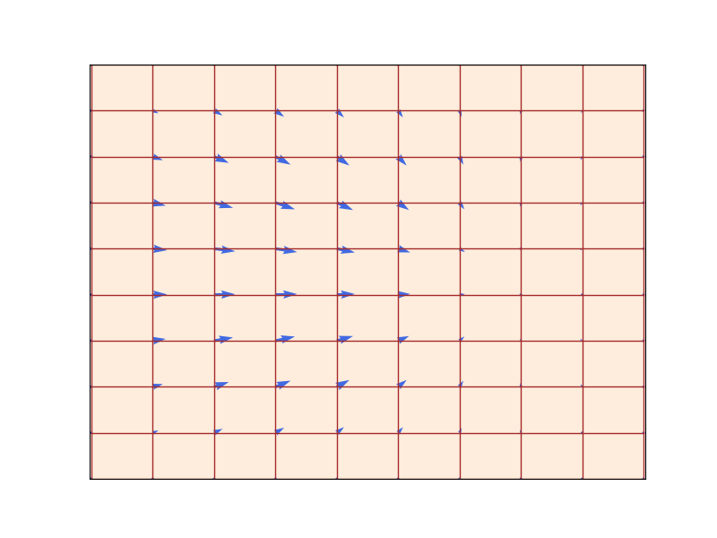
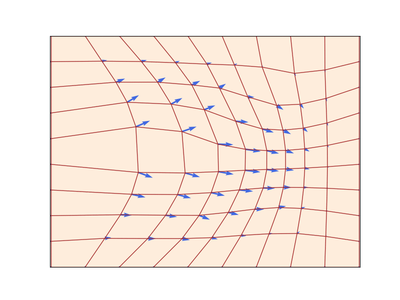
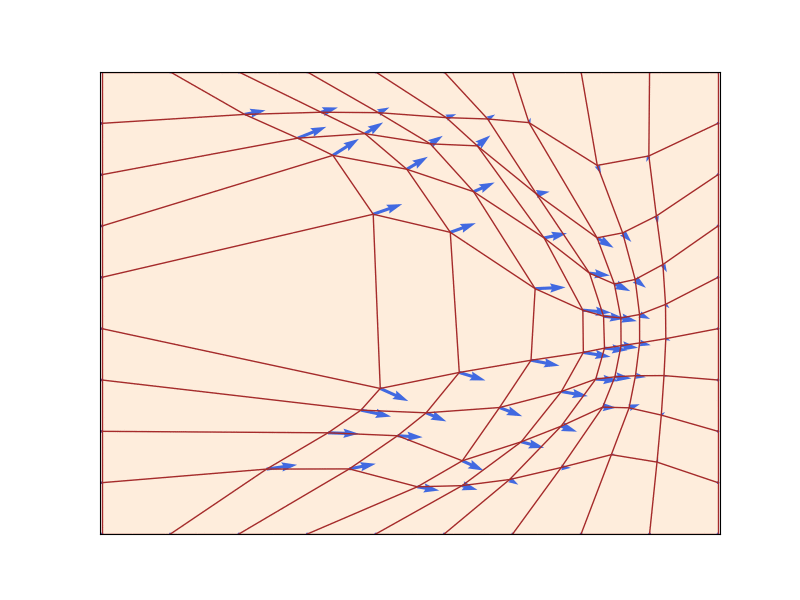
图 1：流 ψ t : R d → R d \psi_{t}:\mathbb{R}^{d}\rightarrow\mathbb{R}^{d} ψ t : R d → R d u t : R d → R d u_{t}:\mathbb{R}^{d}\rightarrow\mathbb{R}^{d} u t : R d → R d d = 2 d=2 d = 2 t t t 26 ]。
例 4（线性向量场）
考虑一个简单的向量场 u t ( x ) u_{t}(x) u t ( x ) x x x θ > 0 \theta>0 θ > 0 u t ( x ) = − θ x u_{t}(x)=-\theta x u t ( x ) = − θ x
ψ t ( x 0 ) = exp ( − θ t ) x 0 (3)
\psi_{t}(x_{0})=\exp\left(-\theta t\right)x_{0} \qquad\text{(3)}
ψ t ( x 0 ) = exp ( − θ t ) x 0 (3) 定义了求解式 2 中 ODE 的流 ψ \psi ψ ψ 0 ( x 0 ) = x 0 \psi_{0}(x_{0})=x_{0} ψ 0 ( x 0 ) = x 0
d d t ψ t ( x 0 ) = 3 d d t ( exp ( − θ t ) x 0 ) = ( i ) − θ exp ( − θ t ) x 0 = 3 − θ ψ t ( x 0 ) = u t ( ψ t ( x 0 ) ) ,
\frac{\mathrm{d}}{\mathrm{d}t}\psi_{t}(x_{0})\overset{3}{=}\frac{\mathrm{d}}{\mathrm{d}t}\left(\exp\left(-\theta t\right)x_{0}\right)\overset{(i)}{=}-\theta\exp\left(-\theta t\right)x_{0}\overset{3}{=}-\theta\psi_{t}(x_{0})=u_{t}(\psi_{t}(x_{0})),
d t d ψ t ( x 0 ) = 3 d t d ( exp ( − θ t ) x 0 ) = ( i ) − θ exp ( − θ t ) x 0 = 3 − θ ψ t ( x 0 ) = u t ( ψ t ( x 0 )) , 其中步骤 (i) 使用了链式法则。图 3 展示了这种流以指数速度收敛到 0 0 0
ODE 的模拟。
一般来说，如果 u t u_{t} u t ψ t \psi_{t} ψ t 数值方法 模拟 ODE。幸运的是，这是数值分析中一个经典且研究充分的问题，已有大量强大的方法 [21 ]。其中最简单、最直观的方法之一是欧拉法 。使用欧拉法时，先初始化 X 0 = x 0 X_{0}=x_{0} X 0 = x 0
X t + h = X t + h u t ( X t ) ( t = 0 , h , 2 h , 3 h , … , 1 − h ) (4)
X_{t+h}=X_{t}+hu_{t}(X_{t})\quad(t=0,h,2h,3h,\dots,1-h) \qquad\text{(4)}
X t + h = X t + h u t ( X t ) ( t = 0 , h , 2 h , 3 h , … , 1 − h ) (4) 其中 h = n − 1 > 0 h=n^{-1}>0 h = n − 1 > 0 步长 ，n ∈ N n\in\mathbb{N} n ∈ N Heun 方法 ，其更新规则为
X t + h ′ = X t + h u t ( X t ) ▶ 新状态的初步预测（与欧拉步相同） X t + h = X t + h 2 ( u t ( X t ) + u t + h ( X t + h ′ ) ) ▶ 利用当前与预测状态处的平均 u 进行更新
\begin{aligned}
X_{t+h}^{\prime} & =X_{t}+hu_{t}(X_{t})\quad & \blacktriangleright\,\,\text{新状态的初步预测（与欧拉步相同）} \\
X_{t+h} & =X_{t}+\frac{h}{2}(u_{t}(X_{t})+u_{t+h}(X_{t+h}^{\prime}))\quad & \blacktriangleright\,\,\text{利用当前与预测状态处的平均 }u\text{ 进行更新}
\end{aligned}
X t + h ′ X t + h = X t + h u t ( X t ) = X t + 2 h ( u t ( X t ) + u t + h ( X t + h ′ )) ▶ 新状态的初步预测（与欧拉步相同） ▶ 利用当前与预测状态处的平均 u 进行更新 直观地说，Heun 方法先对下一步位置作出初步预测 X t + h ′ X_{t+h}^{\prime} X t + h ′
流模型。
现在，我们可以将向量场设为神经网络向量场 u t θ u_{t}^{\theta} u t θ u t θ u_{t}^{\theta} u t θ θ \theta θ u t θ : R d × [ 0 , 1 ] → R d u_{t}^{\theta}:\mathbb{R}^{d}\times[0,1]\to\mathbb{R}^{d} u t θ : R d × [ 0 , 1 ] → R d p d a t a p_{\rm{data}} p data z ∼ p d a t a z\sim p_{\rm{data}} z ∼ p data X 0 X_{0} X 0 初始分布 p i n i t p_{\rm{init}} p init p i n i t = N ( 0 , I d ) p_{\rm{init}}=\mathcal{N}(0,I_{d}) p init = N ( 0 , I d ) 流模型 可由下列 ODE 描述：
X 0 ∼ p i n i t ▶ 随机初始化 d d t X t = u t θ ( X t ) ▶ ODE
\begin{aligned}
X_{0} & \sim p_{\rm{init}} & \blacktriangleright\,\,\text{随机初始化} \\
\frac{\mathrm{d}}{\mathrm{d}t}X_{t} & =u_{t}^{\theta}(X_{t}) & \blacktriangleright\,\,\text{ODE}
\end{aligned}
X 0 d t d X t ∼ p init = u t θ ( X t ) ▶ 随机初始化 ▶ ODE 我们希望轨迹的终点 X 1 X_{1} X 1 p d a t a p_{\rm{data}} p data
X 1 ∼ p d a t a ⇔ ψ 1 θ ( X 0 ) ∼ p d a t a
X_{1}\sim p_{\rm{data}}\quad\Leftrightarrow\quad\psi_{1}^{\theta}(X_{0})\sim p_{\rm{data}}
X 1 ∼ p data ⇔ ψ 1 θ ( X 0 ) ∼ p data 其中 ψ t θ \psi_{t}^{\theta} ψ t θ u t θ u_{t}^{\theta} u t θ 神经网络参数化的是向量场，而不是流本身 。要计算流，需要模拟 ODE。算法 1 总结了从流模型中采样的步骤。
算法 1：用欧拉法从流模型中采样
步骤
操作
0
神经网络向量场 u t θ u_{t}^{\theta} u t θ n n n
1
令 t = 0 t=0 t = 0
2
设置步长 h = 1 n h=\frac{1}{n} h = n 1
3
采样 X 0 ∼ p i n i t X_{0}\sim p_{\rm{init}} X 0 ∼ p init
4
对于 i = 1 , … , n i=1,\dots,n i = 1 , … , n 执行
5
X t + h = X t + h u t θ ( X t ) X_{t+h}=X_{t}+hu_{t}^{\theta}(X_{t}) X t + h = X t + h u t θ ( X t )
6
更新 t ← t + h t\leftarrow t+h t ← t + h
7
结束循环
8
返回 X 1 X_{1} X 1
2.2 扩散模型
随机微分方程（SDE）通过引入随机 轨迹，对 ODE 中的确定性轨迹作了推广。随机轨迹通常称为随机过程 ( X t ) 0 ≤ t ≤ 1 (X_{t})_{0\leq t\leq 1} ( X t ) 0 ≤ t ≤ 1
X t 对每个以下时刻均为随机变量： 0 ≤ t ≤ 1 X : [ 0 , 1 ] → R d , t ↦ X t 是每次抽取以下随机过程时得到的随机轨迹： X
\begin{aligned}
X_{t}\text{ 对每个以下时刻均为随机变量：}0\leq t\leq 1 \\
X:[0,1]\to\mathbb{R}^{d},\quad t\mapsto X_{t}\text{ 是每次抽取以下随机过程时得到的随机轨迹：}X
\end{aligned}
X t 对每个以下时刻均为随机变量： 0 ≤ t ≤ 1 X : [ 0 , 1 ] → R d , t ↦ X t 是每次抽取以下随机过程时得到的随机轨迹： X 特别地，同一随机过程模拟两次，可能得到不同结果，因为其动力学本身就是随机的。
布朗运动。
SDE 通过布朗运动 来构造。布朗运动是一种基本随机过程，源于对物理扩散过程的研究。你可以将其理解为连续的随机游走。
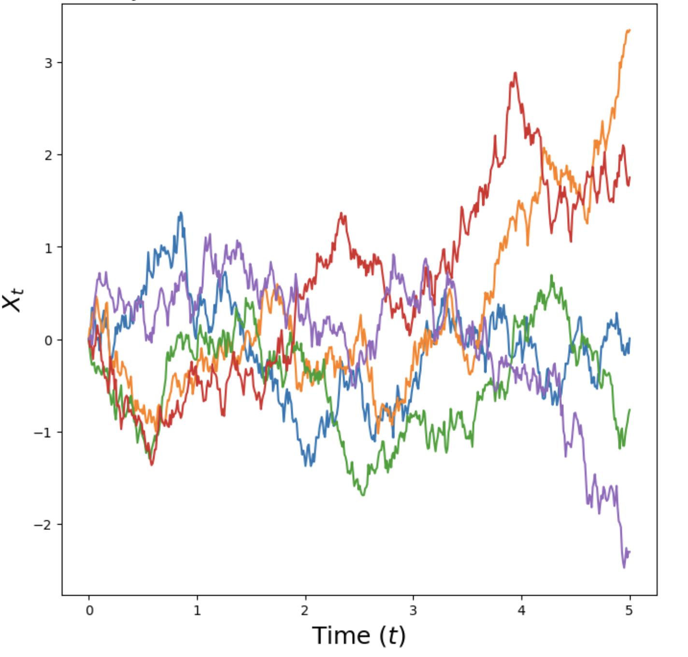
图 2：使用式 5 模拟的 d = 1 d=1 d = 1 W t W_{t} W t
定义如下：布朗运动 W = ( W t ) 0 ≤ t ≤ 1 W=(W_{t})_{0\leq t\leq 1} W = ( W t ) 0 ≤ t ≤ 1 W 0 = 0 W_{0}=0 W 0 = 0 t ↦ W t t\mapsto W_{t} t ↦ W t
**正态增量：**对所有 0 ≤ s < t 0\leq s<t 0 ≤ s < t W t − W s ∼ N ( 0 , ( t − s ) I d ) W_{t}-W_{s}\sim\mathcal{N}(0,(t-s)I_{d}) W t − W s ∼ N ( 0 , ( t − s ) I d ) I d I_{d} I d
**独立增量：**对于任意 0 ≤ t 0 < t 1 < ⋯ < t n = 1 0\leq t_{0}<t_{1}<\dots<t_{n}=1 0 ≤ t 0 < t 1 < ⋯ < t n = 1 W t 1 − W t 0 , … , W t n − W t n − 1 W_{t_{1}}-W_{t_{0}},\dots,W_{t_{n}}-W_{t_{n-1}} W t 1 − W t 0 , … , W t n − W t n − 1
布朗运动也称为 Wiener 过程 ，因此用“W W W h > 0 h>0 h > 0 W 0 = 0 W_{0}=0 W 0 = 0
W t + h = W t + h ϵ t , ϵ t ∼ N ( 0 , I d ) ( t = 0 , h , 2 h , … , 1 − h ) (5)
\begin{aligned}
W_{t+h}= & W_{t}+\sqrt{h}\epsilon_{t},\quad\epsilon_{t}\sim\mathcal{N}(0,I_{d})\quad(t=0,h,2h,\dots,1-h) \qquad\text{(5)}
\end{aligned}
W t + h = W t + h ϵ t , ϵ t ∼ N ( 0 , I d ) ( t = 0 , h , 2 h , … , 1 − h ) (5) 图 2 绘制了布朗运动的几条样本轨迹。布朗运动在随机过程研究中的地位，就如同高斯分布在概率分布研究中的地位。从金融到统计物理，再到流行病学，布朗运动的应用远远超出了机器学习。例如，在金融领域，它被用于为复杂金融工具的价格建模。即便仅从数学构造来看，布朗运动也十分迷人：它的路径是连续的，因此可以一笔画出；但路径的长度又是无穷的，因此你永远画不完。
图 3：d = 1 d=1 d = 1 式 8 ）示意图，其中 θ = 0.25 \theta=0.25 θ = 0.25 σ \sigma σ σ = 0 \sigma=0 σ = 0 t → ∞ t\to\infty t → ∞ σ > 0 \sigma>0 σ > 0 t → ∞ t\to\infty t → ∞ N ( 0 , σ 2 2 θ ) \mathcal{N}(0,\frac{\sigma^{2}}{2\theta}) N ( 0 , 2 θ σ 2 )
从 ODE 到 SDE。
SDE 的思想是在 ODE 的确定性动力学中，加入由布朗运动驱动的随机动力学。由于过程具有随机性，我们无法再像式 1a 那样取导数。因此，需要寻找一种不使用导数的 ODE 等价表述 。为此，将 ODE 的轨迹 ( X t ) 0 ≤ t ≤ 1 (X_{t})_{0\leq t\leq 1} ( X t ) 0 ≤ t ≤ 1
d d t X t = u t ( X t ) ▶ 用导数表示 ⇔ ( i ) 1 h ( X t + h − X t ) = u t ( X t ) + R t ( h ) ⇔ X t + h = X t + h u t ( X t ) + h R t ( h ) ▶ 用无穷小更新表示
\begin{aligned}
\frac{\mathrm{d}}{\mathrm{d}t}X_{t} & =u_{t}(X_{t})\quad & \blacktriangleright\,\,\text{用导数表示} \\
\overset{(i)}{\Leftrightarrow}\quad\frac{1}{h}\left(X_{t+h}-X_{t}\right) & =u_{t}(X_{t})+R_{t}(h) \\
\Leftrightarrow\quad X_{t+h} & =X_{t}+hu_{t}(X_{t})+hR_{t}(h)\quad & \blacktriangleright\,\,\text{用无穷小更新表示}
\end{aligned}
d t d X t ⇔ ( i ) h 1 ( X t + h − X t ) ⇔ X t + h = u t ( X t ) = u t ( X t ) + R t ( h ) = X t + h u t ( X t ) + h R t ( h ) ▶ 用导数表示 ▶ 用无穷小更新表示 其中 R t ( h ) R_{t}(h) R t ( h ) h h h lim h → 0 R t ( h ) = 0 \lim\limits_{h\to 0}R_{t}(h)=0 h → 0 lim R t ( h ) = 0 ( i ) (i) ( i ) ( X t ) 0 ≤ t ≤ 1 (X_{t})_{0\leq t\leq 1} ( X t ) 0 ≤ t ≤ 1 u t ( X t ) u_{t}(X_{t}) u t ( X t ) ( X t ) 0 ≤ t ≤ 1 (X_{t})_{0\leq t\leq 1} ( X t ) 0 ≤ t ≤ 1 u t ( X t ) u_{t}(X_{t}) u t ( X t )
X t + h = X t + h u t ( X t ) ⏟ 确定性项 + σ t ( W t + h − W t ) ⏟ 随机项 + h R t ( h ) ⏟ 误差项 (6)
X_{t+h}=X_{t}+\underbrace{hu_{t}(X_{t})}_{\text{确定性项}}+\sigma_{t}\underbrace{(W_{t+h}-W_{t})}_{\text{随机项}}+\underbrace{hR_{t}(h)}_{\text{误差项}} \qquad\text{(6)}
X t + h = X t + 确定性项 h u t ( X t ) + σ t 随机项 ( W t + h − W t ) + 误差项 h R t ( h ) (6) 其中 σ t ≥ 0 \sigma_{t}\geq 0 σ t ≥ 0 扩散系数 ，R t ( h ) R_{t}(h) R t ( h ) E [ ∥ R t ( h ) ∥ 2 ] 1 / 2 → 0 \mathbb{E}[\|R_{t}(h)\|^{2}]^{1/2}\to 0 E [ ∥ R t ( h ) ∥ 2 ] 1/2 → 0 h → 0 h\to 0 h → 0 随机微分方程（SDE） ，通常采用如下符号记法：
d X t = u t ( X t ) d t + σ t d W t ▶ SDE (7a) X 0 = x 0 ▶ 初始条件 (7b)
\begin{aligned}
\mathrm{d}X_{t} & =u_{t}(X_{t})\mathrm{d}t+\sigma_{t}\mathrm{d}W_{t} & \blacktriangleright\,\,\text{SDE} \qquad\text{(7a)} \\
X_{0} & =x_{0} & \blacktriangleright\,\,\text{初始条件} \qquad\text{(7b)}
\end{aligned}
d X t X 0 = u t ( X t ) d t + σ t d W t = x 0 ▶ SDE (7a) ▶ 初始条件 (7b) 但请始终记住，上面的“d X t \mathrm{d}X_{t} d X t 式 6 的非正式表达。遗憾的是，SDE 不再具有流映射 ϕ t \phi_{t} ϕ t X 0 ∼ p i n i t X_{0}\sim p_{\rm{init}} X 0 ∼ p init X t X_{t} X t
定理 5（SDE 解的存在性与唯一性）
若 u : R d × [ 0 , 1 ] → R d u:\mathbb{R}^{d}\times[0,1]\to\mathbb{R}^{d} u : R d × [ 0 , 1 ] → R d σ t \sigma_{t} σ t 式 7 中的 SDE 存在解，由满足式 6 的唯一随机过程 ( X t ) 0 ≤ t ≤ 1 (X_{t})_{0\leq t\leq 1} ( X t ) 0 ≤ t ≤ 1
如果这是一门随机微积分课程，我们会用数节课来证明此定理，并以完全严谨的数学方式构造 SDE，也就是从基本原理构造布朗运动，再通过随机积分 构造过程 X t X_{t} X t 29 ]。最后请注意，每个 ODE 也都是 SDE，只是其扩散系数 σ t = 0 \sigma_{t}=0 σ t = 0 提到 SDE 时，也将 ODE 包含在内，视其为特殊情形 。
例 6（Ornstein–Uhlenbeck 过程）
考虑常数扩散系数 σ t = σ ≥ 0 \sigma_{t}=\sigma\geq 0 σ t = σ ≥ 0 u t ( x ) = − θ x u_{t}(x)=-\theta x u t ( x ) = − θ x θ > 0 \theta>0 θ > 0
d X t = − θ X t d t + σ d W t . (8)
\mathrm{d}X_{t}=-\theta X_{t}\mathrm{d}t+\sigma\mathrm{d}W_{t}. \qquad\text{(8)}
d X t = − θ X t d t + σ d W t . (8) 上述 SDE 的解 ( X t ) 0 ≤ t ≤ 1 (X_{t})_{0\leq t\leq 1} ( X t ) 0 ≤ t ≤ 1 Ornstein–Uhlenbeck（OU）过程 ，见图 3 。向量场 − θ x -\theta x − θ x 0 0 0 σ \sigma σ t → ∞ t\to\infty t → ∞ N ( 0 , σ 2 / ( 2 θ ) ) \mathcal{N}(0,\sigma^{2}/(2\theta)) N ( 0 , σ 2 / ( 2 θ )) σ = 0 \sigma=0 σ = 0 式 3 中研究过的线性向量场所对应的流。
SDE 的模拟。
如果你暂时觉得 SDE 的抽象定义不易理解，不必担心。一个更直观的理解方式，是回答“如何模拟 SDE？”这个问题。最简单的方法称为 Euler–Maruyama 方法 ，它之于 SDE，基本上相当于欧拉法之于 ODE。使用 Euler–Maruyama 方法时，先初始化 X 0 = x 0 X_{0}=x_{0} X 0 = x 0
X t + h = X t + h u t ( X t ) + h σ t ϵ t , ϵ t ∼ N ( 0 , I d ) (9)
X_{t+h}=X_{t}+hu_{t}(X_{t})+\sqrt{h}\sigma_{t}\epsilon_{t},\quad\quad\epsilon_{t}\sim\mathcal{N}(0,I_{d}) \qquad\text{(9)}
X t + h = X t + h u t ( X t ) + h σ t ϵ t , ϵ t ∼ N ( 0 , I d ) (9) 其中 h = n − 1 > 0 h=n^{-1}>0 h = n − 1 > 0 n ∈ N n\in\mathbb{N} n ∈ N u t ( X t ) u_{t}(X_{t}) u t ( X t ) h σ t \sqrt{h}\sigma_{t} h σ t
算法 2：从扩散模型中采样（Euler–Maruyama 方法）
步骤
操作
0
神经网络 u t θ u_{t}^{\theta} u t θ n n n σ t \sigma_{t} σ t
1
令 t = 0 t=0 t = 0
2
设置步长 h = 1 n h=\frac{1}{n} h = n 1
3
采样 X 0 ∼ p i n i t X_{0}\sim p_{\rm{init}} X 0 ∼ p init
4
对于 i = 1 , … , n i=1,\dots,n i = 1 , … , n 执行
5
采样 ϵ ∼ N ( 0 , I d ) \epsilon\sim\mathcal{N}(0,I_{d}) ϵ ∼ N ( 0 , I d )
6
X t + h = X t + h u t θ ( X t ) + σ t h ϵ X_{t+h}=X_{t}+hu_{t}^{\theta}(X_{t})+\sigma_{t}\sqrt{h}\epsilon X t + h = X t + h u t θ ( X t ) + σ t h ϵ
7
更新 t ← t + h t\leftarrow t+h t ← t + h
8
结束循环
9
返回 X 1 X_{1} X 1
扩散模型。
现在可以像使用 ODE 一样，通过 SDE 构造生成模型。回想一下，我们的目标是将简单分布 p i n i t p_{\rm{init}} p init p d a t a p_{\rm{data}} p data X 0 ∼ p i n i t X_{0}\sim p_{\rm{init}} X 0 ∼ p init u t θ u_{t}^{\theta} u t θ u t u_{t} u t 扩散模型 可写为
X 0 ∼ p i n i t ▶ 随机初始化 d X t = u t θ ( X t ) d t + σ t d W t ▶ SDE
\begin{aligned}
X_{0} & \sim p_{\rm{init}} & \blacktriangleright\,\,\text{随机初始化} \\
\mathrm{d}X_{t} & =u_{t}^{\theta}(X_{t})\mathrm{d}t+\sigma_{t}\mathrm{d}W_{t} & \blacktriangleright\,\,\text{SDE}
\end{aligned}
X 0 d X t ∼ p init = u t θ ( X t ) d t + σ t d W t ▶ 随机初始化 ▶ SDE 算法 2 给出了用 Euler–Maruyama 方法从扩散模型中采样的步骤。本节结论总结如下。
小结 7（SDE 生成模型）
在本文中，扩散模型 由具有参数 θ \theta θ u t θ u_{t}^{\theta} u t θ σ t \sigma_{t} σ t
u θ : R d × [ 0 , 1 ] → R d , ( x , t ) ↦ u t θ ( x ) ，其参数为 θ σ t : [ 0 , 1 ] → [ 0 , ∞ ) , t ↦ σ t
\begin{aligned}
u^{\theta}:\mathbb{R}^{d}\times[0,1]\to\mathbb{R}^{d},\,\,(x,t)\mapsto u_{t}^{\theta}(x)\text{，其参数为 }\theta \\
\sigma_{t}:[0,1]\to[0,\infty),\,\,t\mapsto\sigma_{t}
\end{aligned}
u θ : R d × [ 0 , 1 ] → R d , ( x , t ) ↦ u t θ ( x ) ，其参数为 θ σ t : [ 0 , 1 ] → [ 0 , ∞ ) , t ↦ σ t 从 SDE 模型获得样本，也就是生成对象的步骤如下：
初始化： X 0 ∼ p i n i t ▶ 用简单分布初始化，例如高斯分布 模拟： d X t = u t θ ( X t ) d t + σ t d W t ▶ 从 0 到 1 模拟 SDE 目标： X 1 ∼ p d a t a ▶ 目标是使 X 1 服从分布 p d a t a
\begin{aligned}
\textbf{初始化：}\quad X_{0} & \sim p_{\rm{init}}\quad & \blacktriangleright\,\,\text{用简单分布初始化，例如高斯分布} \\
\textbf{模拟：}\quad\mathrm{d}X_{t} & =u_{t}^{\theta}(X_{t})\mathrm{d}t+\sigma_{t}\mathrm{d}W_{t}\quad & \blacktriangleright\,\,\text{从 0 到 1 模拟 SDE} \\
\textbf{目标：}\quad X_{1} & \sim p_{\rm{data}}\quad & \blacktriangleright\,\,\text{目标是使 }X_{1}\text{ 服从分布 }p_{\rm{data}}\text{}
\end{aligned}
初始化： X 0 模拟： d X t 目标： X 1 ∼ p init = u t θ ( X t ) d t + σ t d W t ∼ p data ▶ 用简单分布初始化，例如高斯分布 ▶ 从 0 到 1 模拟 SDE ▶ 目标是使 X 1 服从分布 p data 当 σ t = 0 \sigma_{t}=0 σ t = 0 流模型 。
3 流匹配
上一节中，我们构造了流模型和扩散模型，它们都是由神经网络向量场 u t θ u_{t}^{\theta} u t θ θ \theta θ 流匹配 [25 , 1 , 27 ]：一种用于训练 u t θ u_{t}^{\theta} u t θ
本节仅讨论流模型：给定神经网络 u t θ u_{t}^{\theta} u t θ
X 0 ∼ p i n i t , d X t = u t θ ( X t ) d t (10)
\begin{aligned}
X_{0}\sim & p_{\rm{init}},\quad\mathrm{d}X_{t}=u_{t}^{\theta}(X_{t})\mathrm{d}t \qquad\text{(10)}
\end{aligned}
X 0 ∼ p init , d X t = u t θ ( X t ) d t (10) 并将 t = 1 t=1 t = 1 X 1 X_{1} X 1 X 1 X_{1} X 1 p d a t a p_{\rm{data}} p data X 1 ∼ p d a t a X_{1}\sim p_{\rm{data}} X 1 ∼ p data 如何优化 θ \theta θ 式 10 中的流模型得到服从数据分布 X 1 ∼ p d a t a X_{1}\sim p_{\rm{data}} X 1 ∼ p data
图 4：一组图像沿高斯条件概率路径，从噪声逐渐插值到数据。每幅图像都是维数为 d = 32 × 32 d=32\times 32 d = 32 × 32 图 5 则以二维直方图展示分布。
3.1 条件概率路径与边缘概率路径
流匹配的第一步是指定一条概率路径 。直观地说，概率路径描述了从噪声 p i n i t p_{\rm{init}} p init p d a t a p_{\rm{data}} p data 图 4 。为什么要这样做？回想一下，我们希望 ODE 轨迹在 t = 0 t=0 t = 0 X 0 ∼ p i n i t X_{0}\sim p_{\rm{init}} X 0 ∼ p init t = 1 t=1 t = 1 X 1 ∼ p d a t a X_{1}\sim p_{\rm{data}} X 1 ∼ p data 0 < t < 1 0<t<1 0 < t < 1
下文对数据点 z ∈ R d z\in\mathbb{R}^{d} z ∈ R d δ z \delta_{z} δ z Dirac δ“分布” 。这是可以想象的最简单的分布：从 δ z \delta_{z} δ z z z z 条件（插值）概率路径 是在 R d \mathbb{R}^{d} R d p t ( x ∣ z ) p_{t}(x|z) p t ( x ∣ z )
p 0 ( ⋅ ∣ z ) = p i n i t , p 1 ( ⋅ ∣ z ) = δ z ，对所有 z ∈ R d . (11)
p_{0}(\cdot|z)=p_{\rm{init}},\quad p_{1}(\cdot|z)=\delta_{z}\quad\text{，对所有 }z\in\mathbb{R}^{d}. \qquad\text{(11)}
p 0 ( ⋅ ∣ z ) = p init , p 1 ( ⋅ ∣ z ) = δ z ，对所有 z ∈ R d . (11) 换言之，条件概率路径将初始分布 p i n i t p_{\rm{init}} p init 图 4 。你可以将概率路径理解为分布空间中的一条轨迹。
每条条件概率路径 p t ( x ∣ z ) p_{t}(x|z) p t ( x ∣ z ) 边缘概率路径 p t ( x ) p_{t}(x) p t ( x ) z ∼ p d a t a z\sim p_{\rm{data}} z ∼ p data p t ( ⋅ ∣ z ) p_{t}(\cdot|z) p t ( ⋅ ∣ z )
z ∼ p d a t a , x ∼ p t ( ⋅ ∣ z ) ⇒ x ∼ p t ▶ 从边缘路径采样 (12) p t ( x ) = ∫ p t ( x ∣ z ) p d a t a ( z ) d z ▶ 边缘路径的密度 (13)
\begin{aligned}
z & \sim p_{\rm{data}},\quad x\sim p_{t}(\cdot|z)\quad\Rightarrow x\sim p_{t} & \blacktriangleright\,\,\text{从边缘路径采样} \qquad\text{(12)} \\
p_{t}(x) & =\int p_{t}(x|z)p_{\rm{data}}(z)\mathrm{d}z & \blacktriangleright\,\,\text{边缘路径的密度} \qquad\text{(13)}
\end{aligned}
z p t ( x ) ∼ p data , x ∼ p t ( ⋅ ∣ z ) ⇒ x ∼ p t = ∫ p t ( x ∣ z ) p data ( z ) d z ▶ 从边缘路径采样 (12) ▶ 边缘路径的密度 (13) 请注意，我们知道如何从 p t p_{t} p t p t ( x ) p_{t}(x) p t ( x ) 式 12 ，却不能计算式 13 。你可以自行检查：由于式 11 对 p t ( ⋅ ∣ z ) p_{t}(\cdot|z) p t ( ⋅ ∣ z ) p t p_{t} p t p i n i t p_{\rm{init}} p init p d a t a p_{\rm{data}} p data
p 0 = p i n i t 且 p 1 = p d a t a . ▶ 噪声到数据的插值 (14)
p_{0}=p_{\rm{init}}\quad\text{且}\quad p_{1}=p_{\rm{data}}.\quad\quad\quad\quad\blacktriangleright\,\,\text{噪声到数据的插值} \qquad\text{(14)}
p 0 = p init 且 p 1 = p data . ▶ 噪声到数据的插值 (14) 高斯概率路径是最重要的概率路径例子，其重要性远超其他例子，因此强烈建议你仔细阅读下面的示例。
图 5：条件概率路径（上）与边缘概率路径（下）示意图。这里绘制的是满足 α t = t , β t = 1 − t \alpha_{t}=t,\beta_{t}=1-t α t = t , β t = 1 − t p i n i t = N ( 0 , I d ) p_{\rm{init}}=\mathcal{N}(0,I_{d}) p init = N ( 0 , I d ) z z z p d a t a = δ z p_{\rm{data}}=\delta_{z} p data = δ z p d a t a p_{\rm{data}} p data p d a t a p_{\rm{data}} p data d = 2 d=2 d = 2
例 8（高斯条件概率路径）
一种特别常用的概率路径是高斯概率路径 ，也是大多数先进模型采用的概率路径 。设 α t , β t \alpha_{t},\beta_{t} α t , β t 噪声调度函数 ，即两个连续可微的单调函数，满足 α 0 = β 1 = 0 \alpha_{0}=\beta_{1}=0 α 0 = β 1 = 0 α 1 = β 0 = 1 \alpha_{1}=\beta_{0}=1 α 1 = β 0 = 1
p t ( ⋅ ∣ z ) = N ( α t z , β t 2 I d ) ▶ 高斯条件路径 (15)
\begin{aligned}
p_{t}(\cdot|z) & =\mathcal{N}(\alpha_{t}z,\beta_{t}^{2}I_{d}) & \blacktriangleright\,\,\text{高斯条件路径} \qquad\text{(15)}
\end{aligned}
p t ( ⋅ ∣ z ) = N ( α t z , β t 2 I d ) ▶ 高斯条件路径 (15) 根据对 α t \alpha_{t} α t β t \beta_{t} β t
p 0 ( ⋅ ∣ z ) = N ( α 0 z , β 0 2 I d ) = N ( 0 , I d ) , 且 p 1 ( ⋅ ∣ z ) = N ( α 1 z , β 1 2 I d ) = δ z ,
\begin{aligned}
p_{0}(\cdot|z) & =\mathcal{N}(\alpha_{0}z,\beta_{0}^{2}I_{d})=\mathcal{N}(0,I_{d}),\quad\text{且}\quad p_{1}(\cdot|z)=\mathcal{N}(\alpha_{1}z,\beta_{1}^{2}I_{d})=\delta_{z},
\end{aligned}
p 0 ( ⋅ ∣ z ) = N ( α 0 z , β 0 2 I d ) = N ( 0 , I d ) , 且 p 1 ( ⋅ ∣ z ) = N ( α 1 z , β 1 2 I d ) = δ z , 这里用到的事实是：均值为 z z z δ z \delta_{z} δ z p t ( x ∣ z ) p_{t}(x|z) p t ( x ∣ z ) p i n i t = N ( 0 , I d ) p_{\rm{init}}=\mathcal{N}(0,I_{d}) p init = N ( 0 , I d ) 式 11 ，构成有效的条件插值路径。图 4 展示了它在图像上的应用。从边缘路径 p t p_{t} p t
z ∼ p d a t a , ϵ ∼ p i n i t = N ( 0 , I d ) ⇒ x = α t z + β t ϵ ∼ p t ▶ 从边缘高斯路径采样 (16)
\begin{aligned}
z\sim & p_{\rm{data}},\,\epsilon\sim p_{\rm{init}}=\mathcal{N}(0,I_{d})\,\Rightarrow\,x=\alpha_{t}z+\beta_{t}\epsilon\sim p_{t}\quad & \blacktriangleright\,\,\text{从边缘高斯路径采样} \qquad\text{(16)}
\end{aligned}
z ∼ p data , ϵ ∼ p init = N ( 0 , I d ) ⇒ x = α t z + β t ϵ ∼ p t ▶ 从边缘高斯路径采样 (16) 直观地说，上述过程在 t t t t = 0 t=0 t = 0 图 5 给出了一条这样的插值路径。
3.2 条件向量场与边缘向量场
概率路径 ( p t ) 0 ≤ t ≤ 1 (p_{t})_{0\leq t\leq 1} ( p t ) 0 ≤ t ≤ 1 X t X_{t} X t X t ∼ p t X_{t}\sim p_{t} X t ∼ p t X t X_{t} X t
对每个数据点 z ∈ R d z\in\mathbb{R}^{d} z ∈ R d u t target ( ⋅ ∣ z ) u^{\text{target}}_{t}(\cdot|z) u t target ( ⋅ ∣ z ) 条件向量场 。只要相应 ODE 产生条件概率路径 p t ( ⋅ ∣ z ) p_{t}(\cdot|z) p t ( ⋅ ∣ z )
X 0 ∼ p i n i t , d d t X t = u t target ( X t ∣ z ) ⇒ X t ∼ p t ( ⋅ ∣ z ) ( 0 ≤ t ≤ 1 ) . (17)
\begin{aligned}
X_{0} & \sim p_{\rm{init}},\quad\frac{\mathrm{d}}{\mathrm{d}t}X_{t}=u^{\text{target}}_{t}(X_{t}|z)\quad\Rightarrow\quad X_{t}\sim p_{t}(\cdot|z)\quad(0\leq t\leq 1). \qquad\text{(17)}
\end{aligned}
X 0 ∼ p init , d t d X t = u t target ( X t ∣ z ) ⇒ X t ∼ p t ( ⋅ ∣ z ) ( 0 ≤ t ≤ 1 ) . (17) 我们往往能够手工解析求出条件向量场 u t target ( ⋅ ∣ z ) u^{\text{target}}_{t}(\cdot|z) u t target ( ⋅ ∣ z ) 例 10 将针对贯穿全文的高斯概率路径，推导条件向量场 u t ( x ∣ z ) u_{t}(x|z) u t ( x ∣ z )
乍看之下，条件向量场似乎没有用，因为 ODE 的所有终点 X 1 X_{1} X 1 X 1 = z X_{1}=z X 1 = z z z z p d a t a p_{\rm{data}} p data
定理 9（边缘化技巧）
设 u t target ( x ∣ z ) u^{\text{target}}_{t}(x|z) u t target ( x ∣ z ) 式 17 的条件向量场。定义边缘向量场 u t target ( x ) u^{\text{target}}_{t}(x) u t target ( x )
u t target ( x ) = ∫ u t target ( x ∣ z ) p t ( x ∣ z ) p d a t a ( z ) p t ( x ) d z , (18)
u^{\text{target}}_{t}(x)=\int u^{\text{target}}_{t}(x|z)\frac{p_{t}(x|z)p_{\rm{data}}(z)}{p_{t}(x)}\mathrm{d}z, \qquad\text{(18)}
u t target ( x ) = ∫ u t target ( x ∣ z ) p t ( x ) p t ( x ∣ z ) p data ( z ) d z , (18) 则它遵循边缘概率路径，即
X 0 ∼ p i n i t , d d t X t = u t target ( X t ) ⇒ X t ∼ p t ( 0 ≤ t ≤ 1 ) . (19)
\begin{aligned}
X_{0} & \sim p_{\rm{init}},\quad\frac{\mathrm{d}}{\mathrm{d}t}X_{t}=u^{\text{target}}_{t}(X_{t})\quad\Rightarrow\quad X_{t}\sim p_{t}\quad(0\leq t\leq 1). \qquad\text{(19)}
\end{aligned}
X 0 ∼ p init , d t d X t = u t target ( X t ) ⇒ X t ∼ p t ( 0 ≤ t ≤ 1 ) . (19) 特别地，这个 ODE 满足 X 1 ∼ p d a t a X_{1}\sim p_{\rm{data}} X 1 ∼ p data u t target u^{\text{target}}_{t} u t target p i n i t p_{\rm{init}} p init p d a t a p_{\rm{data}} p data
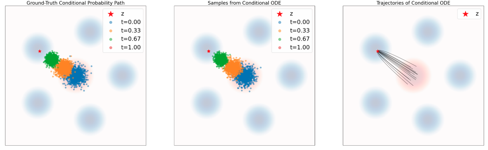
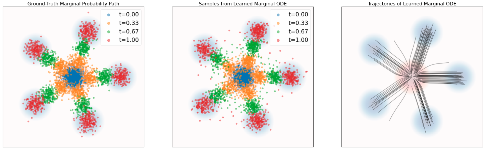
图 6：定理 9 的图示：用 ODE 模拟概率路径。蓝色背景表示数据分布 p d a t a p_{\rm{data}} p data p i n i t p_{\rm{init}} p init p t ( ⋅ ∣ z ) p_{t}(\cdot|z) p t ( ⋅ ∣ z ) 式 20 中的 u t target ( x ∣ z ) u^{\text{target}}_{t}(x|z) u t target ( x ∣ z ) p t p_{t} p t u t flow ( x ) u^{\text{flow}}_{t}(x) u t flow ( x )
例 10（高斯概率路径的目标 ODE）
与前文相同，设 p t ( ⋅ ∣ z ) = N ( α t z , β t 2 I d ) p_{t}(\cdot|z)=\mathcal{N}(\alpha_{t}z,\beta_{t}^{2}I_{d}) p t ( ⋅ ∣ z ) = N ( α t z , β t 2 I d ) α t , β t \alpha_{t},\beta_{t} α t , β t 式 15 。用 α ˙ t = ∂ t α t \dot{\alpha}_{t}=\partial_{t}\alpha_{t} α ˙ t = ∂ t α t β ˙ t = ∂ t β t \dot{\beta}_{t}=\partial_{t}\beta_{t} β ˙ t = ∂ t β t α t \alpha_{t} α t β t \beta_{t} β t 条件高斯向量场
u t target ( x ∣ z ) = ( α ˙ t − β ˙ t β t α t ) z + β ˙ t β t x (20)
u^{\text{target}}_{t}(x|z)=\left(\dot{\alpha}_{t}-\frac{\dot{\beta}_{t}}{\beta_{t}}\alpha_{t}\right)z+\frac{\dot{\beta}_{t}}{\beta_{t}}x \qquad\text{(20)}
u t target ( x ∣ z ) = ( α ˙ t − β t β ˙ t α t ) z + β t β ˙ t x (20) 是定理 9 意义下有效的条件向量场模型：当 X 0 ∼ N ( 0 , I d ) X_{0}\sim\mathcal{N}(0,I_{d}) X 0 ∼ N ( 0 , I d ) X t X_{t} X t X t ∼ p t ( ⋅ ∣ z ) = N ( α t z , β t 2 I d ) X_{t}\sim p_{t}(\cdot|z)=\mathcal{N}(\alpha_{t}z,\beta_{t}^{2}I_{d}) X t ∼ p t ( ⋅ ∣ z ) = N ( α t z , β t 2 I d ) 图 6 通过比较条件概率路径中的真实样本与该流的 ODE 模拟样本，直观验证了这一点。可以看到，二者分布一致。下面给出证明。
证明。
首先定义如下条件流模型 ψ t target ( x ∣ z ) \psi^{\text{target}}_{t}(x|z) ψ t target ( x ∣ z )
ψ t target ( x ∣ z ) = α t z + β t x . (21)
\psi^{\text{target}}_{t}(x|z)=\alpha_{t}z+\beta_{t}x. \qquad\text{(21)}
ψ t target ( x ∣ z ) = α t z + β t x . (21) 若 X t X_{t} X t ψ t target ( ⋅ ∣ z ) \psi^{\text{target}}_{t}(\cdot|z) ψ t target ( ⋅ ∣ z ) X 0 ∼ p i n i t = N ( 0 , I d ) X_{0}\sim p_{\rm{init}}=\mathcal{N}(0,I_{d}) X 0 ∼ p init = N ( 0 , I d )
X t = ψ t target ( X 0 ∣ z ) = α t z + β t X 0 ∼ N ( α t z , β 2 I d ) = p t ( ⋅ ∣ z ) .
X_{t}=\psi^{\text{target}}_{t}(X_{0}|z)=\alpha_{t}z+\beta_{t}X_{0}\sim\mathcal{N}(\alpha_{t}z,\beta^{2}I_{d})=p_{t}(\cdot|z).
X t = ψ t target ( X 0 ∣ z ) = α t z + β t X 0 ∼ N ( α t z , β 2 I d ) = p t ( ⋅ ∣ z ) . 因此，轨迹服从条件概率路径的分布，即满足式 17 。剩下只需从 ψ t target ( x ∣ z ) \psi^{\text{target}}_{t}(x|z) ψ t target ( x ∣ z ) u t target ( x ∣ z ) u^{\text{target}}_{t}(x|z) u t target ( x ∣ z ) 式 2b ），有
d d t ψ t target ( x ∣ z ) = u t target ( ψ t target ( x ∣ z ) ∣ z ) ，对所有 x , z ∈ R d ⇔ ( i ) α ˙ t z + β ˙ t x = u t target ( α t z + β t x ∣ z ) ，对所有 x , z ∈ R d ⇔ ( i i ) α ˙ t z + β ˙ t ( x − α t z β t ) = u t target ( x ∣ z ) ，对所有 x , z ∈ R d ⇔ ( i i i ) ( α ˙ t − β ˙ t β t α t ) z + β ˙ t β t x = u t target ( x ∣ z ) ，对所有 x , z ∈ R d
\begin{aligned}
\frac{\mathrm{d}}{\mathrm{d}t}\psi^{\text{target}}_{t}(x|z) & =u^{\text{target}}_{t}(\psi^{\text{target}}_{t}(x|z)|z)\quad\text{，对所有 }x,z\in\mathbb{R}^{d} \\
\overset{(i)}{\Leftrightarrow}\quad\dot{\alpha}_{t}z+\dot{\beta}_{t}x & =u^{\text{target}}_{t}(\alpha_{t}z+\beta_{t}x|z)\quad\text{，对所有 }x,z\in\mathbb{R}^{d} \\
\overset{(ii)}{\Leftrightarrow}\quad\dot{\alpha}_{t}z+\dot{\beta}_{t}\left(\frac{x-\alpha_{t}z}{\beta_{t}}\right) & =u^{\text{target}}_{t}(x|z)\quad\text{，对所有 }x,z\in\mathbb{R}^{d} \\
\overset{(iii)}{\Leftrightarrow}\quad\left(\dot{\alpha}_{t}-\frac{\dot{\beta}_{t}}{\beta_{t}}\alpha_{t}\right)z+\frac{\dot{\beta}_{t}}{\beta_{t}}x & =u^{\text{target}}_{t}(x|z)\quad\text{，对所有 }x,z\in\mathbb{R}^{d}
\end{aligned}
d t d ψ t target ( x ∣ z ) ⇔ ( i ) α ˙ t z + β ˙ t x ⇔ ( ii ) α ˙ t z + β ˙ t ( β t x − α t z ) ⇔ ( iii ) ( α ˙ t − β t β ˙ t α t ) z + β t β ˙ t x = u t target ( ψ t target ( x ∣ z ) ∣ z ) ，对所有 x , z ∈ R d = u t target ( α t z + β t x ∣ z ) ，对所有 x , z ∈ R d = u t target ( x ∣ z ) ，对所有 x , z ∈ R d = u t target ( x ∣ z ) ，对所有 x , z ∈ R d 其中，步骤 ( i ) (i) ( i ) ψ t target ( x ∣ z ) \psi^{\text{target}}_{t}(x|z) ψ t target ( x ∣ z ) 式 21 ）；步骤 ( i i ) (ii) ( ii ) x → ( x − α t z ) / β t x\rightarrow(x-\alpha_{t}z)/\beta_{t} x → ( x − α t z ) / β t ( i i i ) (iii) ( iii ) 式 20 定义的条件高斯向量场，命题得证。 ∎
图 6 展示了定理 9 。下面直观理解边缘向量场。统计学中的贝叶斯法则 说明，下式给出一个后验分布：
p t ( x ∣ z ) p d a t a ( z ) p t ( x ) = “数据点的后验分布 z ，给定含噪数据 x "
\frac{p_{t}(x|z)p_{\rm{data}}(z)}{p_{t}(x)}=\text{“数据点的后验分布 }z\text{，给定含噪数据 }x\text{"}
p t ( x ) p t ( x ∣ z ) p data ( z ) = “ 数据点的后验分布 z ，给定含噪数据 x " 其中 p d a t a ( z ) p_{\rm{data}}(z) p data ( z ) z z z u t ( x ∣ z ) u_{t}(x|z) u t ( x ∣ z ) z z z x x x z z z
本节余下部分将把这种直觉严格化，并证明定理 9 。主要数学工具是连续性方程 ，这是数学和物理学中的基本方程。定义散度 算子 d i v \mathrm{div} div
d i v ( v t ) ( x ) = ∑ i = 1 d ∂ ∂ x i v t i ( x ) (22)
\begin{aligned}
\mathrm{div}(v_{t})(x)= & \sum\limits_{i=1}^{d}\frac{\partial}{\partial x_{i}}v_{t}^{i}(x) \qquad\text{(22)}
\end{aligned}
div ( v t ) ( x ) = i = 1 ∑ d ∂ x i ∂ v t i ( x ) (22) 其中 v t i v_{t}^{i} v t i v t v_{t} v t i i i
定理 11（连续性方程）
考虑一个向量场为 u t target u^{\text{target}}_{t} u t target X 0 ∼ p i n i t = p 0 X_{0}\sim p_{\rm{init}}=p_{0} X 0 ∼ p init = p 0 0 ≤ t ≤ 1 0\leq t\leq 1 0 ≤ t ≤ 1 X t ∼ p t X_{t}\sim p_{t} X t ∼ p t
∂ t p t ( x ) = − d i v ( p t u t target ) ( x ) ，对所有 x ∈ R d , 0 ≤ t ≤ 1 , (23)
\partial_{t}p_{t}(x)=-\mathrm{div}(p_{t}u^{\text{target}}_{t})(x)\quad\text{，对所有 }x\in\mathbb{R}^{d},0\leq t\leq 1, \qquad\text{(23)}
∂ t p t ( x ) = − div ( p t u t target ) ( x ) ，对所有 x ∈ R d , 0 ≤ t ≤ 1 , (23) 其中 ∂ t p t ( x ) = d d t p t ( x ) \partial_{t}p_{t}(x)=\frac{\mathrm{d}}{\mathrm{d}t}p_{t}(x) ∂ t p t ( x ) = d t d p t ( x ) p t ( x ) p_{t}(x) p t ( x ) 式 23 称为连续性方程 。
对偏重数学的读者，附录 B 给出了连续性方程的完整证明。继续之前，先直观理解它。左侧 ∂ t p t ( x ) \partial_{t}p_{t}(x) ∂ t p t ( x ) x x x p t ( x ) p_{t}(x) p t ( x ) X t X_{t} X t u t target u^{\text{target}}_{t} u t target x x x − d i v ( p t u t ) -\mathrm{div}(p_{t}u_{t}) − div ( p t u t ) 定理 9 的边缘化技巧。
定理 9 的证明。
根据定理 11 ，只需证明式 18 定义的边缘向量场 u t target u^{\text{target}}_{t} u t target
∂ t p t ( x ) = ( i ) ∂ t ∫ p t ( x ∣ z ) p d a t a ( z ) d z = ∫ ∂ t p t ( x ∣ z ) p d a t a ( z ) d z = ( i i ) ∫ − d i v ( p t ( ⋅ ∣ z ) u t target ( ⋅ ∣ z ) ) ( x ) p d a t a ( z ) d z = ( i i i ) − d i v ( ∫ p t ( x ∣ z ) u t target ( x ∣ z ) p d a t a ( z ) d z ) = ( i v ) − d i v ( p t ( x ) ∫ u t target ( x ∣ z ) p t ( x ∣ z ) p d a t a ( z ) p t ( x ) d z ) ( x ) = ( v ) − d i v ( p t u t target ) ( x ) ,
\begin{aligned}
\partial_{t}p_{t}(x)\overset{(i)}{=}\partial_{t}\int p_{t}(x|z)p_{\rm{data}}(z)\mathrm{d}z & =\int\partial_{t}p_{t}(x|z)p_{\rm{data}}(z)\mathrm{d}z \\
\overset{(ii)}{=}\int-\mathrm{div}(p_{t}(\cdot|z)u^{\text{target}}_{t}(\cdot|z))(x)p_{\rm{data}}(z)\mathrm{d}z \\
\overset{(iii)}{=}-\mathrm{div}\left(\int p_{t}(x|z)u^{\text{target}}_{t}(x|z)p_{\rm{data}}(z)\mathrm{d}z\right) \\
\overset{(iv)}{=}-\mathrm{div}\left(p_{t}(x)\int u^{\text{target}}_{t}(x|z)\frac{p_{t}(x|z)p_{\rm{data}}(z)}{p_{t}(x)}\mathrm{d}z\right)(x) \\
\overset{(v)}{=}-\mathrm{div}\left(p_{t}u^{\text{target}}_{t}\right)(x),
\end{aligned}
∂ t p t ( x ) = ( i ) ∂ t ∫ p t ( x ∣ z ) p data ( z ) d z = ( ii ) ∫ − div ( p t ( ⋅ ∣ z ) u t target ( ⋅ ∣ z )) ( x ) p data ( z ) d z = ( iii ) − div ( ∫ p t ( x ∣ z ) u t target ( x ∣ z ) p data ( z ) d z ) = ( i v ) − div ( p t ( x ) ∫ u t target ( x ∣ z ) p t ( x ) p t ( x ∣ z ) p data ( z ) d z ) ( x ) = ( v ) − div ( p t u t target ) ( x ) , = ∫ ∂ t p t ( x ∣ z ) p data ( z ) d z 其中，步骤 ( i ) (i) ( i ) 式 12 中 p t ( x ) p_{t}(x) p t ( x ) ( i i ) (ii) ( ii ) p t ( ⋅ ∣ z ) p_{t}(\cdot|z) p t ( ⋅ ∣ z ) ( i i i ) (iii) ( iii ) 式 22 交换了积分与散度算子；步骤 ( i v ) (iv) ( i v ) p t ( x ) p_{t}(x) p t ( x ) ( v ) (v) ( v ) 式 18 。上述等式链的首尾表明，u t target u^{\text{target}}_{t} u t target 定理 11 ，这足以推出式 19 ，证毕。∎
3.3 学习边缘向量场
现在可以介绍训练算法了。流匹配的目标是训练神经网络 u t θ u_{t}^{\theta} u t θ u t target u^{\text{target}}_{t} u t target 定理 9 ，终点 X 1 ∼ p d a t a X_{1}\sim p_{\rm{data}} X 1 ∼ p data Unif = Unif [ 0 , 1 ] \text{Unif}=\text{Unif}_{[0,1]} Unif = Unif [ 0 , 1 ] [ 0 , 1 ] [0,1] [ 0 , 1 ] E \mathbb{E} E u t θ ≈ u t target u_{t}^{\theta}\approx u^{\text{target}}_{t} u t θ ≈ u t target 流匹配损失 ：
L FM ( θ ) = E t ∼ Unif , x ∼ p t [ ∥ u t θ ( x ) − u t target ( x ) ∥ 2 ] (24) = ( i ) E t ∼ Unif , z ∼ p d a t a , x ∼ p t ( ⋅ ∣ z ) [ ∥ u t θ ( x ) − u t target ( x ) ∥ 2 ] , (25)
\begin{aligned}
\mathcal{L}_{\text{FM}}(\theta) & =\mathbb{E}_{t\sim\text{Unif},x\sim p_{t}}[\|u_{t}^{\theta}(x)-u^{\text{target}}_{t}(x)\|^{2}] \qquad\text{(24)} \\
\overset{(i)}{=}\mathbb{E}_{t\sim\text{Unif},z\sim p_{\rm{data}},x\sim p_{t}(\cdot|z)}[\|u_{t}^{\theta}(x)-u^{\text{target}}_{t}(x)\|^{2}], \qquad\text{(25)}
\end{aligned}
L FM ( θ ) = ( i ) E t ∼ Unif , z ∼ p data , x ∼ p t ( ⋅ ∣ z ) [ ∥ u t θ ( x ) − u t target ( x ) ∥ 2 ] , (25) = E t ∼ Unif , x ∼ p t [ ∥ u t θ ( x ) − u t target ( x ) ∥ 2 ] (24) 其中 p t ( x ) = ∫ p t ( x ∣ z ) p d a t a ( z ) d z p_{t}(x)=\int p_{t}(x|z)p_{\rm{data}}(z)\mathrm{d}z p t ( x ) = ∫ p t ( x ∣ z ) p data ( z ) d z ( i ) (i) ( i ) 式 12 的采样方法。直观地说，这个损失的计算过程是：先随机采样时刻 t ∈ [ 0 , 1 ] t\in[0,1] t ∈ [ 0 , 1 ] z z z p t ( ⋅ ∣ z ) p_{t}(\cdot|z) p t ( ⋅ ∣ z ) u t θ ( x ) u_{t}^{\theta}(x) u t θ ( x ) u t target ( x ) u^{\text{target}}_{t}(x) u t target ( x ) 定理 9 已知 u t target u^{\text{target}}_{t} u t target 条件 速度场 u t target ( x ∣ z ) u^{\text{target}}_{t}(x|z) u t target ( x ∣ z ) 条件流匹配损失 ：
L CFM ( θ ) = E t ∼ Unif , z ∼ p d a t a , x ∼ p t ( ⋅ ∣ z ) [ ∥ u t θ ( x ) − u t target ( x ∣ z ) ∥ 2 ] . (26)
\mathcal{L}_{\text{CFM}}(\theta)=\mathbb{E}_{t\sim\text{Unif},z\sim p_{\rm{data}},x\sim p_{t}(\cdot|z)}[\|u_{t}^{\theta}(x)-u^{\text{target}}_{t}(x|z)\|^{2}]. \qquad\text{(26)}
L CFM ( θ ) = E t ∼ Unif , z ∼ p data , x ∼ p t ( ⋅ ∣ z ) [ ∥ u t θ ( x ) − u t target ( x ∣ z ) ∥ 2 ] . (26) 请注意它与式 24 的区别：这里用条件向量场 u t target ( x ∣ z ) u^{\text{target}}_{t}(x|z) u t target ( x ∣ z ) u t target ( x ) u^{\text{target}}_{t}(x) u t target ( x ) u t target ( x ∣ z ) u^{\text{target}}_{t}(x|z) u t target ( x ∣ z )
定理 12
边缘流匹配损失与条件流匹配损失仅相差一个常数，即
L FM ( θ ) = L CFM ( θ ) + C ,
\mathcal{L}_{\text{FM}}(\theta)=\mathcal{L}_{\text{CFM}}(\theta)+C,
L FM ( θ ) = L CFM ( θ ) + C , 其中 C C C θ \theta θ
∇ θ L FM ( θ ) = ∇ θ L CFM ( θ ) .
\nabla_{\theta}\mathcal{L}_{\text{FM}}(\theta)=\nabla_{\theta}\mathcal{L}_{\text{CFM}}(\theta).
∇ θ L FM ( θ ) = ∇ θ L CFM ( θ ) . 因而，例如使用随机梯度下降（SGD）最小化 L CFM ( θ ) \mathcal{L}_{\text{CFM}}(\theta) L CFM ( θ ) L FM ( θ ) \mathcal{L}_{\text{FM}}(\theta) L FM ( θ ) 对于 L CFM ( θ ) \mathcal{L}_{\text{CFM}}(\theta) L CFM ( θ ) θ ∗ \theta^{*} θ ∗ u t θ ∗ = u t target u_{t}^{\theta^{*}}=u^{\text{target}}_{t} u t θ ∗ = u t target ，这里假设参数化模型具有无限表达能力。
直接证明。
证明思路是将均方误差展开为三项，并去除常数：
L FM ( θ ) = ( i ) E t ∼ Unif , x ∼ p t [ ∥ u t θ ( x ) − u t target ( x ) ∥ 2 ] = ( i i ) E t ∼ Unif , x ∼ p t [ ∥ u t θ ( x ) ∥ 2 − 2 u t θ ( x ) T u t target ( x ) + ∥ u t target ( x ) ∥ 2 ] = ( i i i ) E t ∼ Unif , x ∼ p t [ ∥ u t θ ( x ) ∥ 2 ] − 2 E t ∼ Unif , x ∼ p t [ u t θ ( x ) T u t target ( x ) ] + E t ∼ Unif [ 0 , 1 ] , x ∼ p t [ ∥ u t target ( x ) ∥ 2 ] ⏟ = : C 1 = ( i v ) E t ∼ Unif , z ∼ p d a t a , x ∼ p t ( ⋅ ∣ z ) [ ∥ u t θ ( x ) ∥ 2 ] − 2 E t ∼ Unif , x ∼ p t [ u t θ ( x ) T u t target ( x ) ] + C 1
\begin{aligned}
\mathcal{L}_{\text{FM}}(\theta) & \overset{(i)}{=}\mathbb{E}_{t\sim\text{Unif},x\sim p_{t}}[\|u_{t}^{\theta}(x)-u^{\text{target}}_{t}(x)\|^{2}] \\
\overset{(ii)}{=}\mathbb{E}_{t\sim\text{Unif},x\sim p_{t}}[\|u_{t}^{\theta}(x)\|^{2}-2u_{t}^{\theta}(x)^{T}u^{\text{target}}_{t}(x)+\|u^{\text{target}}_{t}(x)\|^{2}] \\
\overset{(iii)}{=}\mathbb{E}_{t\sim\text{Unif},x\sim p_{t}}\left[\|u_{t}^{\theta}(x)\|^{2}\right]-2\mathbb{E}_{t\sim\text{Unif},x\sim p_{t}}[u_{t}^{\theta}(x)^{T}u^{\text{target}}_{t}(x)]+\underbrace{\mathbb{E}_{t\sim\text{Unif}_{[0,1]},x\sim p_{t}}[\|u^{\text{target}}_{t}(x)\|^{2}]}_{=:C_{1}} \\
\overset{(iv)}{=}\mathbb{E}_{t\sim\text{Unif},z\sim p_{\rm{data}},x\sim p_{t}(\cdot|z)}[\|u_{t}^{\theta}(x)\|^{2}]-2\mathbb{E}_{t\sim\text{Unif},x\sim p_{t}}[u_{t}^{\theta}(x)^{T}u^{\text{target}}_{t}(x)]+C_{1}
\end{aligned}
L FM ( θ ) = ( ii ) E t ∼ Unif , x ∼ p t [ ∥ u t θ ( x ) ∥ 2 − 2 u t θ ( x ) T u t target ( x ) + ∥ u t target ( x ) ∥ 2 ] = ( iii ) E t ∼ Unif , x ∼ p t [ ∥ u t θ ( x ) ∥ 2 ] − 2 E t ∼ Unif , x ∼ p t [ u t θ ( x ) T u t target ( x )] + =: C 1 E t ∼ Unif [ 0 , 1 ] , x ∼ p t [ ∥ u t target ( x ) ∥ 2 ] = ( i v ) E t ∼ Unif , z ∼ p data , x ∼ p t ( ⋅ ∣ z ) [ ∥ u t θ ( x ) ∥ 2 ] − 2 E t ∼ Unif , x ∼ p t [ u t θ ( x ) T u t target ( x )] + C 1 = ( i ) E t ∼ Unif , x ∼ p t [ ∥ u t θ ( x ) − u t target ( x ) ∥ 2 ] 其中 ( i ) (i) ( i ) ( i i ) (ii) ( ii ) ∥ a − b ∥ 2 = ∥ a ∥ 2 − 2 a T b + ∥ b ∥ 2 \|a-b\|^{2}=\|a\|^{2}-2a^{T}b+\|b\|^{2} ∥ a − b ∥ 2 = ∥ a ∥ 2 − 2 a T b + ∥ b ∥ 2 ( i i i ) (iii) ( iii ) C 1 C_{1} C 1 ( i v ) (iv) ( i v ) 式 12 给出的 p t p_{t} p t
E t ∼ Unif , x ∼ p t [ u t θ ( x ) T u t target ( x ) ] = ( i ) ∫ 0 1 ∫ p t ( x ) u t θ ( x ) T u t target ( x ) d x d t = ( i i ) ∫ 0 1 ∫ p t ( x ) u t θ ( x ) T [ ∫ u t target ( x ∣ z ) p t ( x ∣ z ) p d a t a ( z ) p t ( x ) d z ] d x d t = ( i i i ) ∫ 0 1 ∫ ∫ u t θ ( x ) T u t target ( x ∣ z ) p t ( x ∣ z ) p d a t a ( z ) d z d x d t = ( i v ) E t ∼ Unif , z ∼ p d a t a , x ∼ p t ( ⋅ ∣ z ) [ u t θ ( x ) T u t target ( x ∣ z ) ]
\begin{aligned}
\mathbb{E}_{t\sim\text{Unif},x\sim p_{t}}[u_{t}^{\theta}(x)^{T}u^{\text{target}}_{t}(x)] & \overset{(i)}{=}\int\limits_{0}^{1}\int p_{t}(x)u_{t}^{\theta}(x)^{T}u^{\text{target}}_{t}(x)\,\mathrm{d}x\,\mathrm{d}t \\
\overset{(ii)}{=}\int\limits_{0}^{1}\int p_{t}(x)u_{t}^{\theta}(x)^{T}\left[\int u^{\text{target}}_{t}(x|z)\frac{p_{t}(x|z)p_{\rm{data}}(z)}{p_{t}(x)}\mathrm{d}z\right]\mathrm{d}x\,\mathrm{d}t \\
\overset{(iii)}{=}\int\limits_{0}^{1}\int\int u_{t}^{\theta}(x)^{T}u^{\text{target}}_{t}(x|z)p_{t}(x|z)p_{\rm{data}}(z)\,\mathrm{d}z\,\mathrm{d}x\,\mathrm{d}t \\
\overset{(iv)}{=}\mathbb{E}_{t\sim\text{Unif},z\sim p_{\rm{data}},x\sim p_{t}(\cdot|z)}[u_{t}^{\theta}(x)^{T}u^{\text{target}}_{t}(x|z)]
\end{aligned}
E t ∼ Unif , x ∼ p t [ u t θ ( x ) T u t target ( x )] = ( ii ) 0 ∫ 1 ∫ p t ( x ) u t θ ( x ) T [ ∫ u t target ( x ∣ z ) p t ( x ) p t ( x ∣ z ) p data ( z ) d z ] d x d t = ( iii ) 0 ∫ 1 ∫∫ u t θ ( x ) T u t target ( x ∣ z ) p t ( x ∣ z ) p data ( z ) d z d x d t = ( i v ) E t ∼ Unif , z ∼ p data , x ∼ p t ( ⋅ ∣ z ) [ u t θ ( x ) T u t target ( x ∣ z )] = ( i ) 0 ∫ 1 ∫ p t ( x ) u t θ ( x ) T u t target ( x ) d x d t 其中，步骤 ( i ) (i) ( i ) ( i i ) (ii) ( ii ) 式 18 ；步骤 ( i i i ) (iii) ( iii ) ( i v ) (iv) ( i v ) u t target ( x ) u^{\text{target}}_{t}(x) u t target ( x ) u t target ( x ∣ z ) u^{\text{target}}_{t}(x|z) u t target ( x ∣ z ) L FM \mathcal{L}_{\text{FM}} L FM
L FM ( θ ) = ( i ) E t ∼ Unif , z ∼ p d a t a , x ∼ p t ( ⋅ ∣ z ) [ ∥ u t θ ( x ) ∥ 2 ] − 2 E t ∼ Unif , z ∼ p d a t a , x ∼ p t ( ⋅ ∣ z ) [ u t θ ( x ) T u t target ( x ∣ z ) ] + C 1 = ( i i ) E t ∼ Unif , z ∼ p d a t a , x ∼ p t ( ⋅ ∣ z ) [ ∥ u t θ ( x ) ∥ 2 − 2 u t θ ( x ) T u t target ( x ∣ z ) + ∥ u t target ( x ∣ z ) ∥ 2 − ∥ u t target ( x ∣ z ) ∥ 2 ] + C 1 = ( i i i ) E t ∼ Unif , z ∼ p d a t a , x ∼ p t ( ⋅ ∣ z ) [ ∥ u t θ ( x ) − u t target ( x ∣ z ) ∥ 2 ] + E t ∼ Unif , z ∼ p d a t a , x ∼ p t ( ⋅ ∣ z ) [ − ∥ u t target ( x ∣ z ) ∥ 2 ] ⏟ C 2 + C 1 = ( i v ) L CFM ( θ ) + C 2 + C 1 ⏟ = : C
\begin{aligned}
\mathcal{L}_{\text{FM}}(\theta) & \overset{(i)}{=}\mathbb{E}_{t\sim\text{Unif},z\sim p_{\rm{data}},x\sim p_{t}(\cdot|z)}[\|u_{t}^{\theta}(x)\|^{2}]-2\mathbb{E}_{t\sim\text{Unif},z\sim p_{\rm{data}},x\sim p_{t}(\cdot|z)}[u_{t}^{\theta}(x)^{T}u^{\text{target}}_{t}(x|z)]+C_{1} \\
\overset{(ii)}{=}\mathbb{E}_{t\sim\text{Unif},z\sim p_{\rm{data}},x\sim p_{t}(\cdot|z)}[\|u_{t}^{\theta}(x)\|^{2}-2u_{t}^{\theta}(x)^{T}u^{\text{target}}_{t}(x|z)+\|u^{\text{target}}_{t}(x|z)\|^{2}-\|u^{\text{target}}_{t}(x|z)\|^{2}]+C_{1} \\
\overset{(iii)}{=}\mathbb{E}_{t\sim\text{Unif},z\sim p_{\rm{data}},x\sim p_{t}(\cdot|z)}[\|u_{t}^{\theta}(x)-u^{\text{target}}_{t}(x|z)\|^{2}]+\underbrace{\mathbb{E}_{t\sim\text{Unif},z\sim p_{\rm{data}},x\sim p_{t}(\cdot|z)}[-\|u^{\text{target}}_{t}(x|z)\|^{2}]}_{C_{2}}+C_{1} \\
\overset{(iv)}{=}\mathcal{L}_{\text{CFM}}(\theta)+\underbrace{C_{2}+C_{1}}_{=:C}
\end{aligned}
L FM ( θ ) = ( ii ) E t ∼ Unif , z ∼ p data , x ∼ p t ( ⋅ ∣ z ) [ ∥ u t θ ( x ) ∥ 2 − 2 u t θ ( x ) T u t target ( x ∣ z ) + ∥ u t target ( x ∣ z ) ∥ 2 − ∥ u t target ( x ∣ z ) ∥ 2 ] + C 1 = ( iii ) E t ∼ Unif , z ∼ p data , x ∼ p t ( ⋅ ∣ z ) [ ∥ u t θ ( x ) − u t target ( x ∣ z ) ∥ 2 ] + C 2 E t ∼ Unif , z ∼ p data , x ∼ p t ( ⋅ ∣ z ) [ − ∥ u t target ( x ∣ z ) ∥ 2 ] + C 1 = ( i v ) L CFM ( θ ) + =: C C 2 + C 1 = ( i ) E t ∼ Unif , z ∼ p data , x ∼ p t ( ⋅ ∣ z ) [ ∥ u t θ ( x ) ∥ 2 ] − 2 E t ∼ Unif , z ∼ p data , x ∼ p t ( ⋅ ∣ z ) [ u t θ ( x ) T u t target ( x ∣ z )] + C 1 其中，步骤 ( i ) (i) ( i ) ( i i ) (ii) ( ii ) ( i i i ) (iii) ( iii ) ∥ a − b ∥ 2 = ∥ a ∥ 2 − 2 a T b + ∥ b ∥ 2 \|a-b\|^{2}=\|a\|^{2}-2a^{T}b+\|b\|^{2} ∥ a − b ∥ 2 = ∥ a ∥ 2 − 2 a T b + ∥ b ∥ 2 ( i v ) (iv) ( i v ) θ \theta θ
算法 3：流匹配训练流程，采用高斯 CondOT 路径 p t ( x ∣ z ) = N ( t z , ( 1 − t ) 2 ) p_{t}(x|z)=\mathcal{N}(tz,(1-t)^{2}) p t ( x ∣ z ) = N ( t z , ( 1 − t ) 2 )
步骤
操作
0
样本数据集 z ∼ p d a t a z\sim p_{\rm{data}} z ∼ p data u t θ u_{t}^{\theta} u t θ
1
对于 每个数据小批量，执行
2
从数据集中采样一个样本 z z z
3
采样随机时刻 t ∼ Unif [ 0 , 1 ] t\sim\text{Unif}_{[0,1]} t ∼ Unif [ 0 , 1 ]
4
采样噪声 ϵ ∼ N ( 0 , I d ) \epsilon\sim\mathcal{N}(0,I_{d}) ϵ ∼ N ( 0 , I d )
5
令 下方公式 1 。
6
计算损失 下方公式 2 。
7
更新 θ ← grad_update ( L ( θ ) ) \theta\leftarrow\text{grad\_update}(\mathcal{L}(\theta)) θ ← grad_update ( L ( θ ))
8
结束循环
算法 3，公式 1。
x = t z + ( 1 − t ) ϵ ( 一般情形： x ∼ p t ( ⋅ ∣ z ) )
\begin{aligned}
x & =tz+(1-t)\epsilon\quad & (\text{一般情形：}x\sim p_{t}(\cdot\mid z))
\end{aligned}
x = t z + ( 1 − t ) ϵ ( 一般情形： x ∼ p t ( ⋅ ∣ z ))
算法 3，公式 2。
L ( θ ) = ∥ u t θ ( x ) − ( z − ϵ ) ∥ 2 ( 一般情形： = ∥ u t θ ( x ) − u t target ( x ∣ z ) ∥ 2 )
\begin{aligned}
\mathcal{L}(\theta)= & \|u_{t}^{\theta}(x)-(z-\epsilon)\|^{2}\quad & (\text{一般情形：}=\|u_{t}^{\theta}(x)-u^{\text{target}}_{t}(x|z)\|^{2})
\end{aligned}
L ( θ ) = ∥ u t θ ( x ) − ( z − ϵ ) ∥ 2 ( 一般情形： = ∥ u t θ ( x ) − u t target ( x ∣ z ) ∥ 2 ) 因此，流匹配训练就是最小化条件流匹配损失。 算法 3 总结了训练过程，图 7 给出了图示。该算法有几个突出特点。首先，训练时完全不需要模拟 ODE，这称为免模拟 。由于不必在训练中逐步展开 ODE 轨迹，而这种展开通常需要很多步，训练代价得以大幅降低。其次，训练目标只是简单的回归，即拟合 u t target ( x ∣ z ) u^{\text{target}}_{t}(x|z) u t target ( x ∣ z ) u t θ u_{t}^{\theta} u t θ
d X t = u t θ ( X t ) d t , X 0 ∼ p i n i t (27)
\mathrm{d}X_{t}=u_{t}^{\theta}(X_{t})\,\mathrm{d}t,\quad\quad X_{0}\sim p_{\rm{init}} \qquad\text{(27)}
d X t = u t θ ( X t ) d t , X 0 ∼ p init (27) 例如使用算法 1 ，获得样本 X 1 ∼ p d a t a X_{1}\sim p_{\rm{data}} X 1 ∼ p data 流匹配 [25 , 27 , 1 , 26 ]。下面将条件流匹配损失具体化到高斯概率路径：
例 13（高斯条件概率路径上的流匹配）
回到高斯概率路径 p t ( ⋅ ∣ z ) = N ( α t z ; β t 2 I d ) p_{t}(\cdot|z)=\mathcal{N}(\alpha_{t}z;\beta_{t}^{2}I_{d}) p t ( ⋅ ∣ z ) = N ( α t z ; β t 2 I d )
ϵ ∼ N ( 0 , I d ) ⇒ x t = α t z + β t ϵ ∼ N ( α t z , β t 2 I d ) = p t ( ⋅ ∣ z ) . (28)
\epsilon\sim\mathcal{N}(0,I_{d})\quad\Rightarrow\quad x_{t}=\alpha_{t}z+\beta_{t}\epsilon\sim\mathcal{N}(\alpha_{t}z,\beta_{t}^{2}I_{d})=p_{t}(\cdot|z). \qquad\text{(28)}
ϵ ∼ N ( 0 , I d ) ⇒ x t = α t z + β t ϵ ∼ N ( α t z , β t 2 I d ) = p t ( ⋅ ∣ z ) . (28) 根据式 20 的推导，条件向量场 u t target ( x ∣ z ) u^{\text{target}}_{t}(x|z) u t target ( x ∣ z )
u t target ( x ∣ z ) = ( α ˙ t − β ˙ t β t α t ) z + β ˙ t β t x , (29)
\begin{aligned}
u^{\text{target}}_{t}(x|z)= & \left(\dot{\alpha}_{t}-\frac{\dot{\beta}_{t}}{\beta_{t}}\alpha_{t}\right)z+\frac{\dot{\beta}_{t}}{\beta_{t}}x, \qquad\text{(29)}
\end{aligned}
u t target ( x ∣ z ) = ( α ˙ t − β t β ˙ t α t ) z + β t β ˙ t x , (29) 其中 α ˙ t = ∂ t α t \dot{\alpha}_{t}=\partial_{t}\alpha_{t} α ˙ t = ∂ t α t β ˙ t = ∂ t β t \dot{\beta}_{t}=\partial_{t}\beta_{t} β ˙ t = ∂ t β t
L CFM ( θ ) = E t ∼ Unif , z ∼ p d a t a , x ∼ N ( α t z , β t 2 I d ) [ ∥ u t θ ( x ) − ( α ˙ t − β ˙ t β t α t ) z − β ˙ t β t x ∥ 2 ] (30) = ( i ) E t ∼ Unif , z ∼ p d a t a , ϵ ∼ N ( 0 , I d ) [ ∥ u t θ ( α t z + β t ϵ ) − ( α ˙ t z + β ˙ t ϵ ) ∥ 2 ] (31)
\begin{aligned}
\mathcal{L}_{\text{CFM}}(\theta) & =\mathbb{E}_{t\sim\text{Unif},z\sim p_{\rm{data}},x\sim\mathcal{N}(\alpha_{t}z,\beta_{t}^{2}I_{d})}[\lVert u_{t}^{\theta}(x)-\left(\dot{\alpha}_{t}-\frac{\dot{\beta}_{t}}{\beta_{t}}\alpha_{t}\right)z-\frac{\dot{\beta}_{t}}{\beta_{t}}x\rVert^{2}] \qquad\text{(30)} \\
\overset{(i)}{=}\mathbb{E}_{t\sim\text{Unif},z\sim p_{\rm{data}},\epsilon\sim\mathcal{N}(0,I_{d})}[\|u_{t}^{\theta}(\alpha_{t}z+\beta_{t}\epsilon)-(\dot{\alpha}_{t}z+\dot{\beta}_{t}\epsilon)\|^{2}] \qquad\text{(31)}
\end{aligned}
L CFM ( θ ) = ( i ) E t ∼ Unif , z ∼ p data , ϵ ∼ N ( 0 , I d ) [ ∥ u t θ ( α t z + β t ϵ ) − ( α ˙ t z + β ˙ t ϵ ) ∥ 2 ] (31) = E t ∼ Unif , z ∼ p data , x ∼ N ( α t z , β t 2 I d ) [∥ u t θ ( x ) − ( α ˙ t − β t β ˙ t α t ) z − β t β ˙ t x ∥ 2 ] (30) 其中步骤 ( i ) (i) ( i ) 式 28 ，并将 x x x α t z + β t ϵ \alpha_{t}z+\beta_{t}\epsilon α t z + β t ϵ L CFM \mathcal{L}_{\text{CFM}} L CFM z z z ϵ \epsilon ϵ α t = t \alpha_{t}=t α t = t β t = 1 − t \beta_{t}=1-t β t = 1 − t p t ( x ∣ z ) = N ( t z , ( 1 − t ) 2 ) p_{t}(x|z)=\mathcal{N}(tz,(1-t)^{2}) p t ( x ∣ z ) = N ( t z , ( 1 − t ) 2 ) CondOT 概率路径 。此时 α ˙ t = 1 , β ˙ t = − 1 \dot{\alpha}_{t}=1,\dot{\beta}_{t}=-1 α ˙ t = 1 , β ˙ t = − 1
L cfm ( θ ) = E t ∼ Unif , z ∼ p d a t a , ϵ ∼ N ( 0 , I d ) [ ∥ u t θ ( t z + ( 1 − t ) ϵ ) − ( z − ϵ ) ∥ 2 ]
\begin{aligned}
\mathcal{L}_{\text{cfm}}(\theta)= & \mathbb{E}_{t\sim\text{Unif},z\sim p_{\rm{data}},\epsilon\sim\mathcal{N}(0,I_{d})}[\|u_{t}^{\theta}(tz+(1-t)\epsilon)-(z-\epsilon)\|^{2}]
\end{aligned}
L cfm ( θ ) = E t ∼ Unif , z ∼ p data , ϵ ∼ N ( 0 , I d ) [ ∥ u t θ ( t z + ( 1 − t ) ϵ ) − ( z − ϵ ) ∥ 2 ] 许多著名的先进模型都采用了这种简单而有效的训练方法，例如 Stable Diffusion 3、Meta 的 Movie Gen Video，以及很可能还有许多闭源模型。图 7 用简单例子将其可视化，算法 3 则总结了训练流程。
图 7：以高斯 CondOT 概率路径说明定理 12 ：模拟训练后的流匹配模型的 ODE。数据分布为右上角的棋盘格图案。上排为真实边缘概率路径 p t ( x ) p_{t}(x) p t ( x ) 算法 3 训练。
下面总结本节结论。
小结 14（流匹配）
流匹配训练的目标是学习边缘向量场 u t target u^{\text{target}}_{t} u t target 构造时，先选择满足 p 0 ( ⋅ ∣ z ) = p i n i t p_{0}(\cdot|z)=p_{\rm{init}} p 0 ( ⋅ ∣ z ) = p init p 1 ( ⋅ ∣ z ) = δ z p_{1}(\cdot|z)=\delta_{z} p 1 ( ⋅ ∣ z ) = δ z 条件概率路径 p t ( x ∣ z ) p_{t}(x|z) p t ( x ∣ z ) 条件向量场 u t target ( x ∣ z ) u^{\text{target}}_{t}(x|z) u t target ( x ∣ z ) ψ t target ( x ∣ z ) \psi^{\text{target}}_{t}(x|z) ψ t target ( x ∣ z )
X 0 ∼ p i n i t ⇒ X t = ψ t target ( X 0 ∣ z ) ∼ p t ( ⋅ ∣ z ) ,
X_{0}\sim p_{\rm{init}}\quad\Rightarrow\quad X_{t}=\psi^{\text{target}}_{t}(X_{0}|z)\sim p_{t}(\cdot|z),
X 0 ∼ p init ⇒ X t = ψ t target ( X 0 ∣ z ) ∼ p t ( ⋅ ∣ z ) , 或等价地，使 u t target u^{\text{target}}_{t} u t target 边缘向量场
u t target ( x ) = ∫ u t target ( x ∣ z ) p t ( x ∣ z ) p d a t a ( z ) p t ( x ) d z , (32)
u^{\text{target}}_{t}(x)=\int u^{\text{target}}_{t}(x|z)\frac{p_{t}(x|z)p_{\rm{data}}(z)}{p_{t}(x)}\mathrm{d}z, \qquad\text{(32)}
u t target ( x ) = ∫ u t target ( x ∣ z ) p t ( x ) p t ( x ∣ z ) p data ( z ) d z , (32) 遵循边缘概率路径，即
X 0 ∼ p i n i t , d X t = u t target ( X t ) d t ⇒ X t ∼ p t ( 0 ≤ t ≤ 1 ) . (33)
\begin{aligned}
X_{0} & \sim p_{\rm{init}},\quad\mathrm{d}X_{t}=u^{\text{target}}_{t}(X_{t})\mathrm{d}t\Rightarrow X_{t}\sim p_{t}\quad(0\leq t\leq 1). \qquad\text{(33)}
\end{aligned}
X 0 ∼ p init , d X t = u t target ( X t ) d t ⇒ X t ∼ p t ( 0 ≤ t ≤ 1 ) . (33) 特别地，该 ODE 满足 X 1 ∼ p d a t a X_{1}\sim p_{\rm{data}} X 1 ∼ p data u t target u^{\text{target}}_{t} u t target 条件流匹配损失 ：
L CFM ( θ ) = E t ∼ Unif , z ∼ p d a t a , x ∼ p t ( ⋅ ∣ z ) [ ∥ u t θ ( x ) − u t target ( x ∣ z ) ∥ 2 ] . (34)
\mathcal{L}_{\text{CFM}}(\theta)=\mathbb{E}_{t\sim\text{Unif},z\sim p_{\rm{data}},x\sim p_{t}(\cdot|z)}[\|u_{t}^{\theta}(x)-u^{\text{target}}_{t}(x|z)\|^{2}]. \qquad\text{(34)}
L CFM ( θ ) = E t ∼ Unif , z ∼ p data , x ∼ p t ( ⋅ ∣ z ) [ ∥ u t θ ( x ) − u t target ( x ∣ z ) ∥ 2 ] . (34) 最常用的例子是高斯概率路径 。此时，相关公式为：
p t ( x ∣ z ) = N ( x ; α t z , β t 2 I d ) (35) u t flow ( x ∣ z ) = ( α ˙ t − β ˙ t β t α t ) z + β ˙ t β t x (36) L CFM ( θ ) = E t ∼ Unif , z ∼ p d a t a , ϵ ∼ N ( 0 , I d ) [ ∥ u t θ ( α t z + β t ϵ ) − ( α ˙ t z + β ˙ t ϵ ) ∥ 2 ] (37)
\begin{aligned}
p_{t}(x|z)= & \mathcal{N}(x;\alpha_{t}z,\beta_{t}^{2}I_{d}) \qquad\text{(35)} \\
u^{\text{flow}}_{t}(x|z)= & \left(\dot{\alpha}_{t}-\frac{\dot{\beta}_{t}}{\beta_{t}}\alpha_{t}\right)z+\frac{\dot{\beta}_{t}}{\beta_{t}}x \qquad\text{(36)} \\
\mathcal{L}_{\text{CFM}}(\theta)= & \mathbb{E}_{t\sim\text{Unif},z\sim p_{\rm{data}},\epsilon\sim\mathcal{N}(0,I_{d})}[\|u_{t}^{\theta}(\alpha_{t}z+\beta_{t}\epsilon)-(\dot{\alpha}_{t}z+\dot{\beta}_{t}\epsilon)\|^{2}] \qquad\text{(37)}
\end{aligned}
p t ( x ∣ z ) = u t flow ( x ∣ z ) = L CFM ( θ ) = N ( x ; α t z , β t 2 I d ) (35) ( α ˙ t − β t β ˙ t α t ) z + β t β ˙ t x (36) E t ∼ Unif , z ∼ p data , ϵ ∼ N ( 0 , I d ) [ ∥ u t θ ( α t z + β t ϵ ) − ( α ˙ t z + β ˙ t ϵ ) ∥ 2 ] (37) 其中噪声调度函数 α t , β t ∈ R \alpha_{t},\beta_{t}\in\mathbb{R} α t , β t ∈ R α 0 = β 1 = 0 \alpha_{0}=\beta_{1}=0 α 0 = β 1 = 0 α 1 = β 0 = 1 \alpha_{1}=\beta_{0}=1 α 1 = β 0 = 1 α t = t , β t = 1 − t \alpha_{t}=t,\beta_{t}=1-t α t = t , β t = 1 − t
4 得分函数与得分匹配
上一节介绍了如何用流匹配训练流模型。本节讨论扩散模型，并展示如何用得分匹配 训练它们。
4.1 条件得分函数与边缘得分函数
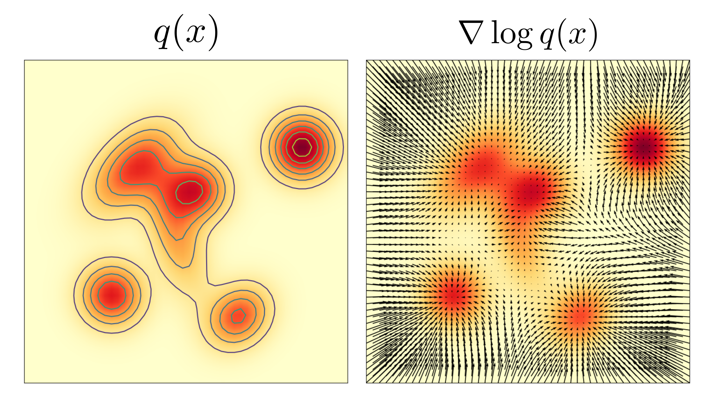
图 8：一般概率分布 q ( x ) q(x) q ( x ) ∇ log q ( x ) \nabla\log q(x) ∇ log q ( x )
迄今，我们研究的核心对象是向量场 u t ( x ) u_{t}(x) u t ( x ) 43 , 44 ] 则采用另一种视角，重点研究得分函数 。因此，本节将用得分函数的语言重新表述已有结论，提供新的视角。设 q ( x ) q(x) q ( x ) q q q 得分函数 定义为 ∇ log q ( x ) \nabla\log q(x) ∇ log q ( x ) q q q x x x ∇ log q ( x ) \nabla\log q(x) ∇ log q ( x ) 图 8 。
回到第 3 节 中的条件概率路径 p t ( x ∣ z ) p_{t}(x|z) p t ( x ∣ z ) p t ( x ) p_{t}(x) p t ( x ) 条件得分函数 ∇ log p t ( x ∣ z ) \nabla\log p_{t}(x|z) ∇ log p t ( x ∣ z ) 边缘得分函数 ∇ log p t ( x ) \nabla\log p_{t}(x) ∇ log p t ( x ) 式 18 ，边缘得分可用条件得分函数 ∇ log p t ( x ∣ z ) \nabla\log p_{t}(x|z) ∇ log p t ( x ∣ z )
∇ log p t ( x ) = ∫ ∇ log p t ( x ∣ z ) p t ( x ∣ z ) p d a t a ( z ) p t ( x ) d z . (38)
\nabla\log p_{t}(x)=\int\nabla\log p_{t}(x|z)\frac{p_{t}(x|z)p_{\rm{data}}(z)}{p_{t}(x)}\mathrm{d}z. \qquad\text{(38)}
∇ log p t ( x ) = ∫ ∇ log p t ( x ∣ z ) p t ( x ) p t ( x ∣ z ) p data ( z ) d z . (38) 因此，条件得分与边缘得分之间的关系，类似于条件向量场与边缘向量场之间的关系 。式 38 可证明如下：
∇ log p t ( x ) = ∇ p t ( x ) p t ( x ) = ∇ ∫ p t ( x ∣ z ) p d a t a ( z ) d z p t ( x ) = ∫ ∇ p t ( x ∣ z ) p d a t a ( z ) d z p t ( x ) = ∫ ∇ log p t ( x ∣ z ) p t ( x ∣ z ) p d a t a ( z ) p t ( x ) d z , (39)
\nabla\log p_{t}(x)=\frac{\nabla p_{t}(x)}{p_{t}(x)}=\frac{\nabla\int p_{t}(x|z)p_{\rm{data}}(z)\mathrm{d}z}{p_{t}(x)}=\frac{\int\nabla p_{t}(x|z)p_{\rm{data}}(z)\mathrm{d}z}{p_{t}(x)}=\int\nabla\log p_{t}(x|z)\frac{p_{t}(x|z)p_{\rm{data}}(z)}{p_{t}(x)}\mathrm{d}z, \qquad\text{(39)}
∇ log p t ( x ) = p t ( x ) ∇ p t ( x ) = p t ( x ) ∇ ∫ p t ( x ∣ z ) p data ( z ) d z = p t ( x ) ∫ ∇ p t ( x ∣ z ) p data ( z ) d z = ∫ ∇ log p t ( x ∣ z ) p t ( x ) p t ( x ∣ z ) p data ( z ) d z , (39) 其中两次结合使用了规则 ∂ y log y = 1 / y \partial_{y}\log y=1/y ∂ y log y = 1/ y
例 15（高斯概率路径的得分函数）
对于高斯路径 p t ( x ∣ z ) = N ( x ; α t z , β t 2 I d ) p_{t}(x|z)=\mathcal{N}(x;\alpha_{t}z,\beta_{t}^{2}I_{d}) p t ( x ∣ z ) = N ( x ; α t z , β t 2 I d ) 式 97 ，可得
∇ log p t ( x ∣ z ) = ∇ log N ( x ; α t z , β t 2 I d ) = − x − α t z β t 2 . (40)
\nabla\log p_{t}(x|z)=\nabla\log\mathcal{N}(x;\alpha_{t}z,\beta_{t}^{2}I_{d})=-\frac{x-\alpha_{t}z}{\beta_{t}^{2}}. \qquad\text{(40)}
∇ log p t ( x ∣ z ) = ∇ log N ( x ; α t z , β t 2 I d ) = − β t 2 x − α t z . (40) 高斯概率路径的得分函数是 x x x u t ( x ∣ z ) u_{t}(x|z) u t ( x ∣ z ) 式 20 。因此，两者可以相互转换，下面的命题说明了这一点。
命题 1（高斯概率路径的转换公式）
对于高斯概率路径 p t ( x ∣ z ) = N ( α t z , β t 2 I d ) p_{t}(x|z)=\mathcal{N}(\alpha_{t}z,\beta_{t}^{2}I_{d}) p t ( x ∣ z ) = N ( α t z , β t 2 I d )
u t target ( x ∣ z ) = a t ∇ log p t ( x ∣ z ) + b t x , a t = ( β t 2 α ˙ t α t − β ˙ t β t ) , b t = α ˙ t α t (41) u t target ( x ) = a t ∇ log p t ( x ) + b t x . (42)
\begin{aligned}
u^{\text{target}}_{t}(x|z)= & a_{t}\nabla\log p_{t}(x|z)+b_{t}x,\quad a_{t}=\left(\beta_{t}^{2}\frac{\dot{\alpha}_{t}}{\alpha_{t}}-\dot{\beta}_{t}\beta_{t}\right),\quad b_{t}=\frac{\dot{\alpha}_{t}}{\alpha_{t}} \qquad\text{(41)} \\
u^{\text{target}}_{t}(x)= & a_{t}\nabla\log p_{t}(x)+b_{t}x. \qquad\text{(42)}
\end{aligned}
u t target ( x ∣ z ) = u t target ( x ) = a t ∇ log p t ( x ∣ z ) + b t x , a t = ( β t 2 α t α ˙ t − β ˙ t β t ) , b t = α t α ˙ t (41) a t ∇ log p t ( x ) + b t x . (42) 特别地，条件向量场可以由条件得分恢复，边缘向量场可以由边缘得分恢复，反之亦然。
证明。
对于条件向量场和条件得分，可推导如下：
u t target ( x ∣ z ) = ( α ˙ t − β ˙ t β t α t ) z + β ˙ t β t x = ( i ) ( β t 2 α ˙ t α t − β ˙ t β t ) ( α t z − x β t 2 ) + α ˙ t α t x = ( β t 2 α ˙ t α t − β ˙ t β t ) ∇ log p t ( x ∣ z ) + α ˙ t α t x
\begin{aligned}
u^{\text{target}}_{t}(x|z)= & \left(\dot{\alpha}_{t}-\frac{\dot{\beta}_{t}}{\beta_{t}}\alpha_{t}\right)z+\frac{\dot{\beta}_{t}}{\beta_{t}}x\overset{(i)}{=}\left(\beta_{t}^{2}\frac{\dot{\alpha}_{t}}{\alpha_{t}}-\dot{\beta}_{t}\beta_{t}\right)\left(\frac{\alpha_{t}z-x}{\beta_{t}^{2}}\right)+\frac{\dot{\alpha}_{t}}{\alpha_{t}}x=\left(\beta_{t}^{2}\frac{\dot{\alpha}_{t}}{\alpha_{t}}-\dot{\beta}_{t}\beta_{t}\right)\nabla\log p_{t}(x|z)+\frac{\dot{\alpha}_{t}}{\alpha_{t}}x
\end{aligned}
u t target ( x ∣ z ) = ( α ˙ t − β t β ˙ t α t ) z + β t β ˙ t x = ( i ) ( β t 2 α t α ˙ t − β ˙ t β t ) ( β t 2 α t z − x ) + α t α ˙ t x = ( β t 2 α t α ˙ t − β ˙ t β t ) ∇ log p t ( x ∣ z ) + α t α ˙ t x 其中步骤 ( i ) (i) ( i )
u target ( x ) = ∫ u t target ( x ∣ z ) p t ( x ∣ z ) p d a t a ( z ) p t ( x ) d z = ∫ [ a t ∇ log p t ( x ∣ z ) + b t x ] p t ( x ∣ z ) p d a t a ( z ) p t ( x ) d z = ( i ) a t ∇ log p t ( x ) + b t x
\begin{aligned}
u^{\text{target}}(x)=\int u^{\text{target}}_{t}(x|z)\frac{p_{t}(x|z)p_{\rm{data}}(z)}{p_{t}(x)}\mathrm{d}z= & \int\left[a_{t}\nabla\log p_{t}(x|z)+b_{t}x\right]\frac{p_{t}(x|z)p_{\rm{data}}(z)}{p_{t}(x)}\mathrm{d}z \\
\overset{(i)}{=} & a_{t}\nabla\log p_{t}(x)+b_{t}x
\end{aligned}
u target ( x ) = ∫ u t target ( x ∣ z ) p t ( x ) p t ( x ∣ z ) p data ( z ) d z = = ( i ) ∫ [ a t ∇ log p t ( x ∣ z ) + b t x ] p t ( x ) p t ( x ∣ z ) p data ( z ) d z a t ∇ log p t ( x ) + b t x 其中步骤 ( i ) (i) ( i ) 式 38 ，以及后验密度的积分为 1 1 1
命题 1 的结论很有意义：一旦学会了 u t target u^{\text{target}}_{t} u t target ∇ log p t ( x ) \nabla\log p_{t}(x) ∇ log p t ( x ) ∇ log p t ( x ) \nabla\log p_{t}(x) ∇ log p t ( x ) 第 4.3 节 讨论这一点。
注记 16（得分的重参数化）
式 41 中高斯概率路径的重参数化公式之所以成立，是因为两侧的条件向量场与条件得分都是 x x x z z z E z ∣ x [ z ] \mathbb{E}_{z|x}\left[z\right] E z ∣ x [ z ] E z ∣ x [ z ] \mathbb{E}_{z|x}\left[z\right] E z ∣ x [ z ] 条件去噪器与边缘去噪器 如下：
D t ( x ∣ z ) = z , D t ( x ) = ∫ z p t ( x ∣ z ) p d a t a ( z ) p t ( x ) d z = ( i ) 1 α ˙ t β t − α t β ˙ t ( β t u t target ( x t ) − β ˙ t x t ) . (43)
D_{t}(x|z)=z,\quad D_{t}(x)=\int z\,\frac{p_{t}(x|z)p_{\rm{data}}(z)}{p_{t}(x)}\mathrm{d}z\overset{(i)}{=}\frac{1}{\dot{\alpha}_{t}\beta_{t}-\alpha_{t}\dot{\beta}_{t}}(\beta_{t}u^{\text{target}}_{t}(x_{t})-\dot{\beta}_{t}x_{t}). \qquad\text{(43)}
D t ( x ∣ z ) = z , D t ( x ) = ∫ z p t ( x ) p t ( x ∣ z ) p data ( z ) d z = ( i ) α ˙ t β t − α t β ˙ t 1 ( β t u t target ( x t ) − β ˙ t x t ) . (43) 其中 ( i ) (i) ( i ) 命题 1 类似的推导得到。去噪器的含义十分直观：它是在给定含噪数据 x x x z z z D t D_{t} D t u t target u^{\text{target}}_{t} u t target 去噪扩散模型 。
4.2 使用 SDE 采样
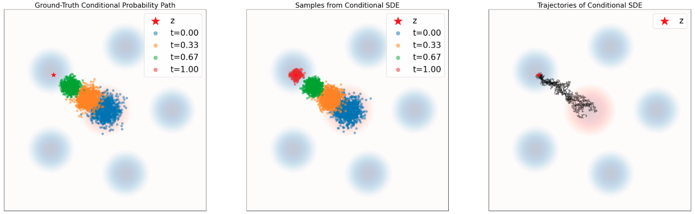
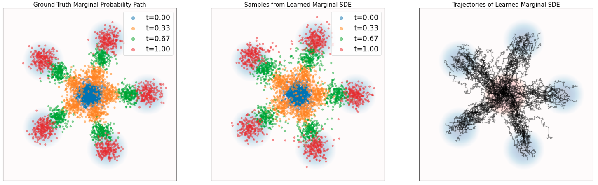
图 9：定理 17 的图示：用 SDE 模拟概率路径。这与图 6 的绘图相同，只是改用式 44 进行 SDE 采样。蓝色背景表示数据分布 p d a t a p_{\rm{data}} p data p i n i t p_{\rm{init}} p init p i n i t p_{\rm{init}} p init δ z \delta_{z} δ z p d a t a p_{\rm{data}} p data
目前，我们已说明如何通过边缘向量场 u t target u^{\text{target}}_{t} u t target p t p_{t} p t X t X_{t} X t
定理 17（SDE 扩展技巧）
按前文定义条件向量场 u t target ( x ∣ z ) u^{\text{target}}_{t}(x|z) u t target ( x ∣ z ) u t target ( x ) u^{\text{target}}_{t}(x) u t target ( x ) σ t ≥ 0 \sigma_{t}\geq 0 σ t ≥ 0
X 0 ∼ p i n i t , d X t = u t target ( X t ) d t + σ t 2 2 ∇ log p t ( X t ) d t + σ t d W t (44) = [ u t target ( X t ) + σ t 2 2 ∇ log p t ( X t ) ] d t + σ t d W t ⇒ X t ∼ p t ( 0 ≤ t ≤ 1 ) . (45)
\begin{aligned}
X_{0} & \sim p_{\rm{init}},\qquad & \mathrm{d}X_{t} & ={\color{#4169E1}u^{\text{target}}_{t}(X_{t})\mathrm{d}t}+{\color{#228B22}\frac{\sigma_{t}^{2}}{2}\nabla\log p_{t}(X_{t})\mathrm{d}t+\sigma_{t}\mathrm{d}W_{t}} \qquad\text{(44)} \\
=\Big[{\color{#4169E1}u^{\text{target}}_{t}(X_{t})}+{\color{#228B22}\frac{\sigma_{t}^{2}}{2}\nabla\log p_{t}(X_{t})}\Big]\mathrm{d}t+{\color{#228B22}\sigma_{t}}\mathrm{d}W_{t} \\
\Rightarrow\quad X_{t} & \sim p_{t}\quad(0\leq t\leq 1). \qquad\text{(45)}
\end{aligned}
X 0 = [ u t target ( X t ) + 2 σ t 2 ∇ l o g p t ( X t ) ] d t + σ t d W t ⇒ X t ∼ p init , ∼ p t ( 0 ≤ t ≤ 1 ) . (45) d X t = u t target ( X t ) d t + 2 σ t 2 ∇ l o g p t ( X t ) d t + σ t d W t (44) 特别地，该 SDE 满足 X 1 ∼ p d a t a X_{1}\sim p_{\rm{data}} X 1 ∼ p data Langevin 动力学 密切相关，可以理解为：在保持边缘分布 p t p_{t} p t 注记 20 将简要介绍 Langevin 动力学。
图 9 展示了定理 17 描述的动力学。可以看到，轨迹变得曲折，体现了 SDE 演化的随机性；但根据定理 17 ，边缘分布 p t p_{t} p t σ t ≥ 0 \sigma_{t}\geq 0 σ t ≥ 0 定理 17 对任意 σ t \sigma_{t} σ t σ t ≫ 0 \sigma_{t}\gg 0 σ t ≫ 0 算法 2 就需要小到难以承受的步长。因此，对于固定的已训练模型，实际存在一个可通过实验确定的最优 σ t ≥ 0 \sigma_{t}\geq 0 σ t ≥ 0 23 , 1 , 28 ]。
对于高斯概率路径，只要学会边缘向量场，就能直接得到得分函数，无需额外训练。
例 18（高斯情形的 SDE 扩展技巧）
根据命题 1 ，对于高斯概率路径，可以仅用得分函数表示定理 17 中的 SDE：
X 0 ∼ p i n i t , d X t = [ ( a t + σ t 2 2 ) ∇ log p t ( X t ) + b t X t ] d t + σ t d W t (46) ⇒ X t ∼ p t ( 0 ≤ t ≤ 1 ) (47)
\begin{aligned}
X_{0}\sim & \,p_{\rm{init}},\quad\mathrm{d}X_{t}=\left[\left(a_{t}+\frac{\sigma_{t}^{2}}{2}\right)\nabla\log p_{t}(X_{t})+b_{t}X_{t}\right]\mathrm{d}t+\sigma_{t}\mathrm{d}W_{t} \qquad\text{(46)} \\
\Rightarrow X_{t}\sim & \,p_{t}\quad(0\leq t\leq 1) \qquad\text{(47)}
\end{aligned}
X 0 ∼ ⇒ X t ∼ p init , d X t = [ ( a t + 2 σ t 2 ) ∇ log p t ( X t ) + b t X t ] d t + σ t d W t (46) p t ( 0 ≤ t ≤ 1 ) (47) 其中 a t , b t a_{t},b_{t} a t , b t 命题 1 。
本节余下部分将利用 Fokker–Planck 方程 证明定理 17 。这一方程将 ODE 的连续性方程推广到了 SDE。首先，对拉普拉斯算子 Δ \Delta Δ
Δ w t ( x ) = ∑ i = 1 d ∂ 2 ∂ x i 2 w t ( x ) = d i v ( ∇ w t ) ( x ) , (48)
\begin{aligned}
\Delta w_{t}(x)= & \sum\limits_{i=1}^{d}\frac{\partial^{2}}{\partial x_{i}^{2}}w_{t}(x)=\mathrm{div}(\nabla w_{t})(x), \qquad\text{(48)}
\end{aligned}
Δ w t ( x ) = i = 1 ∑ d ∂ x i 2 ∂ 2 w t ( x ) = div ( ∇ w t ) ( x ) , (48) 其中 w t : R d → R w_{t}:\mathbb{R}^{d}\to\mathbb{R} w t : R d → R
定理 19（Fokker–Planck 方程）
设 p t p_{t} p t
X 0 ∼ p i n i t , d X t = u t ( X t ) d t + σ t d W t .
X_{0}\sim p_{\rm{init}},\quad\mathrm{d}X_{t}=u_{t}(X_{t})\mathrm{d}t+\sigma_{t}\mathrm{d}W_{t}.
X 0 ∼ p init , d X t = u t ( X t ) d t + σ t d W t . 对所有 0 ≤ t ≤ 1 0\leq t\leq 1 0 ≤ t ≤ 1 X t X_{t} X t p t p_{t} p t Fokker–Planck 方程 成立：
∂ t p t ( x ) = − d i v ( p t u t ) ( x ) + σ t 2 2 Δ p t ( x ) ，对所有 x ∈ R d , 0 ≤ t ≤ 1 , (49)
\partial_{t}p_{t}(x)=-\mathrm{div}(p_{t}u_{t})(x)+\frac{\sigma_{t}^{2}}{2}\Delta p_{t}(x)\quad\text{，对所有 }x\in\mathbb{R}^{d},0\leq t\leq 1, \qquad\text{(49)}
∂ t p t ( x ) = − div ( p t u t ) ( x ) + 2 σ t 2 Δ p t ( x ) ，对所有 x ∈ R d , 0 ≤ t ≤ 1 , (49) Fokker–Planck 方程的完整证明见附录 B 。当 σ t = 0 \sigma_{t}=0 σ t = 0 定理 11 的结论。额外的拉普拉斯项 Δ p t \Delta p_{t} Δ p t 定理 17 。
定理 17 的证明。
根据定理 19 ，只需证明式 44 定义的 SDE 对 p t p_{t} p t
∂ t p t ( x ) = ( i ) − d i v ( p t u t target ) ( x ) = ( i i ) − d i v ( p t u t target ) ( x ) − σ t 2 2 Δ p t ( x ) + σ t 2 2 Δ p t ( x ) = ( i i i ) − d i v ( p t u t target ) ( x ) − d i v ( σ t 2 2 ∇ p t ) ( x ) + σ t 2 2 Δ p t ( x ) = ( i v ) − d i v ( p t u t target ) ( x ) − d i v ( p t [ σ t 2 2 ∇ log p t ] ) ( x ) + σ t 2 2 Δ p t ( x ) = ( v ) − d i v ( p t [ u t target + σ t 2 2 ∇ log p t ] ) ( x ) + σ t 2 2 Δ p t ( x ) ,
\begin{aligned}
\partial_{t}p_{t}(x)\overset{(i)}{=} & -\mathrm{div}(p_{t}u^{\text{target}}_{t})(x) \\
\overset{(ii)}{=} & -\mathrm{div}(p_{t}u^{\text{target}}_{t})(x)-\frac{\sigma_{t}^{2}}{2}\Delta p_{t}(x)+\frac{\sigma_{t}^{2}}{2}\Delta p_{t}(x) \\
\overset{(iii)}{=} & -\mathrm{div}(p_{t}u^{\text{target}}_{t})(x)-\mathrm{div}(\frac{\sigma_{t}^{2}}{2}\nabla p_{t})(x)+\frac{\sigma_{t}^{2}}{2}\Delta p_{t}(x) \\
\overset{(iv)}{=} & -\mathrm{div}(p_{t}u^{\text{target}}_{t})(x)-\mathrm{div}(p_{t}\left[\frac{\sigma_{t}^{2}}{2}\nabla\log p_{t}\right])(x)+\frac{\sigma_{t}^{2}}{2}\Delta p_{t}(x) \\
\overset{(v)}{=} & -\mathrm{div}\left(p_{t}\left[u^{\text{target}}_{t}+\frac{\sigma_{t}^{2}}{2}\nabla\log p_{t}\right]\right)(x)+\frac{\sigma_{t}^{2}}{2}\Delta p_{t}(x),
\end{aligned}
∂ t p t ( x ) = ( i ) = ( ii ) = ( iii ) = ( i v ) = ( v ) − div ( p t u t target ) ( x ) − div ( p t u t target ) ( x ) − 2 σ t 2 Δ p t ( x ) + 2 σ t 2 Δ p t ( x ) − div ( p t u t target ) ( x ) − div ( 2 σ t 2 ∇ p t ) ( x ) + 2 σ t 2 Δ p t ( x ) − div ( p t u t target ) ( x ) − div ( p t [ 2 σ t 2 ∇ log p t ] ) ( x ) + 2 σ t 2 Δ p t ( x ) − div ( p t [ u t target + 2 σ t 2 ∇ log p t ] ) ( x ) + 2 σ t 2 Δ p t ( x ) , 其中，步骤 ( i ) (i) ( i ) 定理 11 ；步骤 ( i i ) (ii) ( ii ) ( i i i ) (iii) ( iii ) 式 48 ）；步骤 ( i v ) (iv) ( i v ) ∇ log p t = ∇ p t p t \nabla\log p_{t}=\frac{\nabla p_{t}}{p_{t}} ∇ log p t = p t ∇ p t ( v ) (v) ( v ) 式 44 定义的 SDE 对 p t p_{t} p t 定理 19 ，可推出在 0 ≤ t ≤ 1 0\leq t\leq 1 0 ≤ t ≤ 1 X t ∼ p t X_{t}\sim p_{t} X t ∼ p t
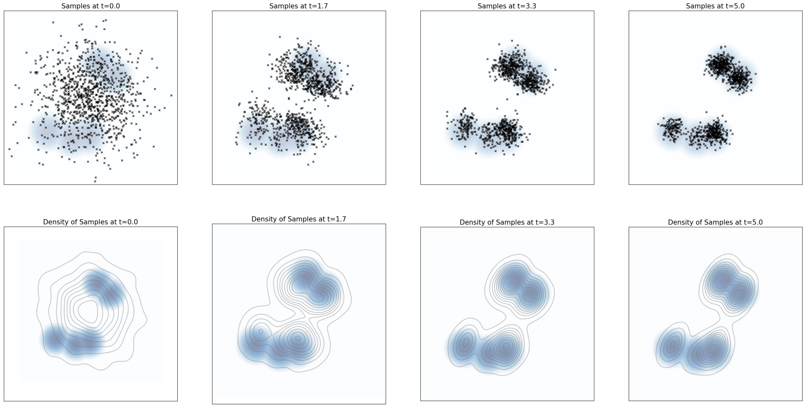
图 10：上排为按式 50 的 Langevin 动力学演化的粒子，其中 p ( x ) p(x) p ( x ) p p p
注记 20（选读：Langevin 动力学）
上述构造有一个著名特例：概率路径不随时间变化，即对于固定分布 p p p p t = p p_{t}=p p t = p u t target = 0 u^{\text{target}}_{t}=0 u t target = 0
d X t = σ t 2 2 ∇ log p ( X t ) d t + σ t d W t , (50)
\mathrm{d}X_{t}=\frac{\sigma_{t}^{2}}{2}\nabla\log p(X_{t})\mathrm{d}t+\sigma_{t}dW_{t}, \qquad\text{(50)}
d X t = 2 σ t 2 ∇ log p ( X t ) d t + σ t d W t , (50) 这通常称为 Langevin 动力学 。由于 p t p_{t} p t ∂ t p t ( x ) = 0 \partial_{t}p_{t}(x)=0 ∂ t p t ( x ) = 0 定理 17 ，这些动力学对静态路径 p t = p p_{t}=p p t = p 定理 17 。因此，p p p
X 0 ∼ p ⇒ X t ∼ p ( t ≥ 0 ) .
X_{0}\sim p\quad\Rightarrow\quad X_{t}\sim p\quad(t\geq 0).
X 0 ∼ p ⇒ X t ∼ p ( t ≥ 0 ) . 与许多马尔可夫过程一样，这种动力学在相当一般的条件下会收敛到平稳分布 p p p X 0 ∼ p ′ ≠ p X_{0}\sim p^{\prime}\neq p X 0 ∼ p ′ = p X t ∼ p t ′ X_{t}\sim p_{t}^{\prime} X t ∼ p t ′ p t → p p_{t}\to p p t → p 分子动力学 模拟，以及贝叶斯统计和自然科学中许多马尔可夫链蒙特卡洛（MCMC）方法的基础。特别地，当 p p p
注记 21（选读：GLASS Flows——通过 ODE 实现随机演化）
与 ODE 相比，SDE 采样的突出特点是演化具有随机性，即初始点 X 0 X_{0} X 0 t > 0 t>0 t > 0 X t X_{t} X t 20 ]，纯粹通过 ODE 也能得到相同的随机转移。这样既可以利用 SDE 的随机性，例如结合搜索算法，又能保持 ODE 的效率。
4.3 得分匹配
还需说明如何学习边缘得分函数 ∇ log p t ( x ) \nabla\log p_{t}(x) ∇ log p t ( x ) 命题 1 ，直接对 u t target ( x ) u^{\text{target}}_{t}(x) u t target ( x ) ∇ log p t \nabla\log p_{t} ∇ log p t 得分网络 的神经网络 s t θ : R d × [ 0 , 1 ] → R d s_{t}^{\theta}:\mathbb{R}^{d}\times[0,1]\to\mathbb{R}^{d} s t θ : R d × [ 0 , 1 ] → R d 得分匹配损失 和去噪得分匹配损失 ：
L SM ( θ ) = E t ∼ Unif , z ∼ p d a t a , x ∼ p t ( ⋅ ∣ z ) [ ∥ s t θ ( x ) − ∇ log p t ( x ) ∥ 2 ] ▶ 得分匹配损失 L CSM ( θ ) = E t ∼ Unif , z ∼ p d a t a , x ∼ p t ( ⋅ ∣ z ) [ ∥ s t θ ( x ) − ∇ log p t ( x ∣ z ) ∥ 2 ] ▶ 条件得分匹配损失
\begin{aligned}
\mathcal{L}_{\text{SM}}(\theta) & =\mathbb{E}_{t\sim\text{Unif},\,z\sim p_{\rm{data}},\,x\sim p_{t}(\cdot|z)}\left[\left\|s_{t}^{\theta}(x)-\nabla\log p_{t}(x)\right\|^{2}\right] & \blacktriangleright\,\,\text{得分匹配损失} \\
\mathcal{L}_{\text{CSM}}(\theta) & =\mathbb{E}_{t\sim\text{Unif},\,z\sim p_{\rm{data}},\,x\sim p_{t}(\cdot|z)}\left[\left\|s_{t}^{\theta}(x)-\nabla\log p_{t}(x|z)\right\|^{2}\right] & \blacktriangleright\,\,\text{条件得分匹配损失}
\end{aligned}
L SM ( θ ) L CSM ( θ ) = E t ∼ Unif , z ∼ p data , x ∼ p t ( ⋅ ∣ z ) [ s t θ ( x ) − ∇ log p t ( x ) 2 ] = E t ∼ Unif , z ∼ p data , x ∼ p t ( ⋅ ∣ z ) [ s t θ ( x ) − ∇ log p t ( x ∣ z ) 2 ] ▶ 得分匹配损失 ▶ 条件得分匹配损失 两者的区别仍在于使用边缘得分 ∇ log p t ( x ) \nabla\log p_{t}(x) ∇ log p t ( x ) ∇ log p t ( x ∣ z ) \nabla\log p_{t}(x|z) ∇ log p t ( x ∣ z ) ∇ log p t ( x ) \nabla\log p_{t}(x) ∇ log p t ( x )
定理 22
得分匹配损失与去噪得分匹配损失仅相差一个常数：
L SM ( θ ) = L CSM ( θ ) + C ,
\mathcal{L}_{\text{SM}}(\theta)=\mathcal{L}_{\text{CSM}}(\theta)+C,
L SM ( θ ) = L CSM ( θ ) + C , 其中 C C C θ \theta θ
∇ θ L SM ( θ ) = ∇ θ L CSM ( θ ) .
\nabla_{\theta}\mathcal{L}_{\text{SM}}(\theta)=\nabla_{\theta}\mathcal{L}_{\text{CSM}}(\theta).
∇ θ L SM ( θ ) = ∇ θ L CSM ( θ ) . 特别地，对于最小化解 θ ∗ \theta^{*} θ ∗ s t θ ∗ = ∇ log p t s_{t}^{\theta^{*}}=\nabla\log p_{t} s t θ ∗ = ∇ log p t
证明。
∇ log p t \nabla\log p_{t} ∇ log p t 式 38 ）与 u t target u^{\text{target}}_{t} u t target 式 18 ）具有相同形式。因此，只需将定理 12 证明中的 u t target u^{\text{target}}_{t} u t target ∇ log p t \nabla\log p_{t} ∇ log p t
例 23（去噪扩散模型：高斯概率路径上的得分匹配）
将去噪得分匹配损失具体化到 p t ( x ∣ z ) = N ( α t z , β t 2 I d ) p_{t}(x|z)=\mathcal{N}(\alpha_{t}z,\beta_{t}^{2}I_{d}) p t ( x ∣ z ) = N ( α t z , β t 2 I d ) 式 40 ，条件得分 ∇ log p t ( x ∣ z ) \nabla\log p_{t}(x|z) ∇ log p t ( x ∣ z )
∇ log p t ( x ∣ z ) = − x − α t z β t 2 . (51)
\nabla\log p_{t}(x|z)=-\frac{x-\alpha_{t}z}{\beta_{t}^{2}}. \qquad\text{(51)}
∇ log p t ( x ∣ z ) = − β t 2 x − α t z . (51) 代入后，条件得分匹配损失变为：
L CSM ( θ ) = E t ∼ Unif , z ∼ p d a t a , x ∼ p t ( ⋅ ∣ z ) [ ∥ s t θ ( x ) + x − α t z β t 2 ∥ 2 ] = ( i ) E t ∼ Unif , z ∼ p d a t a , ϵ ∼ N ( 0 , I d ) [ ∥ s t θ ( α t z + β t ϵ ) + ϵ β t ∥ 2 ] = E t ∼ Unif , z ∼ p d a t a , ϵ ∼ N ( 0 , I d ) [ 1 β t 2 ∥ β t s t θ ( α t z + β t ϵ ) + ϵ ∥ 2 ]
\begin{aligned}
\mathcal{L}_{\text{CSM}}(\theta) & =\mathbb{E}_{t\sim\text{Unif},\,z\sim p_{\rm{data}},\,x\sim p_{t}(\cdot|z)}\left[\left\|s_{t}^{\theta}(x)+\frac{x-\alpha_{t}z}{\beta_{t}^{2}}\right\|^{2}\right] \\
\overset{(i)}{=}\mathbb{E}_{t\sim\text{Unif},\,z\sim p_{\rm{data}},\,\epsilon\sim\mathcal{N}(0,I_{d})}\left[\left\|s_{t}^{\theta}(\alpha_{t}z+\beta_{t}\epsilon)+\frac{\epsilon}{\beta_{t}}\right\|^{2}\right] \\
=\mathbb{E}_{t\sim\text{Unif},\,z\sim p_{\rm{data}},\,\epsilon\sim\mathcal{N}(0,I_{d})}\left[\frac{1}{\beta_{t}^{2}}\left\|\beta_{t}s_{t}^{\theta}(\alpha_{t}z+\beta_{t}\epsilon)+\epsilon\right\|^{2}\right]
\end{aligned}
L CSM ( θ ) = ( i ) E t ∼ Unif , z ∼ p data , ϵ ∼ N ( 0 , I d ) [ s t θ ( α t z + β t ϵ ) + β t ϵ 2 ] = E t ∼ Unif , z ∼ p data , ϵ ∼ N ( 0 , I d ) [ β t 2 1 β t s t θ ( α t z + β t ϵ ) + ϵ 2 ] = E t ∼ Unif , z ∼ p data , x ∼ p t ( ⋅ ∣ z ) [ s t θ ( x ) + β t 2 x − α t z 2 ] 其中步骤 ( i ) (i) ( i ) 式 28 ，并将 x x x α t z + β t ϵ \alpha_{t}z+\beta_{t}\epsilon α t z + β t ϵ s t θ s_{t}^{\theta} s t θ z z z 去噪得分匹配 。人们很快发现，当 β t ≈ 0 \beta_{t}\approx 0 β t ≈ 0 17 ]，研究者提出去掉损失中的常数 1 β t 2 \frac{1}{\beta_{t}^{2}} β t 2 1 s t θ s_{t}^{\theta} s t θ 噪声预测网络 ϵ t θ : R d × [ 0 , 1 ] → R d \epsilon_{t}^{\theta}:\mathbb{R}^{d}\times[0,1]\to\mathbb{R}^{d} ϵ t θ : R d × [ 0 , 1 ] → R d
− β t s t θ ( x ) = ϵ t θ ( x ) ⇒ L DDPM ( θ ) = E t ∼ Unif , z ∼ p d a t a , ϵ ∼ N ( 0 , I d ) [ ∥ ϵ t θ ( α t z + β t ϵ ) − ϵ ∥ 2 ]
\begin{aligned}
-\beta_{t}s_{t}^{\theta}(x)=\epsilon_{t}^{\theta}(x)\quad\Rightarrow\quad\mathcal{L}_{\text{DDPM}}(\theta)= & \mathbb{E}_{t\sim\text{Unif},z\sim p_{\rm{data}},\epsilon\sim\mathcal{N}(0,I_{d})}\left[\|\epsilon_{t}^{\theta}(\alpha_{t}z+\beta_{t}\epsilon)-\epsilon\|^{2}\right]
\end{aligned}
− β t s t θ ( x ) = ϵ t θ ( x ) ⇒ L DDPM ( θ ) = E t ∼ Unif , z ∼ p data , ϵ ∼ N ( 0 , I d ) [ ∥ ϵ t θ ( α t z + β t ϵ ) − ϵ ∥ 2 ] 与前文一样，网络 ϵ t θ \epsilon_{t}^{\theta} ϵ t θ z z z 算法 4 总结了训练流程。
算法 4：高斯概率路径上的得分匹配训练流程
步骤
操作
0
样本数据集 z ∼ p d a t a z\sim p_{\rm{data}} z ∼ p data s t θ s_{t}^{\theta} s t θ ϵ t θ \epsilon_{t}^{\theta} ϵ t θ
1
对于 每个数据小批量，执行
2
从数据集中采样一个数据样本 z z z
3
采样随机时刻 t ∼ Unif [ 0 , 1 ] t\sim\text{Unif}_{[0,1]} t ∼ Unif [ 0 , 1 ]
4
采样噪声 ϵ ∼ N ( 0 , I d ) \epsilon\sim\mathcal{N}(0,I_{d}) ϵ ∼ N ( 0 , I d )
5
令 x t = α t z + β t ϵ x_{t}=\alpha_{t}z+\beta_{t}\epsilon x t = α t z + β t ϵ x t ∼ p t ( ⋅ ∣ z ) x_{t}\sim p_{t}(\cdot\vert z) x t ∼ p t ( ⋅ ∣ z )
6
计算损失 下方公式 1 。
7
对 L ( θ ) \mathcal{L}(\theta) L ( θ ) θ \theta θ
8
结束循环
算法 4，公式 1。
L ( θ ) = ∥ s t θ ( x t ) + ϵ β t ∥ 2 ( 一般情形： = ∥ s t θ ( x t ) − ∇ log p t ( x t ∣ z ) ∥ 2 ) 或者： L ( θ ) = ∥ ϵ t θ ( x t ) − ϵ ∥ 2
\begin{aligned}
\mathcal{L}(\theta)= & \|s_{t}^{\theta}(x_{t})+\frac{\epsilon}{\beta_{t}}\|^{2}\quad & (\text{一般情形：}=\|s_{t}^{\theta}(x_{t})-\nabla\log p_{t}(x_{t}|z)\|^{2}) \\
\text{或者：}\mathcal{L}(\theta)= & \|\epsilon_{t}^{\theta}(x_{t})-\epsilon\|^{2}
\end{aligned}
L ( θ ) = 或者： L ( θ ) = ∥ s t θ ( x t ) + β t ϵ ∥ 2 ∥ ϵ t θ ( x t ) − ϵ ∥ 2 ( 一般情形： = ∥ s t θ ( x t ) − ∇ log p t ( x t ∣ z ) ∥ 2 ) 本节结论总结如下：
小结 24（得分函数、得分匹配与随机采样）
设 p t ( x ∣ z ) , p t ( x ) p_{t}(x|z),p_{t}(x) p t ( x ∣ z ) , p t ( x ) 条件得分函数 为 ∇ log p t ( x ∣ z ) \nabla\log p_{t}(x|z) ∇ log p t ( x ∣ z ) 边缘得分函数 为 ∇ log p t ( x ) \nabla\log p_{t}(x) ∇ log p t ( x ) σ t ≥ 0 \sigma_{t}\geq 0 σ t ≥ 0
X 0 ∼ p i n i t , d X t = [ u t target ( X t ) + σ t 2 2 ∇ log p t ( X t ) ] d t + σ t d W t (52) ⇒ X t ∼ p t ( 0 ≤ t ≤ 1 ) , (53)
\begin{aligned}
X_{0}\sim & p_{\rm{init}},\quad\mathrm{d}X_{t}=\left[u^{\text{target}}_{t}(X_{t})+\frac{\sigma_{t}^{2}}{2}\nabla\log p_{t}(X_{t})\right]\mathrm{d}t+\sigma_{t}\mathrm{d}W_{t} \qquad\text{(52)} \\
\Rightarrow X_{t}\sim & p_{t}\quad(0\leq t\leq 1), \qquad\text{(53)}
\end{aligned}
X 0 ∼ ⇒ X t ∼ p init , d X t = [ u t target ( X t ) + 2 σ t 2 ∇ log p t ( X t ) ] d t + σ t d W t (52) p t ( 0 ≤ t ≤ 1 ) , (53) 其中 u t target ( x ) u^{\text{target}}_{t}(x) u t target ( x ) 式 18 。
得分匹配。
为学习边缘得分函数 ∇ log p t ( x ) \nabla\log p_{t}(x) ∇ log p t ( x ) 得分网络 s t θ s_{t}^{\theta} s t θ 去噪得分匹配 训练：
L CSM ( θ ) = E z ∼ p d a t a , t ∼ Unif , x ∼ p t ( ⋅ ∣ z ) [ ∥ s t θ ( x ) − ∇ log p t ( x ∣ z ) ∥ 2 ] ( 去噪得分匹配损失 ) (54)
\begin{aligned}
\mathcal{L}_{\text{CSM}}(\theta) & =\mathbb{E}_{z\sim p_{\rm{data}},\,t\sim\text{Unif},\,x\sim p_{t}(\cdot|z)}[\|s_{t}^{\theta}(x)-\nabla\log p_{t}(x|z)\|^{2}]\quad & (\text{去噪得分匹配损失}) \qquad\text{(54)}
\end{aligned}
L CSM ( θ ) = E z ∼ p data , t ∼ Unif , x ∼ p t ( ⋅ ∣ z ) [ ∥ s t θ ( x ) − ∇ log p t ( x ∣ z ) ∥ 2 ] ( 去噪得分匹配损失 ) (54) 高斯概率路径。
对于最重要的高斯概率路径 p t ( x ∣ z ) = N ( x ; α t z , β t 2 I d ) p_{t}(x|z)=\mathcal{N}(x;\alpha_{t}z,\beta_{t}^{2}I_{d}) p t ( x ∣ z ) = N ( x ; α t z , β t 2 I d ) s t θ s_{t}^{\theta} s t θ u t θ u_{t}^{\theta} u t θ
u t θ ( x ) = a t s t θ ( x ) + b t x , a t = ( β t 2 α ˙ t α t − β ˙ t β t ) , b t = α ˙ t α t
\begin{aligned}
u_{t}^{\theta}(x)= & a_{t}s_{t}^{\theta}(x)+b_{t}x,\quad a_{t}=\left(\beta_{t}^{2}\frac{\dot{\alpha}_{t}}{\alpha_{t}}-\dot{\beta}_{t}\beta_{t}\right),b_{t}=\frac{\dot{\alpha}_{t}}{\alpha_{t}}
\end{aligned}
u t θ ( x ) = a t s t θ ( x ) + b t x , a t = ( β t 2 α t α ˙ t − β ˙ t β t ) , b t = α t α ˙ t 训练后，可以模拟以下 SDE：
X 0 ∼ p i n i t , d X t = [ ( 1 + σ t 2 2 a t ) u t θ ( X t ) − σ t 2 b t 2 a t X t ] d t + σ t d W t (55) = [ ( a t + σ t 2 2 ) s t θ ( X t ) + b t X t ] d t + σ t d W t (56)
\begin{aligned}
X_{0}\sim p_{\rm{init}},\quad\mathrm{d}X_{t}= & \left[\left(1+\frac{\sigma_{t}^{2}}{2a_{t}}\right)u_{t}^{\theta}(X_{t})-\frac{\sigma_{t}^{2}b_{t}}{2a_{t}}X_{t}\right]\mathrm{d}t+\sigma_{t}\mathrm{d}W_{t} \qquad\text{(55)} \\
= & \left[\left(a_{t}+\frac{\sigma_{t}^{2}}{2}\right)s_{t}^{\theta}(X_{t})+b_{t}X_{t}\right]\mathrm{d}t+\sigma_{t}\mathrm{d}W_{t} \qquad\text{(56)}
\end{aligned}
X 0 ∼ p init , d X t = = [ ( 1 + 2 a t σ t 2 ) u t θ ( X t ) − 2 a t σ t 2 b t X t ] d t + σ t d W t (55) [ ( a t + 2 σ t 2 ) s t θ ( X t ) + b t X t ] d t + σ t d W t (56) 其中扩散系数 σ t ≥ 0 \sigma_{t}\geq 0 σ t ≥ 0 X 1 ∼ p d a t a X_{1}\sim p_{\rm{data}} X 1 ∼ p data σ t ≥ 0 \sigma_{t}\geq 0 σ t ≥ 0
5 引导：如何以提示词为条件
到目前为止，我们考虑的生成模型都是无引导的 ：例如，图像模型只是生成某张图像。数学上，这意味着模型从无条件数据分布 p d a t a ( z ) p_{\rm{data}}(z) p data ( z ) 以某些附加信息为条件 生成对象。换言之，我们希望引导 模型生成特定类型的对象。例如，图像生成模型可以接收文本提示 y y y y y y x x x 第 1 节 所述，这意味着要从 p d a t a ( z ∣ y ) p_{\rm{data}}(z|y) p data ( z ∣ y ) 以 y y y 中采样。本节将讨论这一问题。
注记 25（术语）
前文已使用“条件”一词表示以 z ∼ p d a t a z\sim p_{\rm{data}} z ∼ p data 引导 表示以文本提示等 y y y
5.1 基础引导
首先讨论构造引导生成模型的“标准”方式。简言之：训练和推理时都将提示词 y y y y y y Y \mathcal{Y} Y y y y Y \mathcal{Y} Y y y y Y \mathcal{Y} Y Y \mathcal{Y} Y
定义引导扩散模型 ：它由神经网络参数化的引导向量场 u t θ ( ⋅ ∣ y ) u_{t}^{\theta}(\cdot|y) u t θ ( ⋅ ∣ y ) σ t \sigma_{t} σ t
u θ : R d × Y × [ 0 , 1 ] → R d , ( x , y , t ) ↦ u t θ ( x ∣ y ) σ t : [ 0 , 1 ] → [ 0 , ∞ ) , t ↦ σ t
\begin{aligned}
\,u^{\theta}:\mathbb{R}^{d}\times\mathcal{Y}\times[0,1]\to\mathbb{R}^{d},\,\,(x,y,t)\mapsto u_{t}^{\theta}(x|y) \\
\,\sigma_{t}:[0,1]\to[0,\infty),\,\,t\mapsto\sigma_{t}
\end{aligned}
u θ : R d × Y × [ 0 , 1 ] → R d , ( x , y , t ) ↦ u t θ ( x ∣ y ) σ t : [ 0 , 1 ] → [ 0 , ∞ ) , t ↦ σ t 与小结 7 不同，这里额外使用输入 y ∈ Y y\in\mathcal{Y} y ∈ Y u t θ u_{t}^{\theta} u t θ y ∈ Y y\in\mathcal{Y} y ∈ Y
初始化： X 0 ∼ p i n i t ▶ 用简单分布初始化，例如高斯分布 模拟： d X t = u t θ ( X t ∣ y ) d t + σ t d W t ▶ 模拟 SDE，从 t = 0 到 t = 1 . 目标： X 1 ∼ p d a t a ( ⋅ ∣ y ) ▶ 目标是使 X 1 服从分布 p d a t a ( ⋅ ∣ y ) .
\begin{aligned}
\textbf{初始化：}\quad X_{0} & \sim p_{\rm{init}}\quad & \blacktriangleright\,\,\text{用简单分布初始化，例如高斯分布} \\
\textbf{模拟：}\quad\mathrm{d}X_{t} & =u_{t}^{\theta}(X_{t}|y)\mathrm{d}t+\sigma_{t}\mathrm{d}W_{t}\quad & \blacktriangleright\,\,\text{模拟 SDE，从 }t=0\text{ 到 }t=1\text{.} \\
\textbf{目标：}\quad X_{1} & \sim p_{\rm{data}}(\cdot|y)\quad & \blacktriangleright\,\,\text{目标是使 }X_{1}\text{ 服从分布 }p_{\rm{data}}(\cdot|y)\text{.}
\end{aligned}
初始化： X 0 模拟： d X t 目标： X 1 ∼ p init = u t θ ( X t ∣ y ) d t + σ t d W t ∼ p data ( ⋅ ∣ y ) ▶ 用简单分布初始化，例如高斯分布 ▶ 模拟 SDE ，从 t = 0 到 t = 1 . ▶ 目标是使 X 1 服从分布 p data ( ⋅ ∣ y ) . 当 σ t = 0 \sigma_{t}=0 σ t = 0 引导流模型 。为简洁起见，下面仅讨论流匹配与流模型，但相关结论同样适用于一般情形。
接下来讨论如何训练引导流模型 u t θ ( x ∣ y ) u_{t}^{\theta}(x|y) u t θ ( x ∣ y ) y y y p data ( x ∣ y ) p_{\text{data}}(x|y) p data ( x ∣ y )
E z ∼ p data ( ⋅ ∣ y ) , x ∼ p t ( ⋅ ∣ z ) ∥ u t θ ( x ∣ y ) − u t target ( x ∣ z ) ∥ 2 . (57)
\mathbb{E}_{z\sim p_{\text{data}}(\cdot|y),x\sim p_{t}(\cdot|z)}\lVert u_{t}^{\theta}(x|y)-u^{\text{target}}_{t}(x|z)\rVert^{2}. \qquad\text{(57)}
E z ∼ p data ( ⋅ ∣ y ) , x ∼ p t ( ⋅ ∣ z ) ∥ u t θ ( x ∣ y ) − u t target ( x ∣ z ) ∥ 2 . (57) 标签 y y y p t ( ⋅ ∣ z ) p_{t}(\cdot|z) p t ( ⋅ ∣ z ) u t target ( x ∣ z ) u^{\text{target}}_{t}(x|z) u t target ( x ∣ z ) y y y 引导条件流匹配目标 ：
L CFM guided ( θ ) = E ( z , y ) ∼ p data ( z , y ) , t ∼ Unif [ 0 , 1 ] , x ∼ p t ( ⋅ ∣ z ) ∥ u t θ ( x ∣ y ) − u t target ( x ∣ z ) ∥ 2 . (58)
\mathcal{L}_{\text{CFM}}^{\text{guided}}(\theta)=\mathbb{E}_{(z,y)\sim p_{\text{data}}(z,y),\,t\sim\text{Unif}[0,1],\,x\sim p_{t}(\cdot|z)}\lVert u_{t}^{\theta}(x|y)-u^{\text{target}}_{t}(x|z)\rVert^{2}. \qquad\text{(58)}
L CFM guided ( θ ) = E ( z , y ) ∼ p data ( z , y ) , t ∼ Unif [ 0 , 1 ] , x ∼ p t ( ⋅ ∣ z ) ∥ u t θ ( x ∣ y ) − u t target ( x ∣ z ) ∥ 2 . (58) 式 58 的引导目标与式 26 的无引导目标的主要区别之一，是这里采样 ( z , y ) ∼ p d a t a (z,y)\sim p_{\rm{data}} ( z , y ) ∼ p data z ∼ p d a t a z\sim p_{\rm{data}} z ∼ p data z z z y y y 式 58 时，数据加载器要返回同时包含 z z z y y y 的批量数据。
图 11：以提示词或类别 y = y= y = w = 4 w=4 w = 4 18 ]。
图 12：分类器引导与无分类器引导示意图。分类器引导将引导向量场 u t target ( x ∣ y ) u^{\text{target}}_{t}(x|y) u t target ( x ∣ y ) w > 1 w>1 w > 1 log p t ( y ∣ x ) \log p_{t}(y|x) log p t ( y ∣ x )
5.2 无分类器引导
理论上，基础引导应能准确地从 p d a t a ( ⋅ ∣ y ) p_{\rm{data}}(\cdot|y) p data ( ⋅ ∣ y ) y y y 图 11 。原因可能有多种：模型可能欠拟合，即没有真正学到正确的边缘向量场；数据也可能不完善，例如互联网上的图文配对存在大量错误。因此，要让生成样本更符合提示词，需要人为增强提示变量 y y y 无分类器引导 ，它广泛用于先进扩散模型，下面将予以介绍。
分类器引导。
为简单起见，这里只讨论高斯概率路径。回顾式 15 ，高斯条件概率路径为 p t ( ⋅ ∣ z ) = N ( α t z , β t 2 I d ) p_{t}(\cdot|z)=\mathcal{N}(\alpha_{t}z,\beta_{t}^{2}I_{d}) p t ( ⋅ ∣ z ) = N ( α t z , β t 2 I d ) α t \alpha_{t} α t β t \beta_{t} β t α 0 = β 1 = 0 \alpha_{0}=\beta_{1}=0 α 0 = β 1 = 0 α 1 = β 0 = 1 \alpha_{1}=\beta_{0}=1 α 1 = β 0 = 1 命题 1 ，可以利用引导得分函数 ∇ log p t ( x ∣ y ) \nabla\log p_{t}(x|y) ∇ log p t ( x ∣ y ) u t target ( x ∣ y ) u^{\text{target}}_{t}(x|y) u t target ( x ∣ y )
u t target ( x ∣ y ) = a t ∇ log p t ( x ∣ y ) + b t x , (59)
u^{\text{target}}_{t}(x|y)=a_{t}\nabla\log p_{t}(x|y)+b_{t}x, \qquad\text{(59)}
u t target ( x ∣ y ) = a t ∇ log p t ( x ∣ y ) + b t x , (59) 接下来注意，p t ( x ∣ y ) p_{t}(x|y) p t ( x ∣ y )
p t ( x ∣ y ) = p t ( x ) p t ( y ∣ x ) p t ( y ) (60) ∇ log p t ( x ∣ y ) = ∇ log ( p t ( x ) p t ( y ∣ x ) p t ( y ) ) = ∇ log p t ( x ) + ∇ log p t ( y ∣ x ) , (61)
\begin{aligned}
p_{t}(x|y)= & \frac{p_{t}(x)p_{t}(y|x)}{p_{t}(y)} \qquad\text{(60)} \\
\nabla\log p_{t}(x|y)= & \nabla\log\left(\frac{p_{t}(x)p_{t}(y|x)}{p_{t}(y)}\right)=\nabla\log p_{t}(x)+\nabla\log p_{t}(y|x), \qquad\text{(61)}
\end{aligned}
p t ( x ∣ y ) = ∇ log p t ( x ∣ y ) = p t ( y ) p t ( x ) p t ( y ∣ x ) (60) ∇ log ( p t ( y ) p t ( x ) p t ( y ∣ x ) ) = ∇ log p t ( x ) + ∇ log p t ( y ∣ x ) , (61) 这里用到梯度 ∇ \nabla ∇ x x x ∇ log p t ( y ) = 0 \nabla\log p_{t}(y)=0 ∇ log p t ( y ) = 0
u t target ( x ∣ y ) = b t x + a t ( ∇ log p t ( x ) + ∇ log p t ( y ∣ x ) ) = u t target ( x ) + a t ∇ log p t ( y ∣ x ) .
u^{\text{target}}_{t}(x|y)=b_{t}x+a_{t}(\nabla\log p_{t}(x)+\nabla\log p_{t}(y|x))=u^{\text{target}}_{t}(x)+a_{t}\nabla\log p_{t}(y|x).
u t target ( x ∣ y ) = b t x + a t ( ∇ log p t ( x ) + ∇ log p t ( y ∣ x )) = u t target ( x ) + a t ∇ log p t ( y ∣ x ) . 观察上述等式的形式：引导向量场 u t target ( x ∣ y ) u^{\text{target}}_{t}(x|y) u t target ( x ∣ y ) u t target ( x ) u^{\text{target}}_{t}(x) u t target ( x ) y y y p t ( y ∣ x ) p_{t}(y|x) p t ( y ∣ x ) x x x y y y ∇ log p t ( y ∣ x ) \nabla\log p_{t}(y|x) ∇ log p t ( y ∣ x )
u ~ t ( x ∣ y ) = u t target ( x ) + w a t ∇ log p t ( y ∣ x ) , ( 分类器引导 ) (62)
\begin{aligned}
\tilde{u}_{t}(x|y)=u^{\text{target}}_{t}(x)+wa_{t}\nabla\log p_{t}(y|x),\quad & (\text{分类器引导}) \qquad\text{(62)}
\end{aligned}
u ~ t ( x ∣ y ) = u t target ( x ) + w a t ∇ log p t ( y ∣ x ) , ( 分类器引导 ) (62) 其中 w > 1 w>1 w > 1 引导强度 。如何学习 log p t ( y ∣ x ) \log p_{t}(y|x) log p t ( y ∣ x ) x x x y y y 分类器引导 [11 , 45 ]，见图 12 。分类器引导如今在很大程度上已被无分类器引导取代，故此处不再展开。不过，它为下面的无分类器引导奠定了基础。最后请注意，这是一种启发式方法：当 w ≠ 1 w\neq 1 w = 1 u ~ t ( x ∣ y ) ≠ u t target ( x ∣ y ) \tilde{u}_{t}(x|y)\neq u^{\text{target}}_{t}(x|y) u ~ t ( x ∣ y ) = u t target ( x ∣ y )
无分类器引导。
尽管分类器引导原则上可行，但有若干困难。首先，要在流模型或扩散模型之外再训练一个分类器，这样需要两个网络。其次，若 y y y p t ( y ∣ x ) p_{t}(y|x) p t ( y ∣ x ) ∇ log p t ( y ∣ x ) \nabla\log p_{t}(y|x) ∇ log p t ( y ∣ x ) 无分类器引导 [18 ]。它在理论上能实现与分类器引导等价的效果，却无需单独训练分类器。
为此，再次利用恒等式
∇ log p t ( x ∣ y ) = ∇ log p t ( x ) + ∇ log p t ( y ∣ x )
\nabla\log p_{t}(x|y)=\nabla\log p_{t}(x)+\nabla\log p_{t}(y|x)
∇ log p t ( x ∣ y ) = ∇ log p t ( x ) + ∇ log p t ( y ∣ x ) 可得
u ~ t ( x ∣ y ) = u t target ( x ) + w a t ∇ log p t ( y ∣ x ) = u t target ( x ) + w a t ( ∇ log p t ( x ∣ y ) − ∇ log p t ( x ) ) = u t target ( x ) − ( w b t x + w a t ∇ log p t ( x ) ) + ( w b t x + w a t ∇ log p t ( x ∣ y ) ) = ( 1 − w ) u t target ( x ) + w u t target ( x ∣ y ) .
\begin{aligned}
\tilde{u}_{t}(x|y) & =u^{\text{target}}_{t}(x)+wa_{t}\nabla\log p_{t}(y|x) \\
=u^{\text{target}}_{t}(x)+wa_{t}(\nabla\log p_{t}(x|y)-\nabla\log p_{t}(x)) \\
=u^{\text{target}}_{t}(x)-(wb_{t}x+wa_{t}\nabla\log p_{t}(x))+(wb_{t}x+wa_{t}\nabla\log p_{t}(x|y)) \\
=(1-w)u^{\text{target}}_{t}(x)+wu^{\text{target}}_{t}(x|y).
\end{aligned}
u ~ t ( x ∣ y ) = u t target ( x ) + w a t ( ∇ log p t ( x ∣ y ) − ∇ log p t ( x )) = u t target ( x ) − ( w b t x + w a t ∇ log p t ( x )) + ( w b t x + w a t ∇ log p t ( x ∣ y )) = ( 1 − w ) u t target ( x ) + w u t target ( x ∣ y ) . = u t target ( x ) + w a t ∇ log p t ( y ∣ x ) 因而，经过缩放的引导向量场 u ~ t ( x ∣ y ) \tilde{u}_{t}(x|y) u ~ t ( x ∣ y ) u t target ( x ) u^{\text{target}}_{t}(x) u t target ( x ) u t target ( x ∣ y ) u^{\text{target}}_{t}(x|y) u t target ( x ∣ y ) u t target ( x ) u^{\text{target}}_{t}(x) u t target ( x ) 式 26 ，以及有引导的 u t target ( x ∣ y ) u^{\text{target}}_{t}(x|y) u t target ( x ∣ y ) 式 58 ，然后在推理时组合得到 u ~ t ( x ∣ y ) \tilde{u}_{t}(x|y) u ~ t ( x ∣ y ) ∅ \varnothing ∅ 不提供条件 ，然后令 u t target ( x ) = u t target ( x ∣ ∅ ) u^{\text{target}}_{t}(x)=u^{\text{target}}_{t}(x|\varnothing) u t target ( x ) = u t target ( x ∣ ∅ ) 无分类器引导 （CFG）[18 ]，见图 12 。
注记 26（一般概率路径下的推导）
注意，构造
u ~ t ( x ∣ y ) = ( 1 − w ) u t target ( x ) + w u t target ( x ∣ y ) ,
\tilde{u}_{t}(x|y)=(1-w)u^{\text{target}}_{t}(x)+wu^{\text{target}}_{t}(x|y),
u ~ t ( x ∣ y ) = ( 1 − w ) u t target ( x ) + w u t target ( x ∣ y ) , 同样适用于任意概率路径，而不限于高斯路径。当 w = 1 w=1 w = 1 u ~ t ( x ∣ y ) = u t target ( x ∣ y ) \tilde{u}_{t}(x|y)=u^{\text{target}}_{t}(x|y) u ~ t ( x ∣ y ) = u t target ( x ∣ y ) ∇ log p t ( y ∣ x ) \nabla\log p_{t}(y|x) ∇ log p t ( y ∣ x )
训练与无分类器引导。
现在需要修改式 58 的引导条件流匹配目标，使其涵盖 y = ∅ y=\varnothing y = ∅ ( z , y ) ∼ p d a t a (z,y)\sim p_{\rm{data}} ( z , y ) ∼ p data y = ∅ y=\varnothing y = ∅ y = ∅ y=\varnothing y = ∅ η \eta η y y y ∅ \varnothing ∅ CFG 条件流匹配训练目标 ：
L CFM CFG ( θ ) = E □ ∥ u t θ ( x ∣ y ) − u t target ( x ∣ z ) ∥ 2 (63) □ = ( z , y ) ∼ p data ( z , y ) , t ∼ Unif [ 0 , 1 ] , x ∼ p t ( ⋅ ∣ z ) , 替换 y = ∅ ，概率为 η (64)
\begin{aligned}
\mathcal{L}_{\text{CFM}}^{\text{CFG}}(\theta) & =\,\,\mathbb{E}_{\square}\lVert u_{t}^{\theta}(x|y)-u^{\text{target}}_{t}(x|z)\rVert^{2} \qquad\text{(63)} \\
\square & =(z,y)\sim p_{\text{data}}(z,y),\,t\sim\text{Unif}[0,1],\,x\sim p_{t}(\cdot|z),\text{替换 }y=\varnothing\text{，概率为 }\eta \qquad\text{(64)}
\end{aligned}
L CFM CFG ( θ ) □ = E □ ∥ u t θ ( x ∣ y ) − u t target ( x ∣ z ) ∥ 2 (63) = ( z , y ) ∼ p data ( z , y ) , t ∼ Unif [ 0 , 1 ] , x ∼ p t ( ⋅ ∣ z ) , 替换 y = ∅ ，概率为 η (64) 算法 5：高斯概率路径 p t ( x ∣ z ) = N ( x ; α t z , β t 2 I d ) p_{t}(x|z)=\mathcal{N}(x;\alpha_{t}z,\beta_{t}^{2}I_{d}) p t ( x ∣ z ) = N ( x ; α t z , β t 2 I d )
步骤
操作
0
成对数据集 ( z , y ) ∼ p d a t a (z,y)\sim p_{\rm{data}} ( z , y ) ∼ p data u t θ u_{t}^{\theta} u t θ
1
对于 每个数据小批量，执行
2
从数据集中采样一个样本 ( z , y ) (z,y) ( z , y )
3
采样随机时刻 t ∼ Unif [ 0 , 1 ] t\sim\text{Unif}_{[0,1]} t ∼ Unif [ 0 , 1 ]
4
采样噪声 ϵ ∼ N ( 0 , I d ) \epsilon\sim\mathcal{N}(0,I_{d}) ϵ ∼ N ( 0 , I d )
5
令 x = α t z + β t ϵ x=\alpha_{t}z+\beta_{t}\epsilon x = α t z + β t ϵ
6
以概率 p p p y ← ∅ y\leftarrow\varnothing y ← ∅
7
计算损失 下方公式 1 。
8
对 L ( θ ) \mathcal{L}(\theta) L ( θ ) θ \theta θ
9
结束循环
算法 4，公式 1。
L ( θ ) = ∥ u t θ ( x ∣ y ) − ( α ˙ t z + β ˙ t ϵ ) ∥ 2
\begin{aligned}
\mathcal{L}(\theta)= & \|u_{t}^{\theta}(x|y)-(\dot{\alpha}_{t}z+\dot{\beta}_{t}\epsilon)\|^{2}
\end{aligned}
L ( θ ) = ∥ u t θ ( x ∣ y ) − ( α ˙ t z + β ˙ t ϵ ) ∥ 2 结论总结如下。
小结 27（流模型的无分类器引导）
给定无引导边缘向量场 u t target ( x ∣ ∅ ) u^{\text{target}}_{t}(x|\varnothing) u t target ( x ∣ ∅ ) u t target ( x ∣ y ) u^{\text{target}}_{t}(x|y) u t target ( x ∣ y ) 引导强度 w > 1 w>1 w > 1 无分类器引导向量场 u ~ t ( x ∣ y ) \tilde{u}_{t}(x|y) u ~ t ( x ∣ y )
u ~ t ( x ∣ y ) = ( 1 − w ) u t target ( x ∣ ∅ ) + w u t target ( x ∣ y ) . (65)
\tilde{u}_{t}(x|y)=(1-w)u^{\text{target}}_{t}(x|\varnothing)+wu^{\text{target}}_{t}(x|y). \qquad\text{(65)}
u ~ t ( x ∣ y ) = ( 1 − w ) u t target ( x ∣ ∅ ) + w u t target ( x ∣ y ) . (65) 用同一个神经网络逼近 u t target ( x ∣ ∅ ) u^{\text{target}}_{t}(x|\varnothing) u t target ( x ∣ ∅ ) u t target ( x ∣ y ) u^{\text{target}}_{t}(x|y) u t target ( x ∣ y ) 无分类器引导条件流匹配 （CFG-CFM）目标：
L CFM CFG ( θ ) = E □ ∥ u t θ ( x ∣ y ) − u t target ( x ∣ z ) ∥ 2 (66) □ = ( z , y ) ∼ p data ( z , y ) , t ∼ Unif [ 0 , 1 ] , x ∼ p t ( ⋅ ∣ z ) , 替换 y = ∅ ，概率为 η (67)
\begin{aligned}
\mathcal{L}_{\text{CFM}}^{\text{CFG}}(\theta) & =\,\,\mathbb{E}_{\square}\lVert u_{t}^{\theta}(x|y)-u^{\text{target}}_{t}(x|z)\rVert^{2} \qquad\text{(66)} \\
\square & =(z,y)\sim p_{\text{data}}(z,y),\,t\sim\text{Unif}[0,1],\,x\sim p_{t}(\cdot|z),\text{替换 }y=\varnothing\text{，概率为 }\eta \qquad\text{(67)}
\end{aligned}
L CFM CFG ( θ ) □ = E □ ∥ u t θ ( x ∣ y ) − u t target ( x ∣ z ) ∥ 2 (66) = ( z , y ) ∼ p data ( z , y ) , t ∼ Unif [ 0 , 1 ] , x ∼ p t ( ⋅ ∣ z ) , 替换 y = ∅ ，概率为 η (67) 通俗地说，L CFM CFG \mathcal{L}_{\text{CFM}}^{\text{CFG}} L CFM CFG
( z , y ) ∼ p d a t a ( z , y ) ▶ 采样 ( z , y ) ，从数据分布中采样。 t ∼ Unif [ 0 , 1 ) ▶ 采样 t ，均匀采样于 [ 0 , 1 ) . x ∼ p t ( x ∣ z ) ▶ 采样 x ，从以下条件概率路径中采样： p t ( x ∣ z ) . η , y ← ∅ ▶ 将 y 替换为 ∅ ，概率为 η . L CFM CFG ( θ ) ^ = ∥ u t θ ( x ∣ y ) − u t target ( x ∣ z ) ∥ 2 ▶ 使模型拟合条件向量场。
\begin{aligned}
(z,y) & \sim p_{\rm{data}}(z,y)\quad\quad\quad\quad & \blacktriangleright\quad\text{采样 }(z,y)\text{，从数据分布中采样。} \\
t & \sim\text{Unif}[0,1)\quad\quad\quad\quad & \blacktriangleright\quad\text{采样 }t\text{，均匀采样于 }[0,1)\text{.} \\
x & \sim p_{t}(x|z)\quad\quad\quad\quad & \blacktriangleright\quad\text{采样 }x\text{，从以下条件概率路径中采样：}p_{t}(x|z)\text{.} \\
\,\eta,\,y\leftarrow\varnothing\quad\quad\quad\quad & \blacktriangleright\quad\text{将 }y\text{ 替换为 }\varnothing\text{，概率为 }\eta\text{.} \\
\widehat{\mathcal{L}_{\text{CFM}}^{\text{CFG}}(\theta)} & =\lVert u_{t}^{\theta}(x|y)-u^{\text{target}}_{t}(x|z)\rVert^{2}\quad\quad\quad\quad & \blacktriangleright\quad\text{使模型拟合条件向量场。}
\end{aligned}
( z , y ) t x η , y ← ∅ L CFM CFG ( θ ) ∼ p data ( z , y ) ∼ Unif [ 0 , 1 ) ∼ p t ( x ∣ z ) ▶ 将 y 替换为 ∅ ，概率为 η . = ∥ u t θ ( x ∣ y ) − u t target ( x ∣ z ) ∥ 2 ▶ 采样 ( z , y ) ，从数据分布中采样。 ▶ 采样 t ，均匀采样于 [ 0 , 1 ) . ▶ 采样 x ，从以下条件概率路径中采样： p t ( x ∣ z ) . ▶ 使模型拟合条件向量场。 推理时，固定选择 y y y
初始化： X 0 ∼ p i n i t ( x ) ▶ 用简单分布初始化，例如高斯分布 模拟： d X t = u ~ t θ ( X t ∣ y ) d t ▶ 模拟 ODE，从 t = 0 到 t = 1 . 样本： X 1 ▶ 目标是使 X 1 符合引导变量 y .
\begin{aligned}
\textbf{初始化：}\quad X_{0} & \sim p_{\rm{init}}(x)\quad & \blacktriangleright\,\,\text{用简单分布初始化，例如高斯分布} \\
\textbf{模拟：}\quad\mathrm{d}X_{t} & =\tilde{u}_{t}^{\theta}(X_{t}|y)\mathrm{d}t\quad & \blacktriangleright\,\,\text{模拟 ODE，从 }t=0\text{ 到 }t=1\text{.} \\
\textbf{样本：}\quad X_{1} & \blacktriangleright\,\,\text{目标是使 }X_{1}\text{ 符合引导变量 }y\text{.}
\end{aligned}
初始化： X 0 模拟： d X t 样本： X 1 ∼ p init ( x ) = u ~ t θ ( X t ∣ y ) d t ▶ 目标是使 X 1 符合引导变量 y . ▶ 用简单分布初始化，例如高斯分布 ▶ 模拟 ODE ，从 t = 0 到 t = 1 . 若使用权重 w > 1 w>1 w > 1 X 1 X_{1} X 1 X 1 ∼ p d a t a ( ⋅ ∣ y ) X_{1}\sim p_{\rm{data}}(\cdot|y) X 1 ∼ p data ( ⋅ ∣ y ) 启发式方法 ，其主要依据是出色的实证效果。事实上，你看到的几乎所有 AI 生成图像与视频，都高度依赖于无分类器引导 w ≥ 4 w\geq 4 w ≥ 4 图 11 按照 [18 ]，展示了在 128×128 ImageNet 上基于类别的无分类器引导；图 13 则展示了在 MNIST 手写数字数据集上采样时，不同引导强度 w w w
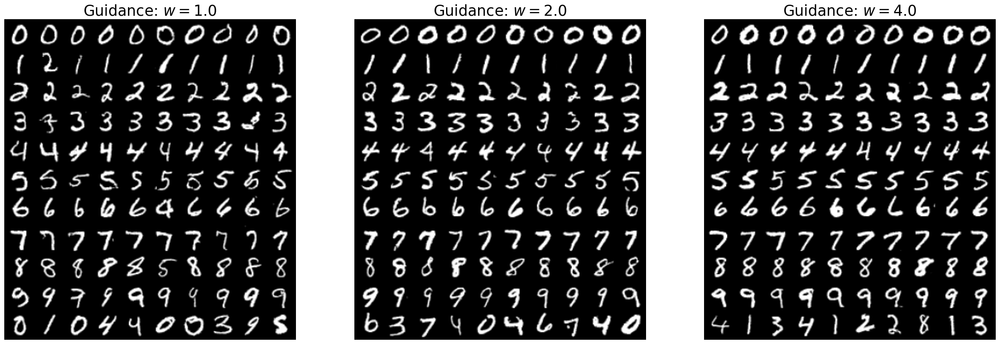
图 13：在 MNIST 手写数字数据集上，不同引导强度的无分类器引导效果。左：引导强度为 w = 1.0 w=1.0 w = 1.0 w = 2.0 w=2.0 w = 2.0 w = 4.0 w=4.0 w = 4.0
注记 28（扩散模型的引导）
将上述讨论从流模型推广到扩散模型很直接：只需将 u t θ ( x ∣ y ) u_{t}^{\theta}(x|y) u t θ ( x ∣ y ) u ~ t θ ( x ∣ y ) \tilde{u}_{t}^{\theta}(x|y) u ~ t θ ( x ∣ y ) 第 4 节 的方法使用 SDE 采样。
6 构建大规模图像与视频生成器
前面几节介绍了如何训练流匹配模型或扩散模型，从分布 p d a t a ( x ∣ y ) p_{\rm{data}}(x|y) p data ( x ∣ y )
神经网络架构：首先讨论如何将原始条件输入，包括时间 t t t y raw y_{\text{raw}} y raw 嵌入 为模型 u t θ ( x ∣ y ) u_{t}^{\theta}(x|y) u t θ ( x ∣ y ) u t θ ( x ∣ y ) u_{t}^{\theta}(x|y) u t θ ( x ∣ y ) U-Net 与扩散 Transformer 。
潜空间：介绍 变分自编码器 。它使我们能够在较低维的潜空间 中进行生成式建模，从而实现超高分辨率图像生成。
**案例研究：**最后，深入考察前述两个先进的图像与视频模型——Stable Diffusion 和 Meta Movie Gen，帮助你了解大规模系统的实现方式。
6.1 神经网络架构
首先讨论面向图像类模态，例如图像和视频的流模型与扩散模型，如何设计可扩展的神经网络架构。具体来说，我们将考察具有参数 θ \theta θ u t θ ( x ∣ y ) u_{t}^{\theta}(x|y) u t θ ( x ∣ y ) x ∈ R d x\in\mathbb{R}^{d} x ∈ R d y ∈ Y y\in\mathcal{Y} y ∈ Y t ∈ [ 0 , 1 ] t\in[0,1] t ∈ [ 0 , 1 ] u t θ ( x ∣ y ) ∈ R d u_{t}^{\theta}(x|y)\in\mathbb{R}^{d} u t θ ( x ∣ y ) ∈ R d u t θ ( x ∣ y ) u_{t}^{\theta}(x|y) u t θ ( x ∣ y ) u t θ ( x ∣ y ) u_{t}^{\theta}(x|y) u t θ ( x ∣ y ) x x x y y y t t t 图像 ，并可进一步推广到视频。首先考察如何将时间 t t t y y y 嵌入 为模型能够处理的向量形式；随后介绍两种常见架构：U-Net [38 , 17 , 22 , 11 ] 与扩散 Transformer （DiT）[13 , 30 , 28 ]。
6.1.1 条件变量的嵌入
时间嵌入。
对于简单的玩具模型，将 t t t 傅里叶特征 将标量时间嵌入到更高维空间，使模型更准确地捕捉随时间变化的高频成分 [46 ]。具体特征映射为
TimeEmb ( t ) = 2 d [ cos ( 2 π w 1 t ) ⋯ cos ( 2 π w d / 2 t ) sin ( 2 π w 1 t ) ⋯ sin ( 2 π w d / 2 t ) ] T , (68)
\begin{aligned}
\text{TimeEmb}(t)=\sqrt{\frac{2}{d}}\begin{bmatrix}\cos(2\pi w_{1}t)&\cdots&\cos(2\pi w_{d/2}t)&\sin(2\pi w_{1}t)&\cdots&\sin(2\pi w_{d/2}t)\end{bmatrix}^{T}, \qquad\text{(68)}
\end{aligned}
TimeEmb ( t ) = d 2 [ cos ( 2 π w 1 t ) ⋯ cos ( 2 π w d /2 t ) sin ( 2 π w 1 t ) ⋯ sin ( 2 π w d /2 t ) ] T , (68) 其中频率 w i w_{i} w i
w i = w min ( w max w min ) i − 1 d / 2 − 1 , i = 1 , … , d / 2. (69)
w_{i}\;=\;w_{\min}\left(\frac{w_{\max}}{w_{\min}}\right)^{\frac{i-1}{d/2-1}},\qquad i=1,\ldots,d/2. \qquad\text{(69)}
w i = w m i n ( w m i n w m a x ) d /2 − 1 i − 1 , i = 1 , … , d /2. (69) 这种 TimeEmb 是常见选择，但不必严格采用这一具体形式。它只是得到 d d d ∥ TimeEmb ( t ) ∥ = 1 \|\text{TimeEmb}(t)\|=1 ∥ TimeEmb ( t ) ∥ = 1 sin 2 + cos 2 = 1 \sin^{2}+\cos^{2}=1 sin 2 + cos 2 = 1
类别标签嵌入。
当 y raw ∈ Y ≜ { 0 , … , N } y_{\text{raw}}\in\mathcal{Y}\triangleq\{0,\dots,N\} y raw ∈ Y ≜ { 0 , … , N } y raw y_{\text{raw}} y raw N + 1 N+1 N + 1 y y y u t θ ( x ∣ y ) u_{t}^{\theta}(x|y) u t θ ( x ∣ y )
文本输入嵌入
当 y raw y_{\text{raw}} y raw CLIP （对比式语言—图像预训练）。CLIP 学习图像与文本提示共享的嵌入空间，其训练损失鼓励图像嵌入靠近对应文本提示的嵌入，同时远离其他图像与文本的嵌入 [34 ]。因此，可以将 y = CLIP ( y raw ) ∈ R d CLIP y=\text{CLIP}(y_{\text{raw}})\in\mathbb{R}^{d_{\text{CLIP}}} y = CLIP ( y raw ) ∈ R d CLIP 14 , 33 ]。对于本节，只需假设经过模型处理后的提示词嵌入具有如下形状：
PromptEmbed ( y raw ) ∈ R S × k
\text{PromptEmbed}(y_{\text{raw}})\in\mathbb{R}^{S\times k}
PromptEmbed ( y raw ) ∈ R S × k
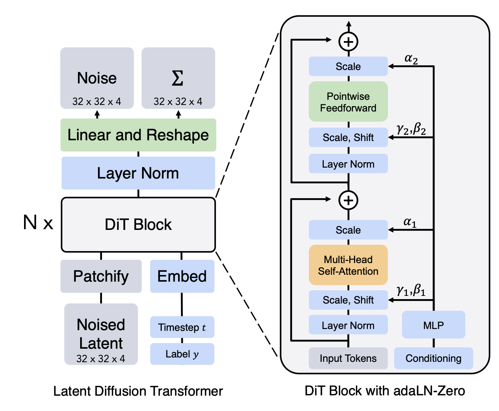
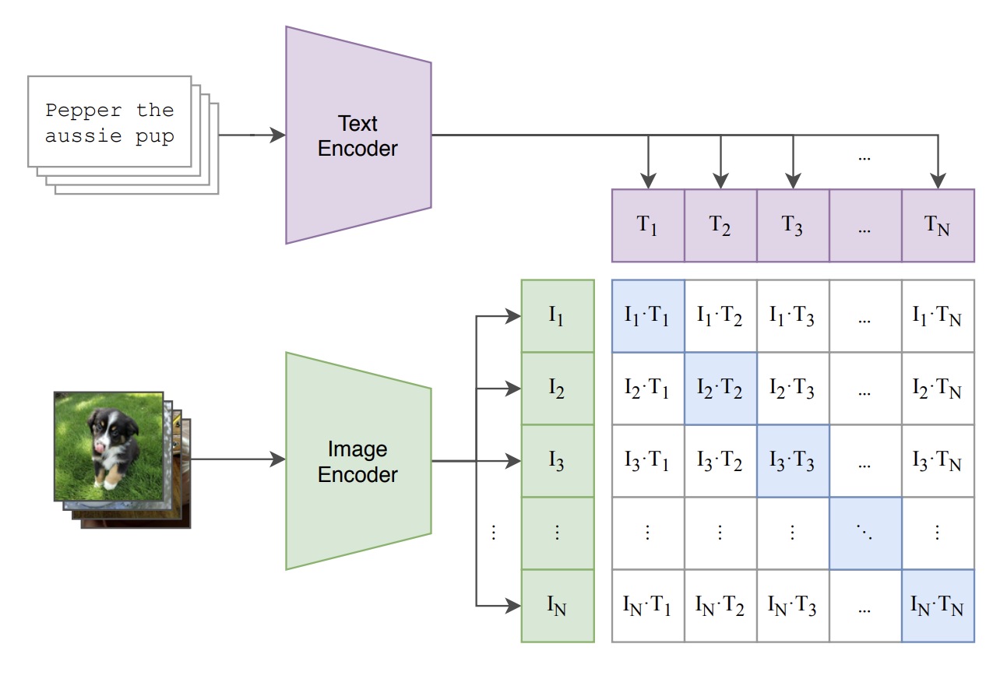
图 14：左：扩散 Transformer 架构概览，来自 [30 ]。右：CLIP 对比损失示意图，用于学习图像与文本共享的嵌入空间，来自 [34 ]。
6.1.2 扩散 Transformer
在介绍具体架构之前，回顾引言中的图像表示：图像就是向量 x ∈ R C image × H × W x\in\mathbb{R}^{C_{\text{image}}\times H\times W} x ∈ R C image × H × W C image C_{\text{image}} C image 通道数 ，RGB 图像通常有 C input = 3 C_{\text{input}}=3 C input = 3 H H H W W W 高度 与宽度 。一个特别重要的架构类别是扩散 Transformer （DiT）及其变体，它们用注意力机制 构建网络 [49 , 30 , 28 ]。DiT 有不同版本，这里讲解一种通用设计；具体实现可能随模型和应用而异。本节后文用 d d d L L L h h h 视觉 Transformer （ViT）：其核心思想是将图像切成图像块，将这些块嵌入为一列 token，再用标准注意力处理这些 token [12 ]。最后通过逆分块操作恢复正确形状的图像。最初的分块操作只是重排图像张量 x ∈ R C × H × W x\in\mathbb{R}^{C\times H\times W} x ∈ R C × H × W
Patchify ( x ) ∈ R N × C ′
\text{Patchify}(x)\in\mathbb{R}^{N\times C^{\prime}}
Patchify ( x ) ∈ R N × C ′ 其中 C ′ = C P 2 , N = ( H / P ) ⋅ ( W / P ) C^{\prime}=CP^{2},N=(H/P)\cdot(W/P) C ′ = C P 2 , N = ( H / P ) ⋅ ( W / P ) P P P
PatchEmb ( x ) = Patchify ( x ) W ∈ R N × d
\text{PatchEmb}(x)=\text{Patchify}(x)W\in\mathbb{R}^{N\times d}
PatchEmb ( x ) = Patchify ( x ) W ∈ R N × d 其中 W ∈ R C ′ × d W\in\mathbb{R}^{C^{\prime}\times d} W ∈ R C ′ × d 第 6.1.1 节 ：
t ~ = TimeEmb ( t ) ∈ R d y ~ = PromptEmb ( y ) ∈ R S × d x ~ 0 = PatchEmb ( x ) ∈ R N × d
\begin{aligned}
\tilde{t} & =\text{TimeEmb}(t)\in\mathbb{R}^{d} \\
\tilde{y} & =\text{PromptEmb}(y)\in\mathbb{R}^{S\times d} \\
\tilde{x}_{0} & =\text{PatchEmb}(x)\in\mathbb{R}^{N\times d}
\end{aligned}
t ~ y ~ x ~ 0 = TimeEmb ( t ) ∈ R d = PromptEmb ( y ) ∈ R S × d = PatchEmb ( x ) ∈ R N × d 此时，所有元素都具有 Transformer 所需的隐藏维度。接下来，扩散 Transformer 对 i = 0 , ⋯ , L − 1 i=0,\cdots,L-1 i = 0 , ⋯ , L − 1 DiTBlock 中的 Transformer 层迭代更新 z ~ i \tilde{z}_{i} z ~ i 注记 29 ：
x ~ i + 1 = DiTBlock ( x ~ i , t ~ , y ~ ) ∈ R N × d ( i = 0 , … , L − 1 ) . (70)
\tilde{x}_{i+1}=\text{DiTBlock}(\tilde{x}_{i},\tilde{t},\tilde{y})\in\mathbb{R}^{N\times d}\quad(i=0,\dots,L-1). \qquad\text{(70)}
x ~ i + 1 = DiTBlock ( x ~ i , t ~ , y ~ ) ∈ R N × d ( i = 0 , … , L − 1 ) . (70) 其中 N N N
u = Depatchify ( x ~ N W ~ ) ∈ R C × H × W ,
u=\text{Depatchify}(\tilde{x}_{N}\tilde{W})\in\mathbb{R}^{C\times H\times W},
u = Depatchify ( x ~ N W ~ ) ∈ R C × H × W , 其中 W ~ ∈ R d × C ′ \tilde{W}\in\mathbb{R}^{d\times C^{\prime}} W ~ ∈ R d × C ′ u u u u t θ ( x ∣ y ) u_{t}^{\theta}(x|y) u t θ ( x ∣ y )
注记 29（DiT 模块）
为完整起见，下面简要给出单个 DiT 层的数学描述。我们希望提供足够细节，让读者理解 DiT 模型家族的基本原理，但本讲义侧重算法中的关键选择，而非架构细节。设 x ∈ R N × d x\in\mathbb{R}^{N\times d} x ∈ R N × d x = x ~ i x=\tilde{x}_{i} x = x ~ i y ∈ R S × d y\in\mathbb{R}^{S\times d} y ∈ R S × d y = y ~ y=\tilde{y} y = y ~ x x x
缩放点积注意力。
给定查询 Q ∈ R N × d h Q\in\mathbb{R}^{N\times d_{h}} Q ∈ R N × d h K ∈ R M × d h K\in\mathbb{R}^{M\times d_{h}} K ∈ R M × d h V ∈ R M × d h V\in\mathbb{R}^{M\times d_{h}} V ∈ R M × d h
A t t n ( Q , K , V ) = s o f t m a x ( Q K ⊤ d h ) V ∈ R N × d h ,
\mathrm{Attn}(Q,K,V)\;=\;\mathrm{softmax}\!\left(\frac{QK^{\top}}{\sqrt{d_{h}}}\right)V\;\in\;\mathbb{R}^{N\times d_{h}},
Attn ( Q , K , V ) = softmax ( d h Q K ⊤ ) V ∈ R N × d h , 其中 softmax 逐行计算。
多头注意力。
设 h h h d h = d h d_{h}=\frac{d}{h} d h = h d h ∈ { 1 , … , n heads } h\in\{1,\dots,n_{\text{heads}}\} h ∈ { 1 , … , n heads } W Q ( h ) , W K ( h ) , W V ( h ) ∈ R k × d h W_{Q}^{(h)},W_{K}^{(h)},W_{V}^{(h)}\in\mathbb{R}^{k\times d_{h}} W Q ( h ) , W K ( h ) , W V ( h ) ∈ R k × d h
head h ( x , z ) = A t t n ( x W Q ( h ) , z W K ( h ) , z W V ( h ) ) ,
\text{head}_{h}(x,z)\;=\;\mathrm{Attn}\!\big(xW_{Q}^{(h)},\,zW_{K}^{(h)},\,zW_{V}^{(h)}\big),
head h ( x , z ) = Attn ( x W Q ( h ) , z W K ( h ) , z W V ( h ) ) , 其中源序列 z z z
z = x （图像块间的自注意力） , z = y （对提示词的交叉注意力） .
z=x\quad\text{（图像块间的自注意力）},\qquad z=y\quad\text{（对提示词的交叉注意力）}.
z = x （图像块间的自注意力） , z = y （对提示词的交叉注意力） . 将各个头拼接，再施加输出投影 W O ∈ R d × d W_{O}\in\mathbb{R}^{d\times d} W O ∈ R d × d
M u l t i H e a d a t t e n t i o n ( x , z ) = C o n c a t ( head 1 ( x , z ) , … , head h ( x , z ) ) W O ∈ R N × d .
\mathrm{MultiHeadattention}(x,z)\;=\;\mathrm{Concat}\big(\text{head}_{1}(x,z),\dots,\text{head}_{h}(x,z)\big)\,W_{O}\;\in\;\mathbb{R}^{N\times d}.
MultiHeadattention ( x , z ) = Concat ( head 1 ( x , z ) , … , head h ( x , z ) ) W O ∈ R N × d . 通过自适应归一化引入时间条件。
设 t ~ ∈ R d \tilde{t}\in\mathbb{R}^{d} t ~ ∈ R d t ~ \tilde{t} t ~ 31 ]。具体地，设 g : R d → R 2 d g:\mathbb{R}^{d}\to\mathbb{R}^{2d} g : R d → R 2 d
( γ , β ) = g ( t ~ ) ,
(\gamma,\beta)=g(\tilde{t}),
( γ , β ) = g ( t ~ ) , 其中 γ , β ∈ R d \gamma,\beta\in\mathbb{R}^{d} γ , β ∈ R d ( γ , β ) (\gamma,\beta) ( γ , β ) x ∈ R N × d x\in\mathbb{R}^{N\times d} x ∈ R N × d N o r m ( ⋅ ) \mathrm{Norm}(\cdot) Norm ( ⋅ )
A d a N o r m t ~ ( x ) = ( 1 + γ ) ⊙ N o r m ( H ) + β ,
\mathrm{AdaNorm}_{\tilde{t}}(x)\;=\;\bigl(1+\gamma\bigr)\odot\mathrm{Norm}(H)\;+\;\beta,
AdaNorm t ~ ( x ) = ( 1 + γ ) ⊙ Norm ( H ) + β , 其中 ⊙ \odot ⊙
组合各部分。
将上述操作组合起来，就得到 DiTBlock：
x ← x + g self ( t ~ ) ⊙ M u l t i H e a d a t t e n t i o n ( A d a N o r m t ~ ( x ) , A d a N o r m t ~ ( x ) ) x ← x + g cross ( t ~ ) M u l t i H e a d a t t e n t i o n ( A d a N o r m t ~ ( x ) , y ) x ← x + g MLP ( t ~ ) M L P ( A d a N o r m t ~ ( x ) ) ,
\begin{aligned}
x & \leftarrow x+g_{\text{self}}(\tilde{t})\odot\mathrm{MultiHeadattention}\!\big(\mathrm{AdaNorm}_{\tilde{t}}(x),\,\mathrm{AdaNorm}_{\tilde{t}}(x)\big) \\
x & \leftarrow x+g_{\text{cross}}(\tilde{t})\mathrm{MultiHeadattention}\!\big(\mathrm{AdaNorm}_{\tilde{t}}(x),\,y\big) \\
x & \leftarrow x+g_{\text{MLP}}(\tilde{t})\mathrm{MLP}\!\big(\mathrm{AdaNorm}_{\tilde{t}}(x)\big),
\end{aligned}
x x x ← x + g self ( t ~ ) ⊙ MultiHeadattention ( AdaNorm t ~ ( x ) , AdaNorm t ~ ( x ) ) ← x + g cross ( t ~ ) MultiHeadattention ( AdaNorm t ~ ( x ) , y ) ← x + g MLP ( t ~ ) MLP ( AdaNorm t ~ ( x ) ) , 其中 MLP 是逐位置的前馈网络，g ⋯ g_{\cdots} g ⋯ x ∈ R N × d x\in\mathbb{R}^{N\times d} x ∈ R N × d x ~ i + 1 \tilde{x}_{i+1} x ~ i + 1
6.1.3 U-Net
U-Net 架构 [38 ] 是 DiT 之外的另一种选择，属于特定类型的卷积神经网络。它最初用于图像分割，关键特点是输入与输出均具有图像的形状，通道数可以不同。因此，它非常适合参数化向量场 x ↦ u t θ ( x ∣ y ) x\mapsto u_{t}^{\theta}(x|y) x ↦ u t θ ( x ∣ y ) y , t y,t y , t 17 , 22 , 11 ]。U-Net 包括一系列编码器 E i \mathcal{E}_{i} E i 解码器 D i \mathcal{D}_{i} D i 中间编码器 （midcoder）。 以图像 x t ∈ R 3 × 256 × 256 x_{t}\in\mathbb{R}^{3\times 256\times 256} x t ∈ R 3 × 256 × 256 ( C input , H , W ) = ( 3 , 256 , 256 ) (C_{\text{input}},H,W)=(3,256,256) ( C input , H , W ) = ( 3 , 256 , 256 )
x t input ∈ R 3 × 256 × 256 ▶ U-Net 的输入。 x t latent = E ( x t input ) ∈ R 512 × 32 × 32 ▶ 经编码器得到潜表示。 x t latent = M ( x t latent ) ∈ R 512 × 32 × 32 ▶ 潜表示通过中间编码器。 x t output = D ( x t latent ) ∈ R 3 × 256 × 256 ▶ 经解码器得到输出。
\begin{aligned}
x^{\text{input}}_{t} & \in\mathbb{R}^{3\times 256\times 256}\quad & \blacktriangleright\,\,\text{U-Net 的输入。} \\
x^{\text{latent}}_{t}=\mathcal{E}(x^{\text{input}}_{t}) & \in\mathbb{R}^{512\times 32\times 32}\quad & \blacktriangleright\,\,\text{经编码器得到潜表示。} \\
x^{\text{latent}}_{t}=\mathcal{M}(x^{\text{latent}}_{t}) & \in\mathbb{R}^{512\times 32\times 32}\quad & \blacktriangleright\,\,\text{潜表示通过中间编码器。} \\
x^{\text{output}}_{t}=\mathcal{D}(x^{\text{latent}}_{t}) & \in\mathbb{R}^{3\times 256\times 256}\quad & \blacktriangleright\,\,\text{经解码器得到输出。}
\end{aligned}
x t input x t latent = E ( x t input ) x t latent = M ( x t latent ) x t output = D ( x t latent ) ∈ R 3 × 256 × 256 ∈ R 512 × 32 × 32 ∈ R 512 × 32 × 32 ∈ R 3 × 256 × 256 ▶ U-Net 的输入。 ▶ 经编码器得到潜表示。 ▶ 潜表示通过中间编码器。 ▶ 经解码器得到输出。 随着输入依次通过编码器，表示的通道数增加，而图像的高度与宽度减小。编码器与解码器通常都由若干卷积层组成，层间穿插激活函数、池化等操作。上图省略了两点：首先，输入 x t input ∈ R 3 × 256 × 256 x^{\text{input}}_{t}\in\mathbb{R}^{3\times 256\times 256} x t input ∈ R 3 × 256 × 256 残差连接 。完整结构见图 15 。
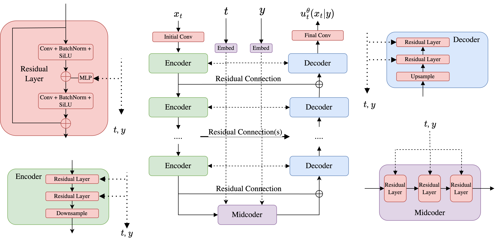
图 15：简化的 U-Net 架构。2025 年版课程的实验 03 使用了类似架构。
从整体上看，大多数 U-Net 都是上述结构的变体，但实际实现中的设计选择可能有所不同。特别是，这里采用的是纯卷积架构，而实践中通常也会在编码器与解码器中加入注意力层。U-Net 的名称来自编码器与解码器共同构成的“U”形结构，见图 15 。
6.2 在潜空间中建模：（变分）自编码器
迄今，我们都在数据空间 R d \mathbb{R}^{d} R d 1024 × 1024 1024\times 1024 1024 × 1024 d = H ⋅ W ⋅ 3 ≈ 3 ∗ 10 6 d=H\cdot W\cdot 3\approx 3*10^{6} d = H ⋅ W ⋅ 3 ≈ 3 ∗ 1 0 6 T T T u t θ ( x ) ∈ R d u_{t}^{\theta}(x)\in\mathbb{R}^{d} u t θ ( x ) ∈ R d 如何在合理的内存与计算预算下，对高维图像进行建模？
6.2.1 标准自编码器
一个自然的答案是压缩 ：例如，真实图像可能位于高维图像空间中某个低得多维的流形附近。具体而言，可以考虑编码器 μ ϕ : R d → R k \mu_{\phi}:\mathbb{R}^{d}\to\mathbb{R}^{k} μ ϕ : R d → R k 解码器 μ θ : R k → R d \mu_{\theta}:\mathbb{R}^{k}\to\mathbb{R}^{d} μ θ : R k → R d x ∈ R d x\in\mathbb{R}^{d} x ∈ R d z ∈ R k z\in\mathbb{R}^{k} z ∈ R k k k k d d d d = 3 × 1024 × 1024 d=3\times 1024\times 1024 d = 3 × 1024 × 1024 k = 3 × 1024 16 × 1024 16 k=3\times\tfrac{1024}{16}\times\tfrac{1024}{16} k = 3 × 16 1024 × 16 1024 μ ϕ \mu_{\phi} μ ϕ μ θ \mu_{\theta} μ θ 自编码器 。理想情况下，应选择 μ ϕ \mu_{\phi} μ ϕ μ θ \mu_{\theta} μ θ μ θ ( μ ϕ ( x ) ) \mu_{\theta}(\mu_{\phi}(x)) μ θ ( μ ϕ ( x )) x x x 重建损失 训练：
L Recon ( ϕ , θ ) = E x ∼ p d a t a [ ∥ μ θ ( μ ϕ ( x ) ) − x ∥ 2 ] .
\begin{aligned}
\mathcal{L}_{\text{Recon}}(\phi,\theta)= & \mathbb{E}_{x\sim p_{\rm{data}}}\left[\|\mu_{\theta}(\mu_{\phi}(x))-x\|^{2}\right].
\end{aligned}
L Recon ( ϕ , θ ) = E x ∼ p data [ ∥ μ θ ( μ ϕ ( x )) − x ∥ 2 ] . 该损失衡量原始数据点 x x x μ θ ( μ ϕ ( x ) ) \mu_{\theta}(\mu_{\phi}(x)) μ θ ( μ ϕ ( x ))
是否适合生成式建模。
遗憾的是，仅有上述重建损失，还不足以训练出“好”的自编码器。回想最终目标：我们希望在潜空间中训练生成模型，目标潜分布 p latent ( z ) p_{\text{latent}}(z) p latent ( z ) z = μ ϕ ( x ) , x ∼ p d a t a z=\mu_{\phi}(x),x\sim p_{\rm{data}} z = μ ϕ ( x ) , x ∼ p data μ θ \mu_{\theta} μ θ p d a t a ( x ) p_{\rm{data}}(x) p data ( x ) p latent ( z ) p_{\text{latent}}(z) p latent ( z ) p latent ( z ) p_{\text{latent}}(z) p latent ( z ) p d a t a p_{\rm{data}} p data p latent p_{\text{latent}} p latent p latent p_{\text{latent}} p latent
6.2.2 变分自编码器
将标准自编码器中“编码器与解码器必须是确定性函数”的限制放宽，就得到变分自编码器 （VAE）。具体地，考虑参数为 ϕ \phi ϕ q ϕ ( z ∣ x ) q_{\phi}(z|x) q ϕ ( z ∣ x ) θ \theta θ p θ ( x ∣ z ) p_{\theta}(x|z) p θ ( x ∣ z )
q ϕ ( z ∣ x ) = N ( z ; μ ϕ ( x ) , diag ( σ ϕ 2 ( x ) ) ) , p θ ( x ∣ z ) = N ( x ; μ θ ( z ) , σ θ 2 ( z ) I d ) (71)
q_{\phi}(z|x)=\mathcal{N}(z;\mu_{\phi}(x),\textrm{diag}(\sigma_{\phi}^{2}(x))),\quad p_{\theta}(x|z)=\mathcal{N}(x;\mu_{\theta}(z),\sigma_{\theta}^{2}(z)I_{d}) \qquad\text{(71)}
q ϕ ( z ∣ x ) = N ( z ; μ ϕ ( x ) , diag ( σ ϕ 2 ( x ))) , p θ ( x ∣ z ) = N ( x ; μ θ ( z ) , σ θ 2 ( z ) I d ) (71) 其中 μ ϕ ( x ) ∈ R k \mu_{\phi}(x)\in\mathbb{R}^{k} μ ϕ ( x ) ∈ R k σ ϕ 2 ( x ) ∈ R ≥ 0 k \sigma_{\phi}^{2}(x)\in\mathbb{R}_{\geq 0}^{k} σ ϕ 2 ( x ) ∈ R ≥ 0 k μ θ ( z ) ∈ R d \mu_{\theta}(z)\in\mathbb{R}^{d} μ θ ( z ) ∈ R d σ θ 2 ( z ) ∈ R ≥ 0 \sigma_{\theta}^{2}(z)\in\mathbb{R}_{\geq 0} σ θ 2 ( z ) ∈ R ≥ 0
z ∼ q ϕ ( ⋅ ∣ x ) ( encode ) x ∼ p θ ( ⋅ ∣ z ) ( decode )
\begin{aligned}
z & \sim q_{\phi}(\cdot|x) & (\text{encode}) \\
x & \sim p_{\theta}(\cdot|z) & (\text{decode})
\end{aligned}
z x ∼ q ϕ ( ⋅ ∣ x ) ∼ p θ ( ⋅ ∣ z ) ( encode ) ( decode ) 当始终有 σ ϕ ( x ) = 0 \sigma_{\phi}(x)=0 σ ϕ ( x ) = 0 σ θ ( x ) = 0 \sigma_{\theta}(x)=0 σ θ ( x ) = 0
L VAE-Recon ( ϕ , θ ) = − E x ∼ p d a t a ( x ) , z ∼ q ϕ ( ⋅ ∣ x ) [ log p θ ( x ∣ z ) ] (72)
\begin{aligned}
\mathcal{L}_{\text{VAE-Recon}}(\phi,\theta)= & -\mathbb{E}_{x\sim p_{\rm{data}}(x),z\sim q_{\phi}(\cdot|x)}\left[\log p_{\theta}(x|z)\right] \qquad\text{(72)}
\end{aligned}
L VAE-Recon ( ϕ , θ ) = − E x ∼ p data ( x ) , z ∼ q ϕ ( ⋅ ∣ x ) [ log p θ ( x ∣ z ) ] (72) 这里有两处变化：首先，编码不再确定，而是采样 z ∼ q ϕ ( z ∣ x ) z\sim q_{\phi}(z|x) z ∼ q ϕ ( z ∣ x ) x x x x x x
L VAE-Recon ( ϕ , θ ) = E x ∼ p d a t a ( x ) , z ∼ q ϕ ( z ∣ x ) [ 1 2 σ θ 2 ( z ) ∥ x − μ θ ( z ) ∥ 2 + d 2 log σ θ 2 ( z ) ] + const (73)
\begin{aligned}
\mathcal{L}_{\text{VAE-Recon}}(\phi,\theta)= & \mathbb{E}_{x\sim p_{\rm{data}}(x),z\sim q_{\phi}(z|x)}\left[\frac{1}{2\sigma^{2}_{\theta}(z)}\|x-\mu_{\theta}(z)\|^{2}+\frac{d}{2}\log\sigma_{\theta}^{2}(z)\right]+\text{const} \qquad\text{(73)}
\end{aligned}
L VAE-Recon ( ϕ , θ ) = E x ∼ p data ( x ) , z ∼ q ϕ ( z ∣ x ) [ 2 σ θ 2 ( z ) 1 ∥ x − μ θ ( z ) ∥ 2 + 2 d log σ θ 2 ( z ) ] + const (73) 这里使用了正态分布的密度，见式 97 。因此，VAE 的重建损失与标准自编码器相差不大，只需将所有可能的编码 z ∼ q ϕ ( ⋅ ∣ x ) z\sim q_{\phi}(\cdot|x) z ∼ q ϕ ( ⋅ ∣ x ) σ ϕ ( x ) \sigma_{\phi}(x) σ ϕ ( x ) σ θ ( z ) \sigma_{\theta}(z) σ θ ( z ) x x x z z z
L VAE-Recon ( ϕ , θ ) = E x ∼ p d a t a ( x ) , z ∼ q ϕ ( z ∣ x ) [ 1 2 σ θ 2 ∥ x − μ θ ( z ) ∥ 2 ] + const (74)
\begin{aligned}
\mathcal{L}_{\text{VAE-Recon}}(\phi,\theta)= & \mathbb{E}_{x\sim p_{\rm{data}}(x),z\sim q_{\phi}(z|x)}\left[\frac{1}{2\sigma_{\theta}^{2}}\|x-\mu_{\theta}(z)\|^{2}\right]+\text{const} \qquad\text{(74)}
\end{aligned}
L VAE-Recon ( ϕ , θ ) = E x ∼ p data ( x ) , z ∼ q ϕ ( z ∣ x ) [ 2 σ θ 2 1 ∥ x − μ θ ( z ) ∥ 2 ] + const (74) 再回顾目标：我们希望为数据分布 p d a t a ( x ) p_{\rm{data}}(x) p data ( x ) z z z 先验分布 p prior ( z ) p_{\text{prior}}(z) p prior ( z ) p prior = N ( 0 , I k ) p_{\text{prior}}=\mathcal{N}(0,I_{k}) p prior = N ( 0 , I k ) p prior p_{\text{prior}} p prior p prior p_{\text{prior}} p prior
L VAE-Prior ( ϕ ) = E x ∼ p d a t a ( x ) [ D KL ( q ϕ ( ⋅ ∣ x ) ∥ p prior ) ] , (75)
\begin{aligned}
\mathcal{L}_{\text{VAE-Prior}}(\phi)= & \mathbb{E}_{x\sim p_{\rm{data}}(x)}\left[D_{\text{KL}}(q_{\phi}(\cdot|x)\;\|\;p_{\text{prior}})\right], \qquad\text{(75)}
\end{aligned}
L VAE-Prior ( ϕ ) = E x ∼ p data ( x ) [ D KL ( q ϕ ( ⋅ ∣ x ) ∥ p prior ) ] , (75) 其中 D K L D_{KL} D K L Kullback–Leibler（KL）散度 。KL 散度是衡量两个概率分布差异的基本方法。详细介绍超出了本文范围，注记 30 会简要回顾。这里定义的损失 L VAE-Prior \mathcal{L}_{\text{VAE-Prior}} L VAE-Prior x x x x x x
注记 30（KL 散度背景知识）
对两个概率密度 q , p q,p q , p Kullback–Leibler 散度 （KL 散度）定义为
D KL ( q ( x ) ∥ p ( x ) ) = ∫ q ( x ) log q ( x ) p ( x ) = E X ∼ q [ log q ( X ) p ( X ) ] .
D_{\text{KL}}(q(x)\;\|\;p(x))=\int q(x)\log\frac{q(x)}{p(x)}=\mathbb{E}_{X\sim q}\left[\log\frac{q(X)}{p(X)}\right].
D KL ( q ( x ) ∥ p ( x )) = ∫ q ( x ) log p ( x ) q ( x ) = E X ∼ q [ log p ( X ) q ( X ) ] . KL 散度是衡量分布差异的标准指标，特别地，它具有以下有用性质：
D KL ( q ( x ) ∥ p ( x ) ) ≥ 0 , (76) D KL ( q ( x ) ∥ p ( x ) ) = 0 ⇔ q = p . (77)
\begin{aligned}
D_{\text{KL}}(q(x)\;\|\;p(x)) & \geq 0, \qquad\text{(76)} \\
D_{\text{KL}}(q(x)\;\|\;p(x)) & =0\quad\Leftrightarrow\quad q=p. \qquad\text{(77)}
\end{aligned}
D KL ( q ( x ) ∥ p ( x )) D KL ( q ( x ) ∥ p ( x )) ≥ 0 , (76) = 0 ⇔ q = p . (77) 即始终非负，且当且仅当两个概率分布相同时为零。
现在，将重建损失与先验损失通过权重参数 β ≥ 0 \beta\geq 0 β ≥ 0 VAE 训练目标 ：
L VAE ( ϕ , θ ) = L VAE-Recon ( ϕ , θ ) + β L VAE-Prior ( ϕ ) (78) = − E x ∼ p d a t a ( x ) , z ∼ q ϕ ( z ∣ x ) [ log p θ ( x ∣ z ) ] + β E x ∼ p d a t a ( x ) [ D K L ( q ϕ ( ⋅ ∣ x ) ∣ ∣ p prior ) ] (79)
\begin{aligned}
\mathcal{L}_{\text{VAE}}(\phi,\theta) & =\mathcal{L}_{\text{VAE-Recon}}(\phi,\theta)+\beta\mathcal{L}_{\text{VAE-Prior}}(\phi) \qquad\text{(78)} \\
=-\mathbb{E}_{x\sim p_{\rm{data}}(x),z\sim q_{\phi}(z|x)}\left[\log p_{\theta}(x\mid z)\right]+\beta\mathbb{E}_{x\sim p_{\rm{data}}(x)}\left[D_{KL}(q_{\phi}(\cdot|x)||p_{\text{prior}})\right] \qquad\text{(79)}
\end{aligned}
L VAE ( ϕ , θ ) = − E x ∼ p data ( x ) , z ∼ q ϕ ( z ∣ x ) [ log p θ ( x ∣ z ) ] + β E x ∼ p data ( x ) [ D K L ( q ϕ ( ⋅ ∣ x ) ∣∣ p prior ) ] (79) = L VAE-Recon ( ϕ , θ ) + β L VAE-Prior ( ϕ ) (78) 第一项要求潜变量能够被有效解码回数据，第二项要求潜分布接近高斯分布，参数 β \beta β
例 31（各向同性高斯分布之间的 KL 散度）
设 q ( x ) = N ( x ; μ q , diag ( σ q 2 ) ) q(x)=\mathcal{N}(x;\mu_{q},\textrm{diag}(\sigma_{q}^{2})) q ( x ) = N ( x ; μ q , diag ( σ q 2 )) p ( x ) = N ( x ; μ p , diag ( σ p 2 ) ) p(x)=\mathcal{N}(x;\mu_{p},\textrm{diag}(\sigma_{p}^{2})) p ( x ) = N ( x ; μ p , diag ( σ p 2 )) σ q , σ p ∈ R ≥ 0 d \sigma_{q},\sigma_{p}\in\mathbb{R}_{\geq 0}^{d} σ q , σ p ∈ R ≥ 0 d x ∈ R d x\in\mathbb{R}^{d} x ∈ R d
D KL ( q ∥ p ) = 1 2 ( K ( σ q 2 σ p 2 ) + ∥ μ q − μ p ∥ 2 σ p 2 ) , 其中 K ( α ) = ∑ i = 1 d α i − log α i − 1. (80)
D_{\text{KL}}(q\;\|\;p)=\frac{1}{2}\left(\mathcal{K}\left(\frac{\sigma_{q}^{2}}{\sigma_{p}^{2}}\right)+\frac{\|\mu_{q}-\mu_{p}\|^{2}}{\sigma_{p}^{2}}\right),\quad\text{其中 }\mathcal{K}(\alpha)=\sum\limits_{i=1}^{d}\alpha_{i}-\log\alpha_{i}-1. \qquad\text{(80)}
D KL ( q ∥ p ) = 2 1 ( K ( σ p 2 σ q 2 ) + σ p 2 ∥ μ q − μ p ∥ 2 ) , 其中 K ( α ) = i = 1 ∑ d α i − log α i − 1. (80) 上式的含义很直观：均值和方差均相同时，D KL ( q ∥ p ) = 0 D_{\text{KL}}(q\;\|\;p)=0 D KL ( q ∥ p ) = 0 ∥ μ q − μ p ∥ 2 \|\mu_{q}-\mu_{p}\|^{2} ∥ μ q − μ p ∥ 2 K ( α ) \mathcal{K}(\alpha) K ( α ) α = 1 \alpha=1 α = 1 σ q = σ p \sigma_{q}=\sigma_{p} σ q = σ p D KL ( q ∥ p ) D_{\text{KL}}(q\;\|\;p) D KL ( q ∥ p )
证明。
先证明 d = 1 d=1 d = 1 d > 1 d>1 d > 1 式 97 ，有
log q ( x ) = − 1 2 log ( 2 π σ q 2 ) − 1 2 σ q 2 ∥ x − μ q ∥ 2 , log p ( x ) = − 1 2 log ( 2 π σ p 2 ) − 1 2 σ p 2 ∥ x − μ p ∥ 2
\log q(x)=-\frac{1}{2}\log(2\pi\sigma_{q}^{2})-\frac{1}{2\sigma_{q}^{2}}\|x-\mu_{q}\|^{2},\qquad\log p(x)=-\frac{1}{2}\log(2\pi\sigma_{p}^{2})-\frac{1}{2\sigma_{p}^{2}}\|x-\mu_{p}\|^{2}
log q ( x ) = − 2 1 log ( 2 π σ q 2 ) − 2 σ q 2 1 ∥ x − μ q ∥ 2 , log p ( x ) = − 2 1 log ( 2 π σ p 2 ) − 2 σ p 2 1 ∥ x − μ p ∥ 2 因此
D K L ( q ∥ p ) = E x ∼ q [ log q ( x ) − log p ( x ) ] = 1 2 log σ p 2 σ q 2 + 1 2 σ p 2 E q [ ∥ x − μ p ∥ 2 ] − 1 2 σ q 2 E q [ ∥ x − μ q ∥ 2 ] . (81)
\begin{aligned}
D_{\mathrm{KL}}(q\|p) & =\mathbb{E}_{x\sim q}\big[\log q(x)-\log p(x)\big]=\frac{1}{2}\log\frac{\sigma_{p}^{2}}{\sigma_{q}^{2}}+\frac{1}{2\sigma_{p}^{2}}\mathbb{E}_{q}\!\left[\|x-\mu_{p}\|^{2}\right]-\frac{1}{2\sigma_{q}^{2}}\mathbb{E}_{q}\!\left[\|x-\mu_{q}\|^{2}\right]. \qquad\text{(81)}
\end{aligned}
D KL ( q ∥ p ) = E x ∼ q [ log q ( x ) − log p ( x ) ] = 2 1 log σ q 2 σ p 2 + 2 σ p 2 1 E q [ ∥ x − μ p ∥ 2 ] − 2 σ q 2 1 E q [ ∥ x − μ q ∥ 2 ] . (81) 对于 x ∼ N ( μ q , σ q 2 I ) x\sim\mathcal{N}(\mu_{q},\sigma_{q}^{2}I) x ∼ N ( μ q , σ q 2 I )
E q [ ∥ x − μ q ∥ 2 ] = t r ( σ q 2 I ) = σ q 2 .
\mathbb{E}_{q}\!\left[\|x-\mu_{q}\|^{2}\right]=\mathrm{tr}(\sigma_{q}^{2}I)=\sigma_{q}^{2}.
E q [ ∥ x − μ q ∥ 2 ] = tr ( σ q 2 I ) = σ q 2 . 结合 x − μ p = ( x − μ q ) + ( μ q − μ p ) x-\mu_{p}=(x-\mu_{q})+(\mu_{q}-\mu_{p}) x − μ p = ( x − μ q ) + ( μ q − μ p ) E q [ x − μ q ] = 0 \mathbb{E}_{q}[x-\mu_{q}]=0 E q [ x − μ q ] = 0
E q [ ∥ x − μ p ∥ 2 ] = E q [ ∥ x − μ q ∥ 2 ] + ∥ μ q − μ p ∥ 2 = σ q 2 + ∥ μ q − μ p ∥ 2 .
\mathbb{E}_{q}\!\left[\|x-\mu_{p}\|^{2}\right]=\mathbb{E}_{q}\!\left[\|x-\mu_{q}\|^{2}\right]+\|\mu_{q}-\mu_{p}\|^{2}=\sigma_{q}^{2}+\|\mu_{q}-\mu_{p}\|^{2}.
E q [ ∥ x − μ p ∥ 2 ] = E q [ ∥ x − μ q ∥ 2 ] + ∥ μ q − μ p ∥ 2 = σ q 2 + ∥ μ q − μ p ∥ 2 . 将这些代入式 81 ，即得式 80 。∎
现在假设编码器为高斯形式，可得：
L VAE-Prior ( ϕ ) = E x ∼ p d a t a ( x ) [ D KL ( q ϕ ( ⋅ ∣ x ) ∥ N ( 0 , I k ) ) ] = E [ 1 2 K ( σ ϕ 2 ( x ) ) + 1 2 ∥ μ ϕ ( x ) ∥ 2 ] (82)
\begin{aligned}
\mathcal{L}_{\text{VAE-Prior}}(\phi)= & \mathbb{E}_{x\sim p_{\rm{data}}(x)}\left[D_{\text{KL}}(q_{\phi}(\cdot|x)\;\|\;\mathcal{N}(0,I_{k}))\right]=\mathbb{E}\left[\frac{1}{2}\mathcal{K}\left(\sigma_{\phi}^{2}(x)\right)+\frac{1}{2}\|\mu_{\phi}(x)\|^{2}\right] \qquad\text{(82)}
\end{aligned}
L VAE-Prior ( ϕ ) = E x ∼ p data ( x ) [ D KL ( q ϕ ( ⋅ ∣ x ) ∥ N ( 0 , I k )) ] = E [ 2 1 K ( σ ϕ 2 ( x ) ) + 2 1 ∥ μ ϕ ( x ) ∥ 2 ] (82) 这个损失很直观：均值 μ ϕ ( x ) \mu_{\phi}(x) μ ϕ ( x ) 1 1 1
L VAE ( ϕ , θ ) = L VAE-Recon ( ϕ , θ ) + β L VAE-Prior ( ϕ ) = E x ∼ p d a t a ( x ) , z ∼ q ϕ ( z ∣ x ) [ 1 2 σ θ 2 ( z ) ∥ x − μ θ ( z ) ∥ 2 ⏟ 重建误差 + d 2 log σ θ 2 ( z ) ⏟ 解码器置信度 + β 2 K ( σ ϕ 2 ( x ) ) ⏟ 使潜变量方差为 = 1 + β 2 ∥ μ ϕ ( x ) ∥ 2 ⏟ 使潜变量均值为 = 0 ]
\begin{aligned}
\mathcal{L}_{\text{VAE}}(\phi,\theta) \\
=\mathcal{L}_{\text{VAE-Recon}}(\phi,\theta)+\beta\mathcal{L}_{\text{VAE-Prior}}(\phi) \\
=\mathbb{E}_{x\sim p_{\rm{data}}(x),z\sim q_{\phi}(z|x)}\left[\underbrace{\frac{1}{2\sigma^{2}_{\theta}(z)}\|x-\mu_{\theta}(z)\|^{2}}_{\text{重建误差}}+\underbrace{\frac{d}{2}\log\sigma_{\theta}^{2}(z)}_{\text{解码器置信度}}+\underbrace{\frac{\beta}{2}\mathcal{K}\left(\sigma_{\phi}^{2}(x)\right)}_{\text{使潜变量方差为}=1}+\underbrace{\frac{\beta}{2}\|\mu_{\phi}(x)\|^{2}}_{\text{使潜变量均值为}=0}\right]
\end{aligned}
L VAE ( ϕ , θ ) = L VAE-Recon ( ϕ , θ ) + β L VAE-Prior ( ϕ ) = E x ∼ p data ( x ) , z ∼ q ϕ ( z ∣ x ) 重建误差 2 σ θ 2 ( z ) 1 ∥ x − μ θ ( z ) ∥ 2 + 解码器置信度 2 d log σ θ 2 ( z ) + 使潜变量方差为 = 1 2 β K ( σ ϕ 2 ( x ) ) + 使潜变量均值为 = 0 2 β ∥ μ ϕ ( x ) ∥ 2 上述损失的四项含义都很直观：第一项就是重建误差；第二项反映解码器的不确定性，方差越小，解码器越“自信”，但对重建误差的惩罚也越强；此外，我们希望潜变量方差为 1 1 1 0 0 0
VAE 的训练。
剩下的问题是如何最小化 VAE 损失 L VAE ( ϕ , θ ) \mathcal{L}_{\text{VAE}}(\phi,\theta) L VAE ( ϕ , θ ) q ϕ ( z ∣ x ) q_{\phi}(z|x) q ϕ ( z ∣ x ) ϕ \phi ϕ 重参数化技巧 将其改写。具体地，对于
q ϕ ( z ∣ x ) = N ( z ; μ ϕ ( x ) , σ ϕ 2 ( x ) I k )
q_{\phi}(z|x)=\mathcal{N}(z;\mu_{\phi}(x),\sigma_{\phi}^{2}(x)I_{k})
q ϕ ( z ∣ x ) = N ( z ; μ ϕ ( x ) , σ ϕ 2 ( x ) I k ) 可以通过下式采样：
ϵ ∼ N ( 0 , I k ) , z = μ ϕ ( x ) + σ ϕ ( x ) ϵ ⇒ z ∼ q ϕ ( ⋅ ∣ x )
\epsilon\sim\mathcal{N}(0,I_{k}),\quad z=\mu_{\phi}(x)+\sigma_{\phi}(x)\epsilon\quad\Rightarrow\quad z\sim q_{\phi}(\cdot|x)
ϵ ∼ N ( 0 , I k ) , z = μ ϕ ( x ) + σ ϕ ( x ) ϵ ⇒ z ∼ q ϕ ( ⋅ ∣ x ) 此式中，唯一的噪声或随机性来源是 ϵ \epsilon ϵ ϕ \phi ϕ
L VAE ( ϕ , θ ) = E x ∼ p d a t a ( x ) , ϵ ∼ N ( 0 , I k ) [ 1 2 σ θ 2 ( z ) ∥ x − μ θ ( μ ϕ ( x ) + σ ϕ ( x ) ϵ ) ∥ 2 + d 2 log σ θ 2 ( z ) + β 2 K ( σ ϕ 2 ( x ) ) + β 2 ∥ μ ϕ ( x ) ∥ 2 ]
\begin{aligned}
\mathcal{L}_{\text{VAE}}(\phi,\theta)= & \mathbb{E}_{x\sim p_{\rm{data}}(x),\epsilon\sim\mathcal{N}(0,I_{k})}\left[\frac{1}{2\sigma^{2}_{\theta}(z)}\|x-\mu_{\theta}(\mu_{\phi}(x)+\sigma_{\phi}(x)\epsilon)\|^{2}+\frac{d}{2}\log\sigma_{\theta}^{2}(z)+\frac{\beta}{2}\mathcal{K}\left(\sigma_{\phi}^{2}(x)\right)+\frac{\beta}{2}\|\mu_{\phi}(x)\|^{2}\right]
\end{aligned}
L VAE ( ϕ , θ ) = E x ∼ p data ( x ) , ϵ ∼ N ( 0 , I k ) [ 2 σ θ 2 ( z ) 1 ∥ x − μ θ ( μ ϕ ( x ) + σ ϕ ( x ) ϵ ) ∥ 2 + 2 d log σ θ 2 ( z ) + 2 β K ( σ ϕ 2 ( x ) ) + 2 β ∥ μ ϕ ( x ) ∥ 2 ] 重参数化之后，随机性只来自 ϵ ∼ N ( 0 , I k ) \epsilon\sim\mathcal{N}(0,I_{k}) ϵ ∼ N ( 0 , I k ) ϕ \phi ϕ σ θ 2 ( z ) = σ 2 \sigma_{\theta}^{2}(z)=\sigma^{2} σ θ 2 ( z ) = σ 2
L VAE ( ϕ , θ ) = E x ∼ p d a t a ( x ) , ϵ ∼ N ( 0 , I k ) [ 1 2 σ 2 ∥ x − μ θ ( μ ϕ ( x ) + σ ϕ ( x ) ϵ ) ∥ 2 + β 2 K ( σ ϕ 2 ( x ) ) + β 2 ∥ μ ϕ ( x ) ∥ 2 ]
\begin{aligned}
\mathcal{L}_{\text{VAE}}(\phi,\theta)= & \mathbb{E}_{x\sim p_{\rm{data}}(x),\epsilon\sim\mathcal{N}(0,I_{k})}\left[\frac{1}{2\sigma^{2}}\|x-\mu_{\theta}(\mu_{\phi}(x)+\sigma_{\phi}(x)\epsilon)\|^{2}+\frac{\beta}{2}\mathcal{K}\left(\sigma_{\phi}^{2}(x)\right)+\frac{\beta}{2}\|\mu_{\phi}(x)\|^{2}\right]
\end{aligned}
L VAE ( ϕ , θ ) = E x ∼ p data ( x ) , ϵ ∼ N ( 0 , I k ) [ 2 σ 2 1 ∥ x − μ θ ( μ ϕ ( x ) + σ ϕ ( x ) ϵ ) ∥ 2 + 2 β K ( σ ϕ 2 ( x ) ) + 2 β ∥ μ ϕ ( x ) ∥ 2 ] 算法 6 总结了 VAE 的训练流程。
算法 6：β \beta β p θ ( x ∣ z ) = N ( x ; μ θ ( z ) , σ ~ 2 I d ) p_{\theta}(x|z)=\mathcal{N}(x;\mu_{\theta}(z),\tilde{\sigma}^{2}I_{d}) p θ ( x ∣ z ) = N ( x ; μ θ ( z ) , σ ~ 2 I d )
步骤
操作
0
样本数据集 x ∼ p d a t a x\sim p_{\rm{data}} x ∼ p data ( μ ϕ ( x ) , log σ ϕ 2 ( x ) ) (\mu_{\phi}(x),\log\sigma_{\phi}^{2}(x)) ( μ ϕ ( x ) , log σ ϕ 2 ( x )) μ θ ( z ) \mu_{\theta}(z) μ θ ( z ) k k k β ≥ 0 \beta\geq 0 β ≥ 0 σ 2 > 0 \sigma^{2}>0 σ 2 > 0
1
对于 每个小批量 { x i } i = 1 B \{x_{i}\}_{i=1}^{B} { x i } i = 1 B 执行
2
编码每个 x i x_{i} x i μ i ← μ ϕ ( x i ) \mu_{i}\leftarrow\mu_{\phi}(x_{i}) μ i ← μ ϕ ( x i ) log σ i 2 ← log σ ϕ 2 ( x i ) \log\sigma_{i}^{2}\leftarrow\log\sigma_{\phi}^{2}(x_{i}) log σ i 2 ← log σ ϕ 2 ( x i )
3
采样噪声 ϵ i ∼ N ( 0 , I k ) \epsilon_{i}\sim\mathcal{N}(0,I_{k}) ϵ i ∼ N ( 0 , I k )
4
重参数化：z i ← μ i + σ i ⊙ ϵ i z_{i}\leftarrow\mu_{i}+\sigma_{i}\odot\epsilon_{i} z i ← μ i + σ i ⊙ ϵ i σ i = exp ( 1 2 log σ i 2 ) \sigma_{i}=\exp(\tfrac{1}{2}\log\sigma_{i}^{2}) σ i = exp ( 2 1 log σ i 2 )
5
解码均值：x ^ i ← μ θ ( z i ) \hat{x}_{i}\leftarrow\mu_{\theta}(z_{i}) x ^ i ← μ θ ( z i )
6
重建损失：下方公式 1 。
7
相对于先验 p prior ( z ) = N ( 0 , I k ) p_{\text{prior}}(z)=\mathcal{N}(0,I_{k}) p prior ( z ) = N ( 0 , I k ) 下方公式 2 。
8
总损失：L ← L recon + β L KL \mathcal{L}\leftarrow\mathcal{L}_{\text{recon}}+\beta\,\mathcal{L}_{\text{KL}} L ← L recon + β L KL
9
更新 ( ϕ , θ ) ← grad_update ( L ) (\phi,\theta)\leftarrow\text{grad\_update}(\mathcal{L}) ( ϕ , θ ) ← grad_update ( L )
10
结束循环
算法 6，公式 1。
L recon ← 1 B ∑ i = 1 B 1 2 σ ~ 2 ∥ x i − x ^ i ∥ 2
\mathcal{L}_{\text{recon}}\leftarrow\frac{1}{B}\sum_{i=1}^{B}\frac{1}{2\tilde{\sigma}^{2}}\,\|x_{i}-\hat{x}_{i}\|^{2}
L recon ← B 1 i = 1 ∑ B 2 σ ~ 2 1 ∥ x i − x ^ i ∥ 2
算法 6，公式 2。
L KL ← 1 B ∑ i = 1 B 1 2 ∑ j = 1 k ( μ i , j 2 + σ i , j 2 − log σ i , j 2 − 1 )
\mathcal{L}_{\text{KL}}\leftarrow\frac{1}{B}\sum_{i=1}^{B}\frac{1}{2}\sum_{j=1}^{k}\left(\mu_{i,j}^{2}+\sigma_{i,j}^{2}-\log\sigma_{i,j}^{2}-1\right)
L KL ← B 1 i = 1 ∑ B 2 1 j = 1 ∑ k ( μ i , j 2 + σ i , j 2 − log σ i , j 2 − 1 ) 实践说明。
上述构造展示了自编码器设计的基本原理。实践中，人们可能加入更多损失项或其他约束。因此，最后补充几点实践说明：
**β \beta β β \beta β x x x q ϕ ( z ∣ x ) ≈ N ( 0 , I k ) q_{\phi}(z|x)\approx\mathcal{N}(0,I_{k}) q ϕ ( z ∣ x ) ≈ N ( 0 , I k ) β = 0 \beta=0 β = 0 β \beta β β < < 1 \beta<<1 β << 1
**解码器方差。**学习高斯解码器方差 σ θ 2 \sigma_{\theta}^{2} σ θ 2 p θ ( x ∣ z ) = N ( x ; μ θ ( z ) , σ 2 I d ) p_{\theta}(x|z)=\mathcal{N}(x;\mu_{\theta}(z),\sigma^{2}I_{d}) p θ ( x ∣ z ) = N ( x ; μ θ ( z ) , σ 2 I d ) σ 2 \sigma^{2} σ 2
**超越像素均方误差的重建损失。**对于图像，逐像素高斯似然，即均方误差，往往导致重建结果过于平滑。实践中常加入感知损失，即使用预训练网络定义的特征空间损失，以改善清晰度与语义保真度。
**对抗目标与混合目标。**为了进一步提升视觉真实感，可以在解码样本上使用判别器，将 VAE 目标与对抗损失结合，形成 VAE-GAN 风格的目标。这通常会让输出更清晰，但也会带来额外的优化不稳定性与超参数。
注记 32（在潜空间中建模）
训练潜空间生成模型时，只需沿用已有训练方法，但直接在潜空间 中操作。训练时，通过 x ∼ p d a t a x\sim p_{\rm{data}} x ∼ p data q ϕ ( z ∣ x ) q_{\phi}(z|x) q ϕ ( z ∣ x ) z z z x = μ mean ( z ) x=\mu_{\text{mean}}(z) x = μ mean ( z ) 36 ]。在本文撰写时，几乎所有先进图像与视频生成方法都采用所谓的潜扩散 范式，即在自编码器的潜空间中训练流模型或扩散模型 [36 , 48 ]。但要注意，训练扩散模型之前，还必须先训练自编码器。此时，系统性能也取决于自编码器能否有效地将图像压缩到潜空间，并恢复出视觉上令人满意的图像。
关于 VAE 的更多讨论见附录 D 。
6.3 案例研究：Stable Diffusion 3 与 Meta Movie Gen
本节最后简要考察两个大规模生成模型：用于图像生成的 Stable Diffusion 3，以及用于视频生成的 Meta Movie Gen Video [14 , 33 ]。你会看到，它们采用了本文介绍的技术，并加入额外的架构改进，以扩大规模，并容纳文本等结构丰富的条件模态。
6.3.1 Stable Diffusion 3
Stable Diffusion 是一系列先进图像生成模型，也是最早将大规模潜扩散模型用于图像生成的模型之一。如果尚未体验，强烈建议你在线试用：https://stability.ai/news/stable-diffusion-3 。
Stable Diffusion 3 使用了本文研究的同一种条件流匹配目标，见算法 4 。 其论文指出，作者广泛测试了不同的流模型与扩散模型方案，发现流匹配表现最佳。训练时，它使用前文介绍的无分类器引导训练方法，即随机丢弃类别标签。此外，Stable Diffusion 3 按照第 6.1 节 的思路，在预训练自编码器的潜空间中训练。训练一个优良的自编码器，是最早几篇 Stable Diffusion 论文的重要贡献。
为增强文本条件，Stable Diffusion 3 使用了 3 种不同的文本嵌入，包括 CLIP 嵌入，以及 Google T5-XXL 预训练编码器产生的序列输出 [35 ]，与 [3 , 39 ] 的做法类似。CLIP 嵌入提供输入文本较粗粒度的整体表示，T5 嵌入则提供更细致的上下文，让模型可以关注条件文本中的特定元素。为容纳这些序列上下文嵌入，作者进一步扩展扩散 Transformer，使其不仅关注图像块，也关注文本嵌入，从而将最初 DiT 的类别条件机制推广到序列上下文条件。这种改进的 DiT 称为多模态 DiT （MM-DiT），见图 16 。其最终最大模型具有 80 亿参数 。采样时采用欧拉模拟方法，使用 50 50 50 50 50 50 2.0 2.0 2.0 5.0 5.0 5.0
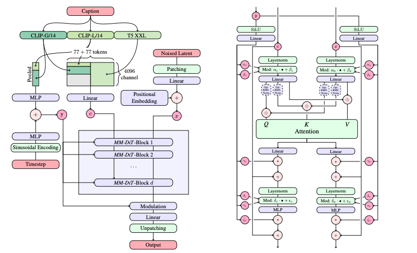
图 16：[14 ] 提出的多模态扩散 Transformer（MM-DiT）架构，图片亦来自 [14 ]。
6.3.2 Meta Movie Gen Video
接下来介绍 Meta 的视频生成器 Movie Gen Video：https://ai.meta.com/research/movie-gen/ 。由于数据是视频而不是图像，数据 x x x R T × C × H × W \mathbb{R}^{T\times C\times H\times W} R T × C × H × W T T T 时间维度 ，也就是帧数。你会看到，视频场景中的许多设计，实际上都是将图像场景中已有的自编码器、扩散 Transformer 等技术，调整为能够处理这一额外时间维度的形式。
Movie Gen Video 使用条件流匹配目标，并采用相同的直线调度函数 α t = t , σ t = 1 − t \alpha_{t}=t,\sigma_{t}=1-t α t = t , σ t = 1 − t 时间自编码器 （TAE）处理新增的时间维度，将原始视频 x t ′ ∈ R T ′ × 3 × H × W x_{t}^{\prime}\in\mathbb{R}^{T^{\prime}\times 3\times H\times W} x t ′ ∈ R T ′ × 3 × H × W x t ∈ R T × C × H × W x_{t}\in\mathbb{R}^{T\times C\times H\times W} x t ∈ R T × C × H × W T ′ T = H ′ H = W ′ W = 8 \tfrac{T^{\prime}}{T}=\tfrac{H^{\prime}}{H}=\tfrac{W^{\prime}}{W}=8 T T ′ = H H ′ = W W ′ = 8 33 ]。为支持长视频，作者提出时间分块方法：将视频切成若干片段，各自编码，再拼接潜表示 [33 ]。模型本身，即 u t θ ( x t ) u_{t}^{\theta}(x_{t}) u t θ ( x t ) x t x_{t} x t 47 ]；ByT5 嵌入，用于关注字符级细节，例如明确要求画面中出现特定文字的提示 [50 ]；以及在图文共享嵌入空间中训练的 MetaCLIP 嵌入 [24 , 33 ]。其最终最大模型具有 300 亿参数 。更全面、深入的介绍可参阅 Movie Gen 技术报告 [33 ]。
7 离散扩散模型：用扩散构建语言模型
前面几节中，我们将流模型与扩散模型作为欧几里得空间 R d \mathbb{R}^{d} R d z ∈ R d z\in\mathbb{R}^{d} z ∈ R d R d \mathbb{R}^{d} R d S S S 离散扩散模型 [5 , 16 ]。但要注意，这里并不存在数学意义上的扩散过程，因为离散状态空间中没有 SDE。我们改用连续时间马尔可夫链（CTMC） ，替代 ODE/SDE。下面将介绍 CTMC 模型，见第 7.1 节 ，以及如何学习它们，见第 7.2 节 ，从而利用流模型与扩散模型的原理构建大语言模型（LLM）。
7.1 连续时间马尔可夫链（CTMC）模型
本节介绍连续时间马尔可夫链。你可以将 CTMC 理解为 SDE 的离散对应物，借助它构建能生成离散状态的神经网络模型。我们还将介绍 CTMC 模型，即利用 CTMC 生成文本等离散序列的神经网络模型。
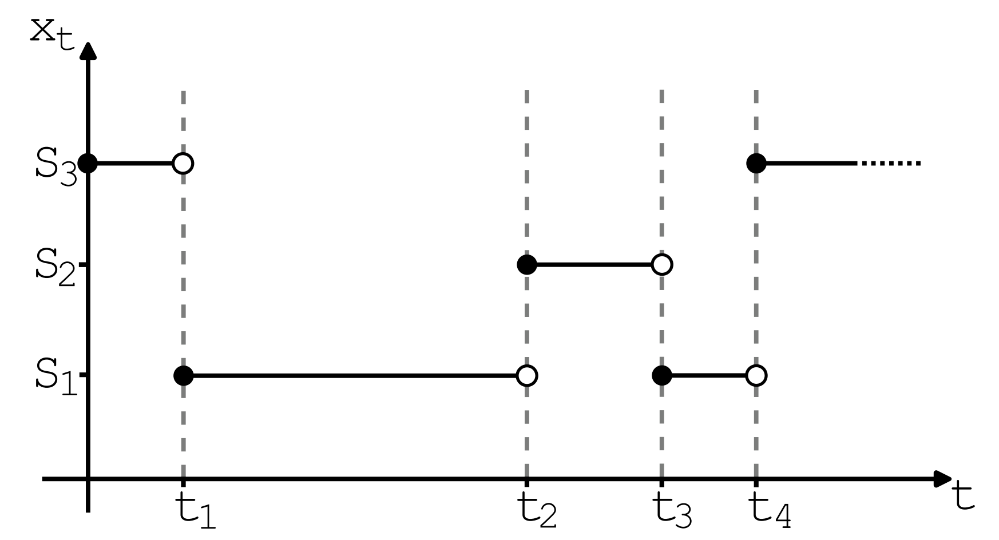
图 17：状态空间为 S = { S 1 , S 2 , S 3 } S=\{S_{1},S_{2},S_{3}\} S = { S 1 , S 2 , S 3 } d = 1 d=1 d = 1 5 ]。
首先描述状态空间 S S S V = { v 1 , ⋯ , v V } \mathcal{V}=\{v_{1},\cdots,v_{V}\} V = { v 1 , ⋯ , v V } S = V d S=\mathcal{V}^{d} S = V d d ∈ N d\in\mathbb{N} d ∈ N V ∈ N V\in\mathbb{N} V ∈ N { v 1 , ⋯ , v V } \{v_{1},\cdots,v_{V}\} { v 1 , ⋯ , v V } S S S d d d { v 1 , ⋯ , v V } \{v_{1},\cdots,v_{V}\} { v 1 , ⋯ , v V } S S S d d d
接下来，设 X t X_{t} X t S S S S S S X : [ 0 , 1 ] → S , t ↦ X t X:[0,1]\to S,t\mapsto X_{t} X : [ 0 , 1 ] → S , t ↦ X t X t X_{t} X t 马尔可夫过程 ，即无记忆的过程。具体而言，满足
p ( X t + h ∣ X t , X t 1 , ⋯ , X t k ) ⏟ 给定现在与过去时，未来的概率 = p ( X t + h ∣ X t ) ⏟ 给定现在时，未来的概率 ( 对所有 0 < h , 0 ≤ t 1 < t 2 < ⋯ < t k < t )
\underbrace{p(X_{t+h}|X_{t},X_{t_{1}},\cdots,X_{t_{k}})}_{\text{给定现在与过去时，未来的概率}}=\underbrace{p(X_{t+h}|X_{t})}_{\text{给定现在时，未来的概率}}\quad(\text{对所有 }0<h,0\leq t_{1}<t_{2}<\cdots<t_{k}<t)
给定现在与过去时，未来的概率 p ( X t + h ∣ X t , X t 1 , ⋯ , X t k ) = 给定现在时，未来的概率 p ( X t + h ∣ X t ) ( 对所有 0 < h , 0 ≤ t 1 < t 2 < ⋯ < t k < t ) 换言之，未来事件的概率只依赖现在，过去不再提供额外信息。虽然 ODE/SDE 不处于离散状态空间中，它们也是马尔可夫过程。这里，X t X_{t} X t 连续时间马尔可夫链（CTMC） 。p t + h ∣ t ( X t + h ∣ X t ) p_{t+h|t}(X_{t+h}|X_{t}) p t + h ∣ t ( X t + h ∣ X t ) 转移概率 ，它与链的初始分布 X 0 ∼ p 0 X_{0}\sim p_{0} X 0 ∼ p 0 p t + h ∣ t ( X t + h ∣ X t ) p_{t+h|t}(X_{t+h}|X_{t}) p t + h ∣ t ( X t + h ∣ X t )
下面推导离散情形中与向量场对应的对象。在离散空间中，我们只能在状态之间跳跃或切换，不能像指定 ODE 那样沿某个方向前进。因此，定义速率矩阵 Q t ( y ∣ x ) Q_{t}(y|x) Q t ( y ∣ x ) x ∈ S x\in S x ∈ S y ∈ S y\in S y ∈ S Q t Q_{t} Q t
Q : S × S × [ 0 , 1 ] → R , ( x , y , t ) ↦ Q t ( y ∣ x ) (84)
Q:S\times S\times[0,1]\to\mathbb{R},\quad(x,y,t)\mapsto Q_{t}(y|x) \qquad\text{(84)}
Q : S × S × [ 0 , 1 ] → R , ( x , y , t ) ↦ Q t ( y ∣ x ) (84) 其中 Q t ( y ∣ x ) Q_{t}(y|x) Q t ( y ∣ x ) x x x y y y
（1）离开当前状态的速率非负： Q t ( y ∣ x ) ≥ 0 只要 x ≠ y (85) （2）留在当前状态的速率等于总离开速率的相反数： Q t ( x ∣ x ) = − ∑ y ≠ x Q t ( y ∣ x ) ，对所有 x (86)
\begin{aligned}
\text{（1）离开当前状态的速率非负：}Q_{t}(y|x)\geq & 0\quad\text{只要 }x\neq y \qquad\text{(85)} \\
\text{（2）留在当前状态的速率等于总离开速率的相反数：}Q_{t}(x|x)= & -\sum\limits_{y\neq x}Q_{t}(y|x)\quad\text{，对所有 }x \qquad\text{(86)}
\end{aligned}
（ 1 ）离开当前状态的速率非负： Q t ( y ∣ x ) ≥ （ 2 ）留在当前状态的速率等于总离开速率的相反数： Q t ( x ∣ x ) = 0 只要 x = y (85) − y = x ∑ Q t ( y ∣ x ) ，对所有 x (86) 这两个条件很直观。第一个条件说明，从 x x x y ≠ x y\neq x y = x 0 0 0 0 0 0 x x x Q t ( x ∣ x ) Q_{t}(x|x) Q t ( x ∣ x ) x x x x x x Q t ( x ∣ x ) ≤ 0 Q_{t}(x|x)\leq 0 Q t ( x ∣ x ) ≤ 0 Q t ( y ∣ x ) Q_{t}(y|x) Q t ( y ∣ x )
现在可以定义与微分方程对应的条件，要求 CTMC“遵循”速率矩阵。基本思想是：X X X Q t Q_{t} Q t
d d h p t + h ∣ t ( X t + h = y ∣ X t = x ) ∣ h = 0 = Q t ( y ∣ x ) 对所有 x , y ∈ S , 0 ≤ t (87)
\frac{\mathrm{d}}{\mathrm{d}h}p_{t+h|t}(X_{t+h}=y|X_{t}=x)_{|h=0}=Q_{t}(y|x)\quad\text{对所有 }x,y\in S,0\leq t \qquad\text{(87)}
d h d p t + h ∣ t ( X t + h = y ∣ X t = x ) ∣ h = 0 = Q t ( y ∣ x ) 对所有 x , y ∈ S , 0 ≤ t (87) 左侧是从 x x x y y y 式 87 直接设置 Q t ( y ∣ x ) Q_{t}(y|x) Q t ( y ∣ x ) h = 0 h=0 h = 0 x x x y ≠ x y\neq x y = x y ≠ x y\neq x y = x p t ∣ t ( y ∣ x ) = 0 p_{t|t}(y|x)=0 p t ∣ t ( y ∣ x ) = 0 y ≠ x y\neq x y = x Q t ( y ∣ x ) ≥ 0 Q_{t}(y|x)\geq 0 Q t ( y ∣ x ) ≥ 0 式 85 的第一个条件。此外，
∑ y ≠ x Q t ( y ∣ x ) = ∑ y ≠ x d d h p ( X t + h = y ∣ X t = x ) ∣ h = 0 = d d h ∑ y ≠ x p ( X t + h = y ∣ X t = x ) ∣ h = 0 = d d h ( 1 − p ( X t + h = x ∣ X t = x ) ) = − Q t ( x ∣ x )
\begin{aligned}
\sum\limits_{y\neq x}Q_{t}(y|x)=\sum\limits_{y\neq x}\frac{\mathrm{d}}{\mathrm{d}h}p(X_{t+h}=y|X_{t}=x)_{|h=0}=\frac{\mathrm{d}}{\mathrm{d}h}\sum\limits_{y\neq x}p(X_{t+h}=y|X_{t}=x)_{|h=0}= & \frac{\mathrm{d}}{\mathrm{d}h}(1-p(X_{t+h}=x|X_{t}=x)) \\
= & -Q_{t}(x|x)
\end{aligned}
y = x ∑ Q t ( y ∣ x ) = y = x ∑ d h d p ( X t + h = y ∣ X t = x ) ∣ h = 0 = d h d y = x ∑ p ( X t + h = y ∣ X t = x ) ∣ h = 0 = = d h d ( 1 − p ( X t + h = x ∣ X t = x )) − Q t ( x ∣ x ) 这里用到了所有概率之和为 1 1 1 式 86 。因此，每个 CTMC 至少有一个满足式 87 的速率矩阵。反过来，若指定 Q t Q_{t} Q t
定理 33（CTMC 的存在性与唯一性）
对任意速率矩阵 Q t Q_{t} Q t t t t X t X_{t} X t p t + h ∣ t ( y ∣ x ) p_{t+h|t}(y|x) p t + h ∣ t ( y ∣ x ) 式 87 成立。
附录 C 为感兴趣的读者提供了完整证明。这个定理的要点是：在机器学习中，可以先构造速率矩阵 Q t Q_{t} Q t Q t Q_{t} Q t
例 34（等跳跃速率的双状态 CTMC）
设 S = { a , b } S=\{a,b\} S = { a , b } ( X t ) t ≥ 0 (X_{t})_{t\geq 0} ( X t ) t ≥ 0 λ > 0 \lambda>0 λ > 0
Q = a b a − λ λ b λ − λ .
\begin{aligned}
Q=\begin{array}{c|cc}&a&b\\
\hline a&-\lambda&\lambda\\
b&\lambda&-\lambda\end{array}.
\end{aligned}
Q = a b a − λ λ b λ − λ . 经过时间增量 h ≥ 0 h\geq 0 h ≥ 0 t t t
( p ( X t + h = a ∣ X t = a ) p ( X t + h = a ∣ X t = b ) p ( X t + h = b ∣ X t = a ) p ( X t + h = b ∣ X t = b ) ) = 1 2 ( 1 + e − 2 λ h 1 − e − 2 λ h 1 − e − 2 λ h 1 + e − 2 λ h ) .
\begin{aligned}
\begin{pmatrix}p(X_{t+h}=a|X_{t}=a)&p(X_{t+h}=a|X_{t}=b)\\
p(X_{t+h}=b|X_{t}=a)&p(X_{t+h}=b|X_{t}=b)\end{pmatrix}=\frac{1}{2}\begin{pmatrix}1+e^{-2\lambda h}&1-e^{-2\lambda h}\\
1-e^{-2\lambda h}&1+e^{-2\lambda h}\end{pmatrix}.
\end{aligned}
( p ( X t + h = a ∣ X t = a ) p ( X t + h = b ∣ X t = a ) p ( X t + h = a ∣ X t = b ) p ( X t + h = b ∣ X t = b ) ) = 2 1 ( 1 + e − 2 λh 1 − e − 2 λh 1 − e − 2 λh 1 + e − 2 λh ) . 可以手工验证式 87 ，即这些转移概率确实与该速率矩阵对应。实际上，这些速率很直观：链以瞬时速率 λ \lambda λ e − 2 λ h e^{-2\lambda h} e − 2 λh h → ∞ h\to\infty h → ∞
P ( h ) → ( 1 2 1 2 1 2 1 2 ) ,
\begin{aligned}
P(h)\to\begin{pmatrix}\frac{1}{2}&\frac{1}{2}\\
\frac{1}{2}&\frac{1}{2}\end{pmatrix},
\end{aligned}
P ( h ) → ( 2 1 2 1 2 1 2 1 ) , 因而链忘记了起点，以概率 1 / 2 1/2 1/2 a a a b b b λ > 0 \lambda>0 λ > 0
**CTMC 的模拟。**下面考虑如何模拟 CTMC 轨迹。设 h > 0 h>0 h > 0 p i n i t p_{\rm{init}} p init S S S p i n i t = Unif S p_{\rm{init}}=\text{Unif}_{S} p init = Unif S S S S X 0 ∼ p i n i t X_{0}\sim p_{\rm{init}} X 0 ∼ p init
X t + h ∼ p t + h ∣ t ( ⋅ ∣ X t )
\begin{aligned}
X_{t+h}\sim & p_{t+h|t}(\cdot|X_{t})
\end{aligned}
X t + h ∼ p t + h ∣ t ( ⋅ ∣ X t ) 若已知 p t + h ∣ t ( ⋅ ∣ X t ) p_{t+h|t}(\cdot|X_{t}) p t + h ∣ t ( ⋅ ∣ X t ) Q t Q_{t} Q t 式 87 ，有
p t + h ∣ t ( X t + h = y ∣ X t = x ) = p t ∣ t ( X t = y ∣ X t = x ) + h Q t ( y ∣ x ) + R t ( h ) = 1 y = x + h Q t ( y ∣ x ) + R t ( h )
p_{t+h|t}(X_{t+h}=y|X_{t}=x)=p_{t|t}(X_{t}=y|X_{t}=x)+hQ_{t}(y|x)+R_{t}(h)=1_{y=x}+hQ_{t}(y|x)+R_{t}(h)
p t + h ∣ t ( X t + h = y ∣ X t = x ) = p t ∣ t ( X t = y ∣ X t = x ) + h Q t ( y ∣ x ) + R t ( h ) = 1 y = x + h Q t ( y ∣ x ) + R t ( h ) 其中 R t ( h ) R_{t}(h) R t ( h ) h h h h h h
p t + h ∣ t ( X t + h = y ∣ X t = x ) ≈ 1 y = x + h Q t ( y ∣ x ) = : p ~ t + h ∣ t ( y ∣ x )
p_{t+h|t}(X_{t+h}=y|X_{t}=x)\approx 1_{y=x}+hQ_{t}(y|x)=:\tilde{p}_{t+h|t}(y|x)
p t + h ∣ t ( X t + h = y ∣ X t = x ) ≈ 1 y = x + h Q t ( y ∣ x ) =: p ~ t + h ∣ t ( y ∣ x ) 根据速率矩阵的约束，可以验证：当 h h h p ~ t + h ∣ t ( y ∣ x ) \tilde{p}_{t+h|t}(y|x) p ~ t + h ∣ t ( y ∣ x )
X t + h ∼ p ~ t + h ∣ t ( ⋅ ∣ x ) = ( 1 y = x + h Q t ( y ∣ x ) ) y ∈ S (88)
X_{t+h}\sim\tilde{p}_{t+h|t}(\cdot|x)=(1_{y=x}+hQ_{t}(y|x))_{y\in S} \qquad\text{(88)}
X t + h ∼ p ~ t + h ∣ t ( ⋅ ∣ x ) = ( 1 y = x + h Q t ( y ∣ x ) ) y ∈ S (88) 由于这只是离散分布，使用标准方法就能方便地采样。这便是一种简单的 CTMC 模拟方法。
CTMC 模型。
接下来说明如何用神经网络参数化 CTMC。CTMC 模型 ，也称离散扩散模型 ，由 S S S p i n i t p_{\rm{init}} p init θ \theta θ Q t θ Q_{t}^{\theta} Q t θ x ∈ S x\in S x ∈ S
x ↦ { Q t θ ( y ∣ x ) } y ∈ S
x\mapsto\{Q_{t}^{\theta}(y|x)\}_{y\in S}
x ↦ { Q t θ ( y ∣ x ) } y ∈ S 要求模型返回一整列，是因为模拟 CTMC、也就是采样下一状态时，需要这一列，见式 88 。
上述模型的一个难点是空间 S S S ∣ S ∣ = V d |S|=V^{d} ∣ S ∣ = V d V V V d d d { Q t θ ( y ∣ x ) } y ∈ S \{Q_{t}^{\theta}(y|x)\}_{y\in S} { Q t θ ( y ∣ x ) } y ∈ S 图 18 ，这实际上是一种稀疏性约束。具体地，因子化 CTMC 模型 是满足以下条件的 CTMC 模型 Q t θ Q_{t}^{\theta} Q t θ y = ( y 1 , ⋯ , y d ) , x = ( x 1 , ⋯ , x d ) ∈ S = V d y=(y_{1},\cdots,y_{d}),x=(x_{1},\cdots,x_{d})\in S=\mathcal{V}^{d} y = ( y 1 , ⋯ , y d ) , x = ( x 1 , ⋯ , x d ) ∈ S = V d
Q t θ ( y ∣ x ) = 0 只要 y i ≠ x i 在超过一个位置上满足 i
Q_{t}^{\theta}(y|x)=0\quad\text{只要 }y_{i}\neq x_{i}\text{ 在超过一个位置上满足 }i
Q t θ ( y ∣ x ) = 0 只要 y i = x i 在超过一个位置上满足 i 将与 x x x y y y x x x 邻居 N ( x ) N(x) N ( x )
x ↦ { Q t θ ( y ∣ x ) } y ∈ N ( x ) = ( Q t θ ( v 1 , 1 ∣ x ) ⋯ Q t θ ( v V , 1 ∣ x ) ⋯ Q t θ ( v 1 , d ∣ x ) ⋯ Q t θ ( v V , d ∣ x ) )
\begin{aligned}
x\mapsto\{Q_{t}^{\theta}(y|x)\}_{y\in N(x)}= & \begin{pmatrix}Q_{t}^{\theta}(v_{1},1|x)&\cdots Q_{t}^{\theta}(v_{V},1|x)\\
\cdots\\
Q_{t}^{\theta}(v_{1},d|x)&\cdots Q_{t}^{\theta}(v_{V},d|x)\\
\end{pmatrix}
\end{aligned}
x ↦ { Q t θ ( y ∣ x ) } y ∈ N ( x ) = Q t θ ( v 1 , 1∣ x ) ⋯ Q t θ ( v 1 , d ∣ x ) ⋯ Q t θ ( v V , 1∣ x ) ⋯ Q t θ ( v V , d ∣ x ) 此时，Q t ( y ∣ x ) = Q t θ ( v i , j ∣ x ) Q_{t}(y|x)=Q_{t}^{\theta}(v_{i},j|x) Q t ( y ∣ x ) = Q t θ ( v i , j ∣ x ) x = ( x 1 , ⋯ , x d ) x=(x_{1},\cdots,x_{d}) x = ( x 1 , ⋯ , x d ) x x x j j j v i v_{i} v i y = ( x 1 , ⋯ , x j − 1 , v i , x j + 1 , ⋯ , x d ) y=(x_{1},\cdots,x_{j-1},v_{i},x_{j+1},\cdots,x_{d}) y = ( x 1 , ⋯ , x j − 1 , v i , x j + 1 , ⋯ , x d ) i = 1 , ⋯ , d i=1,\cdots,d i = 1 , ⋯ , d
Q t θ ( v , i ∣ x ) ≥ 0 ，若 v ≠ x i , Q t ( x i , i ∣ x ) = − ∑ v ≠ x i Q t θ ( v , i ∣ x )
Q_{t}^{\theta}(v,i|x)\geq 0\text{，若 }v\neq x_{i},\quad Q_{t}(x_{i},i|x)=-\sum\limits_{v\neq x_{i}}Q_{t}^{\theta}(v,i|x)
Q t θ ( v , i ∣ x ) ≥ 0 ，若 v = x i , Q t ( x i , i ∣ x ) = − v = x i ∑ Q t θ ( v , i ∣ x ) 这些条件很容易施加到神经网络输出上，例如可使用序列长度为 d d d V V V d × V d\times V d × V
图 18：因子化 CTMC 模型示意图。只有起点与终点相差一个维度时，此处 d = 2 d=2 d = 2 Q t ( y ∣ x ) ≠ 0 Q_{t}(y|x)\neq 0 Q t ( y ∣ x ) = 0 26 ]。
CTMC 模型的模拟。
从 CTMC 模型采样时，先采样 X 0 ∼ p i n i t X_{0}\sim p_{\rm{init}} X 0 ∼ p init 式 88 采样下一状态。算法 7 给出了具体方法。对于因子化 CTMC 模型，可以使用逐 token 并行的欧拉近似：在小时间步 h > 0 h>0 h > 0 h h h O ( h 2 ) O(h^{2}) O ( h 2 )
算法 7：从因子化 CTMC 模型中采样
步骤
操作
0
因子化速率网络 Q t θ Q_{t}^{\theta} Q t θ p i n i t p_{\rm{init}} p init n n n
1
令 t ← 0 t\leftarrow 0 t ← 0 h ← 1 n h\leftarrow\frac{1}{n} h ← n 1
2
采样 X 0 ∼ p i n i t X_{0}\sim p_{\rm{init}} X 0 ∼ p init X 0 = ( X 0 ( 1 ) , … , X 0 ( d ) ) ∈ V d X_{0}=(X_{0}^{(1)},\dots,X_{0}^{(d)})\in\mathcal{V}^{d} X 0 = ( X 0 ( 1 ) , … , X 0 ( d ) ) ∈ V d
3
对于 i = 1 , … , n i=1,\dots,n i = 1 , … , n 执行
4
计算因子化跳跃速率 { q j ( v ) } j = 1.. d , v ∈ V ← Q t θ ( ⋅ ∣ X t ) \{q_{j}(v)\}_{j=1..d,\ v\in\mathcal{V}}\leftarrow Q_{t}^{\theta}(\cdot\mid X_{t}) { q j ( v ) } j = 1.. d , v ∈ V ← Q t θ ( ⋅ ∣ X t )
5
对于 j = 1 , … , d j=1,\dots,d j = 1 , … , d 并行执行
6
x ← X t ( j ) x\leftarrow X_{t}^{(j)} x ← X t ( j ) j j j
7
按 下方公式 1 定义逐位置欧拉转移概率 p ~ j , t ( ⋅ ∣ X t ( j ) = x ) \tilde{p}_{j,t}(\cdot\mid X_{t}^{(j)}=x) p ~ j , t ( ⋅ ∣ X t ( j ) = x )
8
采样 X t + h ( j ) ∼ C a t e g o r i c a l ( { p ~ j , t ( v ∣ x ) } v ∈ V ) X_{t+h}^{(j)}\sim\mathrm{Categorical}\!\left(\{\tilde{p}_{j,t}(v\mid x)\}_{v\in\mathcal{V}}\right) X t + h ( j ) ∼ Categorical ( { p ~ j , t ( v ∣ x ) } v ∈ V )
9
结束循环
10
令 t ← t + h t\leftarrow t+h t ← t + h
11
结束循环
12
返回 X 1 X_{1} X 1
算法 7，公式 1。
p ~ j , t ( v ∣ x ) = { h q j ( v ) , v ≠ x , 1 − h ∑ v ′ ∈ V ∖ { x } q j ( v ′ ) , v = x .
\begin{aligned}
\tilde{p}_{j,t}(v\mid x)\;=\;\begin{cases}h\,q_{j}(v),&v\neq x,\\[4.0pt]
1-h\sum\limits_{v^{\prime}\in\mathcal{V}\setminus\{x\}}q_{j}(v^{\prime}),&v=x.\end{cases}
\end{aligned}
p ~ j , t ( v ∣ x ) = ⎩ ⎨ ⎧ h q j ( v ) , 1 − h v ′ ∈ V ∖ { x } ∑ q j ( v ′ ) , v = x , v = x .
7.2 CTMC 模型的训练
下面讨论如何学习 CTMC 模型，其原理与流匹配相同：(1) 构造一条在噪声与数据之间插值的概率路径；(2) 推导条件速率矩阵与边缘速率矩阵；(3) 以免模拟方式学习边缘速率矩阵。下面逐步介绍。
本节的数据分布 p d a t a p_{\rm{data}} p data S S S p d a t a : S → R ≥ 0 , z ↦ p d a t a ( z ) p_{\rm{data}}:S\to\mathbb{R}_{\geq 0},z\mapsto p_{\rm{data}}(z) p data : S → R ≥ 0 , z ↦ p data ( z ) ∑ z ∈ S p d a t a ( z ) = 1 \sum_{z\in S}p_{\rm{data}}(z)=1 ∑ z ∈ S p data ( z ) = 1 p d a t a p_{\rm{data}} p data z ∼ p d a t a z\sim p_{\rm{data}} z ∼ p data z ∼ p d a t a z\sim p_{\rm{data}} z ∼ p data Q t θ Q_{t}^{\theta} Q t θ
X 0 ∼ p i n i t , X t ，其速率矩阵为 Q t θ ⇒ X 1 ∼ p d a t a
X_{0}\sim p_{\rm{init}},\quad X_{t}\text{，其速率矩阵为 }Q_{t}^{\theta}\quad\Rightarrow\quad X_{1}\sim p_{\rm{data}}
X 0 ∼ p init , X t ，其速率矩阵为 Q t θ ⇒ X 1 ∼ p data 你可能已经发现，这与欧几里得空间 R d \mathbb{R}^{d} R d 第 2 节 和第 3 节 ，只是用 CTMC 模型替代了流模型或扩散模型。
7.2.1 条件概率路径与边缘概率路径
定义函数 δ z ( x ) \delta_{z}(x) δ z ( x ) x ≠ z x\neq z x = z δ z ( x ) = 0 \delta_{z}(x)=0 δ z ( x ) = 0 x = z x=z x = z δ z ( x ) = 1 \delta_{z}(x)=1 δ z ( x ) = 1 条件概率路径 是对 x , z ∈ S x,z\in S x , z ∈ S 0 ≤ t ≤ 1 0\leq t\leq 1 0 ≤ t ≤ 1 p t ( x ∣ z ) p_{t}(x|z) p t ( x ∣ z )
p 0 ( ⋅ ∣ z ) = p i n i t , p 1 ( ⋅ ∣ z ) = δ z
p_{0}(\cdot|z)=p_{\rm{init}},\quad p_{1}(\cdot|z)=\delta_{z}
p 0 ( ⋅ ∣ z ) = p init , p 1 ( ⋅ ∣ z ) = δ z 与欧几里得空间的情形类似，离散条件概率路径在一个不依赖 z z z z z z 边缘概率路径 定义为
p t ( x ) = ∑ z ∈ S p t ( x ∣ z ) p d a t a ( z )
p_{t}(x)=\sum\limits_{z\in S}p_{t}(x|z)p_{\rm{data}}(z)
p t ( x ) = z ∈ S ∑ p t ( x ∣ z ) p data ( z ) 容易验证，边缘概率路径在“噪声”与数据之间插值：
p 0 = p i n i t , p 1 = p d a t a (89)
p_{0}=p_{\rm{init}},\quad p_{1}=p_{\rm{data}} \qquad\text{(89)}
p 0 = p init , p 1 = p data (89)
例 35（因子化混合路径：逐 token 独立加噪）
设 S = V d S=\mathcal{V}^{d} S = V d p i n i t ( x ) = ∏ j = 1 d p i n i t ( j ) ( x j ) p_{\rm{init}}(x)=\prod_{j=1}^{d}p_{\rm{init}}^{(j)}(x_{j}) p init ( x ) = ∏ j = 1 d p init ( j ) ( x j ) 调度函数 0 ≤ κ t ≤ 1 0\leq\kappa_{t}\leq 1 0 ≤ κ t ≤ 1 κ 0 = 0 , κ 1 = 1 \kappa_{0}=0,\kappa_{1}=1 κ 0 = 0 , κ 1 = 1 d d t κ ˙ t ≥ 0 \frac{\mathrm{d}}{\mathrm{d}t}\dot{\kappa}_{t}\geq 0 d t d κ ˙ t ≥ 0
p t ( x ∣ z ) = ∏ j = 1 d [ ( 1 − κ t ) p i n i t ( j ) ( x j ) + κ t δ z j ( x j ) ] .
\begin{aligned}
p_{t}(x|z) & =\prod_{j=1}^{d}\Big[(1-\kappa_{t})\,p_{\rm{init}}^{(j)}(x_{j})+\kappa_{t}\,\delta_{z_{j}}(x_{j})\Big].
\end{aligned}
p t ( x ∣ z ) = j = 1 ∏ d [ ( 1 − κ t ) p init ( j ) ( x j ) + κ t δ z j ( x j ) ] . 等价地，可以先采样独立同分布的掩码 m j = 0 , 1 m_{j}=0,1 m j = 0 , 1 ξ j ∼ p i n i t ( j ) \xi_{j}\sim p_{\rm{init}}^{(j)} ξ j ∼ p init ( j ) x ∼ p t ( ⋅ ∣ z ) x\sim p_{t}(\cdot\mid z) x ∼ p t ( ⋅ ∣ z )
m j ∼ B e r n o u l l i ( κ t ) , ξ j ∼ p i n i t ( j ) x j = m j z j + ( 1 − m j ) ξ j , j = 1 , … , d x = ( x 1 , ⋯ , x d )
\begin{aligned}
m_{j} & \sim\mathrm{Bernoulli}(\kappa_{t}),\quad\xi_{j}\sim p_{\rm{init}}^{(j)} \\
x_{j} & =m_{j}\,z_{j}+(1-m_{j})\,\xi_{j},\qquad j=1,\dots,d \\
x & =(x_{1},\cdots,x_{d})
\end{aligned}
m j x j x ∼ Bernoulli ( κ t ) , ξ j ∼ p init ( j ) = m j z j + ( 1 − m j ) ξ j , j = 1 , … , d = ( x 1 , ⋯ , x d ) 上述路径称为因子化混合路径 。该过程对序列中每个位置独立地以概率 1 − κ t 1-\kappa_{t} 1 − κ t j j j t = 0 t=0 t = 0 1 − κ t = 1 1-\kappa_{t}=1 1 − κ t = 1 t = 1 t=1 t = 1 1 − κ t = 0 1-\kappa_{t}=0 1 − κ t = 0 例 8 的高斯概率路径相似，都是按调度函数 κ t \kappa_{t} κ t
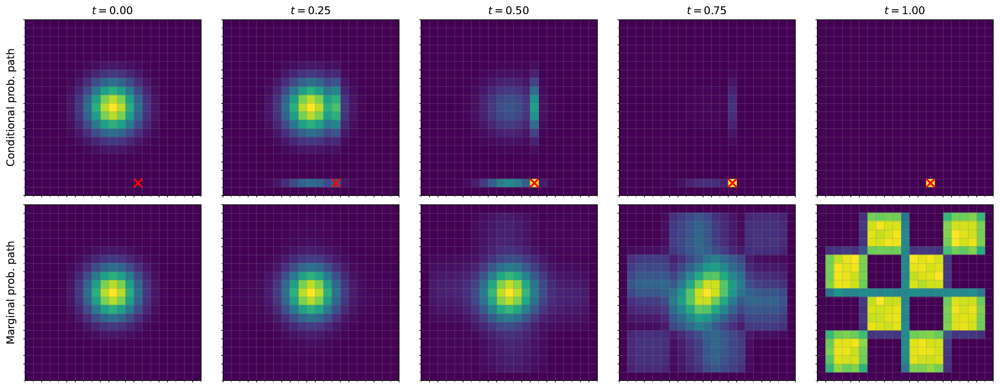
图 19：d = 2 d=2 d = 2 图 5 的异同：这里的概率路径相当于“瞬移”，即降低初始分布的权重，同时提高终点分布的权重。
7.2.2 条件速率矩阵与边缘速率矩阵
下一步构造离散流匹配的训练目标。首先构造条件速率矩阵，它对应于连续流匹配中的条件向量场。对每个数据点 z ∈ S z\in S z ∈ S Q t z ( y ∣ x ) Q_{t}^{z}(y|x) Q t z ( y ∣ x ) 条件速率矩阵 ：
X 0 ∼ p i n i t , X t ，其速率矩阵为 Q t z ⇒ X t ∼ p t ( ⋅ ∣ z )
X_{0}\sim p_{\rm{init}},\quad X_{t}\text{，其速率矩阵为 }Q_{t}^{z}\quad\Rightarrow\quad X_{t}\sim p_{t}(\cdot|z)
X 0 ∼ p init , X t ，其速率矩阵为 Q t z ⇒ X t ∼ p t ( ⋅ ∣ z ) 换言之，条件速率矩阵要求其 CTMC“遵循”条件概率路径。它是构造边缘速率矩阵的基础，后者将遵循边缘概率路径：
定理 36（离散边缘化技巧）
定义如下的边缘速率矩阵
Q t ( y ∣ x ) = ∑ z ∈ S Q t z ( y ∣ x ) p t ( x ∣ z ) p d a t a ( z ) p t ( x ) = ∑ z ∈ S Q t z ( y ∣ x ) p 1 ∣ t ( z ∣ x ) 其中 p 1 ∣ t ( z ∣ x ) : = p t ( x ∣ z ) p d a t a ( z ) p t ( x ) (90)
Q_{t}(y|x)=\sum\limits_{z\in S}Q_{t}^{z}(y|x)\frac{p_{t}(x|z)p_{\rm{data}}(z)}{p_{t}(x)}=\sum\limits_{z\in S}Q_{t}^{z}(y|x)p_{1|t}(z|x)\quad\text{其中 }p_{1|t}(z|x):=\frac{p_{t}(x|z)p_{\rm{data}}(z)}{p_{t}(x)} \qquad\text{(90)}
Q t ( y ∣ x ) = z ∈ S ∑ Q t z ( y ∣ x ) p t ( x ) p t ( x ∣ z ) p data ( z ) = z ∈ S ∑ Q t z ( y ∣ x ) p 1∣ t ( z ∣ x ) 其中 p 1∣ t ( z ∣ x ) := p t ( x ) p t ( x ∣ z ) p data ( z ) (90) 是有效的速率矩阵，并满足：
X 0 ∼ p i n i t , X t ，其速率矩阵为 Q t ⇒ X t ∼ p t
X_{0}\sim p_{\rm{init}},\quad X_{t}\text{，其速率矩阵为 }Q_{t}\quad\Rightarrow\quad X_{t}\sim p_{t}
X 0 ∼ p init , X t ，其速率矩阵为 Q t ⇒ X t ∼ p t 特别地，由式 89 可得 X 1 ∼ p d a t a X_{1}\sim p_{\rm{data}} X 1 ∼ p data
为证明这一结论，需要 CTMC 的一个基本方程，即 Kolmogorov 前向方程：
命题 2（Kolmogorov 前向方程）
设对每个 0 ≤ t ≤ 1 0\leq t\leq 1 0 ≤ t ≤ 1 p t p_{t} p t S S S X t X_{t} X t Q t Q_{t} Q t p 0 p_{0} p 0 0 ≤ t ≤ 1 0\leq t\leq 1 0 ≤ t ≤ 1 X t ∼ p t X_{t}\sim p_{t} X t ∼ p t
d d t p t ( x ) = ∑ y ∈ S Q t ( x ∣ y ) p t ( y )
\frac{\mathrm{d}}{\mathrm{d}t}p_{t}(x)=\sum\limits_{y\in S}Q_{t}(x|y)p_{t}(y)
d t d p t ( x ) = y ∈ S ∑ Q t ( x ∣ y ) p t ( y ) KFE 的证明。
先证明必要性。假设 p t ( x ) p_{t}(x) p t ( x ) 0 ≤ t ≤ 1 0\leq t\leq 1 0 ≤ t ≤ 1 X t ∼ p t X_{t}\sim p_{t} X t ∼ p t
d d t p t ( x ) = ( i ) d d h ∣ h = 0 p t + h ( x ) = ( i i ) d d h ∣ h = 0 ∑ y p t + h ∣ t ( x ∣ y ) p t ( y ) = ( i i i ) ∑ y d d h ∣ h = 0 p t + h ∣ t ( x ∣ y ) p t ( y ) = ( i v ) ∑ y Q t ( x ∣ y ) p t ( y )
\begin{aligned}
\frac{\mathrm{d}}{\mathrm{d}t}p_{t}(x) & \overset{(i)}{=}\frac{\mathrm{d}}{\mathrm{d}h}_{|h=0}p_{t+h}(x) \\
\overset{(ii)}{=}\frac{\mathrm{d}}{\mathrm{d}h}_{|h=0}\sum\limits_{y}p_{t+h|t}(x|y)p_{t}(y) \\
\overset{(iii)}{=}\sum\limits_{y}\frac{\mathrm{d}}{\mathrm{d}h}_{|h=0}p_{t+h|t}(x|y)p_{t}(y) \\
\overset{(iv)}{=}\sum\limits_{y}Q_{t}(x|y)p_{t}(y)
\end{aligned}
d t d p t ( x ) = ( ii ) d h d ∣ h = 0 y ∑ p t + h ∣ t ( x ∣ y ) p t ( y ) = ( iii ) y ∑ d h d ∣ h = 0 p t + h ∣ t ( x ∣ y ) p t ( y ) = ( i v ) y ∑ Q t ( x ∣ y ) p t ( y ) = ( i ) d h d ∣ h = 0 p t + h ( x ) 其中，步骤 ( i ) (i) ( i ) ( i i ) (ii) ( ii ) ( i i i ) (iii) ( iii ) ( i v ) (iv) ( i v ) 式 87 。
接下来证明充分性，将 KFE 写为矩阵形式：
d d t p t = Q t p t
\frac{\mathrm{d}}{\mathrm{d}t}p_{t}=Q_{t}p_{t}
d t d p t = Q t p t 此式中，将 p t = ( p t ( x ) ) x ∈ S p_{t}=(p_{t}(x))_{x\in S} p t = ( p t ( x ) ) x ∈ S Q t = ( Q t ( y ∣ x ) ) x , y ∈ S Q_{t}=(Q_{t}(y|x))_{x,y\in S} Q t = ( Q t ( y ∣ x ) ) x , y ∈ S R S \mathbb{R}^{S} R S p 0 p_{0} p 0 q t q_{t} q t 定理 3 ，可得 q t = p t q_{t}=p_{t} q t = p t
定理 36 的证明。
利用 KFE，只需证明定理中定义的边缘速率矩阵，见式 90 ，满足 KFE：
d d t p t ( x ) = ( i ) d d t ∑ z ∈ S p t ( x ∣ z ) p d a t a ( z ) = ( i i ) ∑ z ∈ S d d t p t ( x ∣ z ) p d a t a ( z ) = ( i i i ) ∑ z ∈ S [ ∑ y ∈ S Q t z ( x ∣ y ) p t ( y ∣ z ) ] p d a t a ( z ) = ( i v ) ∑ y ∈ S p t ( y ) [ ∑ z ∈ S Q t z ( x ∣ y ) p t ( y ∣ z ) p d a t a ( z ) p t ( y ) ] = ( v ) ∑ y ∈ S p t ( y ) Q t ( x ∣ y )
\begin{aligned}
\frac{\mathrm{d}}{\mathrm{d}t}p_{t}(x)\overset{(i)}{=} & \frac{\mathrm{d}}{\mathrm{d}t}\sum\limits_{z\in S}p_{t}(x|z)p_{\rm{data}}(z) \\
\overset{(ii)}{=} & \sum\limits_{z\in S}\frac{\mathrm{d}}{\mathrm{d}t}p_{t}(x|z)p_{\rm{data}}(z) \\
\overset{(iii)}{=} & \sum\limits_{z\in S}\left[\sum\limits_{y\in S}Q_{t}^{z}(x|y)p_{t}(y|z)\right]p_{\rm{data}}(z) \\
\overset{(iv)}{=} & \sum\limits_{y\in S}p_{t}(y)\left[\sum\limits_{z\in S}Q_{t}^{z}(x|y)\frac{p_{t}(y|z)p_{\rm{data}}(z)}{p_{t}(y)}\right] \\
\overset{(v)}{=} & \sum\limits_{y\in S}p_{t}(y)Q_{t}(x|y)
\end{aligned}
d t d p t ( x ) = ( i ) = ( ii ) = ( iii ) = ( i v ) = ( v ) d t d z ∈ S ∑ p t ( x ∣ z ) p data ( z ) z ∈ S ∑ d t d p t ( x ∣ z ) p data ( z ) z ∈ S ∑ y ∈ S ∑ Q t z ( x ∣ y ) p t ( y ∣ z ) p data ( z ) y ∈ S ∑ p t ( y ) [ z ∈ S ∑ Q t z ( x ∣ y ) p t ( y ) p t ( y ∣ z ) p data ( z ) ] y ∈ S ∑ p t ( y ) Q t ( x ∣ y ) 其中 ( i ) (i) ( i ) ( i i ) (ii) ( ii ) ( i i i ) (iii) ( iii ) ( i v ) (iv) ( i v ) p t ( y ) p_{t}(y) p t ( y ) ( v ) (v) ( v ) Q t ( y ∣ x ) Q_{t}(y|x) Q t ( y ∣ x ) 命题 2 即得结论。∎
下面为因子化混合路径推导一个具体的条件速率矩阵。
例 37（因子化混合路径的条件速率矩阵）
令 d d t κ t = κ ˙ t \frac{\mathrm{d}}{\mathrm{d}t}\kappa_{t}=\dot{\kappa}_{t} d t d κ t = κ ˙ t
Q t z ( y ∣ x ) = ( Q t z ( v i , j ∣ x j ) ) v i , j Q t z ( v i , j ∣ x j ) = κ ˙ t 1 − κ t ( δ z j ( v i ) − δ x j ( v i ) ) = κ ˙ t 1 − κ t { 0 若 x j = z j 1 ，若 v i = z j , x j ≠ z j 0 ，若 v i ≠ z j , x j ≠ z j − 1 ，若 v i = x j , x j ≠ z j
\begin{aligned}
Q_{t}^{z}(y|x) & =(Q_{t}^{z}(v_{i},j|x_{j}))_{v_{i},j} \\
Q_{t}^{z}(v_{i},j|x_{j}) & =\frac{\dot{\kappa}_{t}}{1-\kappa_{t}}(\delta_{z_{j}}(v_{i})-\delta_{x_{j}}(v_{i})) \\
= & \frac{\dot{\kappa}_{t}}{1-\kappa_{t}}\begin{cases}0&\text{若 }x_{j}=z_{j}\\
1&\text{，若 }v_{i}=z_{j},x_{j}\neq z_{j}\\
0&\text{，若 }v_{i}\neq z_{j},x_{j}\neq z_{j}\\
-1&\text{，若 }v_{i}=x_{j},x_{j}\neq z_{j}\end{cases}
\end{aligned}
Q t z ( y ∣ x ) Q t z ( v i , j ∣ x j ) = = ( Q t z ( v i , j ∣ x j ) ) v i , j = 1 − κ t κ ˙ t ( δ z j ( v i ) − δ x j ( v i )) 1 − κ t κ ˙ t ⎩ ⎨ ⎧ 0 1 0 − 1 若 x j = z j ，若 v i = z j , x j = z j ，若 v i = z j , x j = z j ，若 v i = x j , x j = z j 这个速率矩阵十分简单：它只允许跳向 z j z^{j} z j j j j z = ( z 1 , ⋯ , z d ) z=(z_{1},\cdots,z_{d}) z = ( z 1 , ⋯ , z d ) z j z^{j} z j
证明。
因子化混合路径可完全分解为独立分量，所提出的条件速率矩阵也一样。因此，不失一般性，可以假设 d = 1 d=1 d = 1
d d t p t ( x ∣ z ) = ( i ) d d t [ ( 1 − κ t ) p i n i t ( x ) + κ t δ z ( x ) ] = ( i i ) κ ˙ t δ z ( x ) − κ ˙ t p i n i t ( x ) = ( i i i ) κ ˙ t 1 − κ t ( δ z ( x ) − [ ( 1 − κ t ) p i n i t ( x ) + κ t δ z ( x ) ] ) = ( i v ) κ ˙ t 1 − κ t ( δ z ( x ) − p t ( x ∣ z ) ) = ( v ) κ ˙ t 1 − κ t δ z ( x ) ( 1 − p t ( x ∣ z ) ) + κ ˙ t 1 − κ t ( δ z ( x ) − 1 ) p t ( x ∣ z ) = ( v i ) ∑ y ≠ x κ ˙ t 1 − κ t δ z ( x ) p t ( y ∣ z ) + κ ˙ t 1 − κ t ( δ z ( x ) − 1 ) p t ( x ∣ z ) = ( v i i ) ∑ y ≠ x Q t z ( x ∣ y ) p t ( y ∣ z ) + Q t z ( x ∣ x ) p t ( x ∣ z ) = ( v i i i ) ∑ y ∈ S Q t z ( x ∣ y ) p t ( y ∣ z )
\begin{aligned}
\frac{\mathrm{d}}{\mathrm{d}t}p_{t}(x|z)\overset{(i)}{=} & \frac{\mathrm{d}}{\mathrm{d}t}\left[(1-\kappa_{t})p_{\rm{init}}(x)+\kappa_{t}\delta_{z}(x)\right] \\
\overset{(ii)}{=} & \dot{\kappa}_{t}\delta_{z}(x)-\dot{\kappa}_{t}p_{\rm{init}}(x) \\
\overset{(iii)}{=} & \frac{\dot{\kappa}_{t}}{1-\kappa_{t}}(\delta_{z}(x)-[(1-\kappa_{t})p_{\rm{init}}(x)+\kappa_{t}\delta_{z}(x)]) \\
\overset{(iv)}{=} & \frac{\dot{\kappa}_{t}}{1-\kappa_{t}}(\delta_{z}(x)-p_{t}(x|z)) \\
\overset{(v)}{=} & \frac{\dot{\kappa}_{t}}{1-\kappa_{t}}\delta_{z}(x)\left(1-p_{t}(x|z)\right)+\frac{\dot{\kappa}_{t}}{1-\kappa_{t}}(\delta_{z}(x)-1)p_{t}(x|z) \\
\overset{(vi)}{=} & \sum\limits_{y\neq x}\frac{\dot{\kappa}_{t}}{1-\kappa_{t}}\delta_{z}(x)p_{t}(y|z)+\frac{\dot{\kappa}_{t}}{1-\kappa_{t}}(\delta_{z}(x)-1)p_{t}(x|z) \\
\overset{(vii)}{=} & \sum\limits_{y\neq x}Q_{t}^{z}(x|y)p_{t}(y|z)+Q_{t}^{z}(x|x)p_{t}(x|z) \\
\overset{(viii)}{=} & \sum\limits_{y\in S}Q_{t}^{z}(x|y)p_{t}(y|z)
\end{aligned}
d t d p t ( x ∣ z ) = ( i ) = ( ii ) = ( iii ) = ( i v ) = ( v ) = ( v i ) = ( v ii ) = ( v iii ) d t d [ ( 1 − κ t ) p init ( x ) + κ t δ z ( x ) ] κ ˙ t δ z ( x ) − κ ˙ t p init ( x ) 1 − κ t κ ˙ t ( δ z ( x ) − [( 1 − κ t ) p init ( x ) + κ t δ z ( x )]) 1 − κ t κ ˙ t ( δ z ( x ) − p t ( x ∣ z )) 1 − κ t κ ˙ t δ z ( x ) ( 1 − p t ( x ∣ z ) ) + 1 − κ t κ ˙ t ( δ z ( x ) − 1 ) p t ( x ∣ z ) y = x ∑ 1 − κ t κ ˙ t δ z ( x ) p t ( y ∣ z ) + 1 − κ t κ ˙ t ( δ z ( x ) − 1 ) p t ( x ∣ z ) y = x ∑ Q t z ( x ∣ y ) p t ( y ∣ z ) + Q t z ( x ∣ x ) p t ( x ∣ z ) y ∈ S ∑ Q t z ( x ∣ y ) p t ( y ∣ z ) 其中 ( i ) (i) ( i ) d = 1 d=1 d = 1 ( i i ) (ii) ( ii ) d d t κ t = κ ˙ t \frac{\mathrm{d}}{\mathrm{d}t}\kappa_{t}=\dot{\kappa}_{t} d t d κ t = κ ˙ t ( i i i ) (iii) ( iii ) ( i v ) (iv) ( i v ) ( v ) (v) ( v ) ( v i ) (vi) ( v i ) ∑ y ∈ S p t ( y ∣ z ) = 1 \sum_{y\in S}p_{t}(y|z)=1 ∑ y ∈ S p t ( y ∣ z ) = 1 ( v i i ) (vii) ( v ii ) ( v i i i ) (viii) ( v iii )
7.2.3 学习边缘速率矩阵
本节推导训练 CTMC 模型的基本算法。根据定理 36 ，可以通过学习边缘速率矩阵来训练 CTMC 模型 Q t θ ( y ∣ x ) Q_{t}^{\theta}(y|x) Q t θ ( y ∣ x )
下面仅考虑因子化混合路径，见例 35 ，因为目前大多数离散扩散模型与离散流匹配模型都使用这条路径。此时，边缘速率矩阵具有十分直观的形式：
定理 38（因子化混合路径的边缘化技巧）
因子化混合路径的边缘速率矩阵也是因子化的，形式为
Q t ( v i , j ∣ x ) = κ ˙ t 1 − κ t ( p 1 ∣ t ( z j = v i ∣ x ) − δ x j ( v i ) )
\begin{aligned}
Q_{t}(v_{i},j|x) & =\frac{\dot{\kappa}_{t}}{1-\kappa_{t}}(p_{1|t}(z_{j}=v_{i}|x)-\delta_{x_{j}}(v_{i}))
\end{aligned}
Q t ( v i , j ∣ x ) = 1 − κ t κ ˙ t ( p 1∣ t ( z j = v i ∣ x ) − δ x j ( v i )) 其中 p 1 ∣ t ( z j = v i ∣ x ) p_{1|t}(z_{j}=v_{i}|x) p 1∣ t ( z j = v i ∣ x ) x x x j j j j j j v i v_{i} v i
证明。
边缘速率矩阵为
Q t ( y ∣ x ) = ∑ z ∈ S Q t z ( y ∣ x ) p 1 ∣ t ( z ∣ x ) (91)
\begin{aligned}
Q_{t}(y|x) & =\sum\limits_{z\in S}Q_{t}^{z}(y|x)p_{1|t}(z|x) \qquad\text{(91)}
\end{aligned}
Q t ( y ∣ x ) = z ∈ S ∑ Q t z ( y ∣ x ) p 1∣ t ( z ∣ x ) (91) 当 y y y x x x z z z Q t z ( y ∣ x ) = 0 Q_{t}^{z}(y|x)=0 Q t z ( y ∣ x ) = 0 Q t ( y ∣ x ) = 0 Q_{t}(y|x)=0 Q t ( y ∣ x ) = 0
Q t ( v i , j ∣ x ) = ∑ z ∈ S Q t z ( v i , j ∣ x ) p 1 ∣ t ( z ∣ x ) (92) = ( i ) ∑ z ∈ S κ ˙ t 1 − κ t ( δ z j ( v i ) − δ x j ( v i ) ) p 1 ∣ t ( z ∣ x ) (93) = ( i i ) κ ˙ t 1 − κ t ( ∑ z ∈ S δ z j ( v i ) p 1 ∣ t ( z ∣ x ) − δ x j ( v i ) ) (94) = ( i i i ) κ ˙ t 1 − κ t ( p 1 ∣ t ( z j = v i ∣ x ) − δ x j ( v i ) ) (95)
\begin{aligned}
Q_{t}(v_{i},j|x) & =\sum\limits_{z\in S}Q_{t}^{z}(v_{i},j|x)p_{1|t}(z|x) \qquad\text{(92)} \\
\overset{(i)}{=}\sum\limits_{z\in S}\frac{\dot{\kappa}_{t}}{1-\kappa_{t}}(\delta_{z_{j}}(v_{i})-\delta_{x_{j}}(v_{i}))p_{1|t}(z|x) \qquad\text{(93)} \\
\overset{(ii)}{=}\frac{\dot{\kappa}_{t}}{1-\kappa_{t}}\left(\sum\limits_{z\in S}\delta_{z_{j}}(v_{i})p_{1|t}(z|x)-\delta_{x_{j}}(v_{i})\right) \qquad\text{(94)} \\
\overset{(iii)}{=}\frac{\dot{\kappa}_{t}}{1-\kappa_{t}}\left(p_{1|t}(z_{j}=v_{i}|x)-\delta_{x_{j}}(v_{i})\right) \qquad\text{(95)}
\end{aligned}
Q t ( v i , j ∣ x ) = ( i ) z ∈ S ∑ 1 − κ t κ ˙ t ( δ z j ( v i ) − δ x j ( v i )) p 1∣ t ( z ∣ x ) (93) = ( ii ) 1 − κ t κ ˙ t ( z ∈ S ∑ δ z j ( v i ) p 1∣ t ( z ∣ x ) − δ x j ( v i ) ) (94) = ( iii ) 1 − κ t κ ˙ t ( p 1∣ t ( z j = v i ∣ x ) − δ x j ( v i ) ) (95) = z ∈ S ∑ Q t z ( v i , j ∣ x ) p 1∣ t ( z ∣ x ) (92) 其中 ( i ) (i) ( i ) 例 37 ；( i i ) (ii) ( ii ) ∑ z ∈ S p 1 ∣ t ( z ∣ x ) = 1 \sum_{z\in S}p_{1|t}(z|x)=1 ∑ z ∈ S p 1∣ t ( z ∣ x ) = 1 ( i i i ) (iii) ( iii )
上一定理的结论很有意义：边缘速率矩阵本质上是概率 p 1 ∣ t ( z j = v i ∣ x ) p_{1|t}(z_{j}=v_{i}|x) p 1∣ t ( z j = v i ∣ x ) j = 1 , … , d j=1,\dots,d j = 1 , … , d 去噪概率网络 ：
p 1 ∣ t θ : x ⏟ 网络输入 ↦ ( p 1 ∣ t θ ( z j = v i ∣ x ) ) j = 1 , ⋯ , d , v i ∈ V ⏟ 网络输出
p_{1|t}^{\theta}:\underbrace{x}_{\text{网络输入}}\mapsto\underbrace{(p_{1|t}^{\theta}(z_{j}=v_{i}|x))_{j=1,\cdots,d,v_{i}\in\mathcal{V}}}_{\text{网络输出}}
p 1∣ t θ : 网络输入 x ↦ 网络输出 ( p 1∣ t θ ( z j = v i ∣ x ) ) j = 1 , ⋯ , d , v i ∈ V 网络输出的形状为 d × V d\times V d × V 第 6.1.2 节 。
由于这只是每个位置 j j j j = 1 , ⋯ , d j=1,\cdots,d j = 1 , ⋯ , d 离散流匹配损失 ：
L DFM ( θ ) = E z ∼ p d a t a , t ∼ Unif [ 0 , 1 ] , x ∼ p t ( ⋅ ∣ z ) [ ∑ j = 1 d − log p 1 ∣ t θ ( z j ∣ x ) ]
\mathcal{L}_{\text{DFM}}(\theta)=\mathbb{E}_{z\sim p_{\rm{data}},t\sim\text{Unif}_{[0,1]},x\sim p_{t}(\cdot|z)}\left[\sum\limits_{j=1}^{d}-\log p_{1|t}^{\theta}(z_{j}|x)\right]
L DFM ( θ ) = E z ∼ p data , t ∼ Unif [ 0 , 1 ] , x ∼ p t ( ⋅ ∣ z ) [ j = 1 ∑ d − log p 1∣ t θ ( z j ∣ x ) ] 这一点非常漂亮：训练生成模型，只需训练每个位置 j j j 第 3 节 ，离散流匹配与离散扩散模型也可化为简单分类训练。算法 8 总结了训练算法；训练后，可以用算法 7 采样。
例 39（掩码扩散语言模型）
上述方法的一个特例是掩码扩散语言模型（MDLM） 。其思想是在 token 词表 V = { v 1 , ⋯ , v V } \mathcal{V}=\{v_{1},\cdots,v_{V}\} V = { v 1 , ⋯ , v V } V = { v 1 , ⋯ , v V , [mask] } \mathcal{V}=\{v_{1},\cdots,v_{V},\text{[mask]}\} V = { v 1 , ⋯ , v V , [mask] } [mask] d \text{[mask]}^{d} [mask] d p i n i t = δ [mask] d p_{\rm{init}}=\delta_{\text{[mask]}^{d}} p init = δ [mask] d 图 20 。
算法 8：因子化 CTMC 模型的训练（离散扩散）
步骤
操作
0
序列数据集 z ∼ p d a t a z\sim p_{\rm{data}} z ∼ p data z = ( z 1 , … , z d ) ∈ V d z=(z_{1},\dots,z_{d})\in\mathcal{V}^{d} z = ( z 1 , … , z d ) ∈ V d V \mathcal{V} V p i n i t ( j ) p_{\rm{init}}^{(j)} p init ( j ) κ t ∈ [ 0 , 1 ] \kappa_{t}\in[0,1] κ t ∈ [ 0 , 1 ] f θ f_{\theta} f θ V \mathcal{V} V
1
对于 每次训练迭代，执行
2
采样数据点 z ∼ p d a t a z\sim p_{\rm{data}} z ∼ p data
3
采样时间 t ∼ U n i f [ 0 , 1 ] t\sim\mathrm{Unif}[0,1] t ∼ Unif [ 0 , 1 ] κ ← κ t \kappa\leftarrow\kappa_{t} κ ← κ t
4
采样含噪状态 x ∼ p t ( ⋅ ∣ z ) x\sim p_{t}(\cdot\mid z) x ∼ p t ( ⋅ ∣ z )
5
对于 j = 1 , … , d j=1,\dots,d j = 1 , … , d 并行执行
6
采样掩码 m j ∼ B e r n o u l l i ( κ ) m_{j}\sim\mathrm{Bernoulli}(\kappa) m j ∼ Bernoulli ( κ )
7
采样噪声 token ξ j ∼ p i n i t ( j ) \xi_{j}\sim p_{\rm{init}}^{(j)} ξ j ∼ p init ( j )
8
令 x j ← m j z j + ( 1 − m j ) ξ j x_{j}\leftarrow m_{j}\,z_{j}+(1-m_{j})\,\xi_{j} x j ← m j z j + ( 1 − m j ) ξ j
9
结束循环
10
x ← ( x 1 , … , x d ) x\leftarrow(x_{1},\dots,x_{d}) x ← ( x 1 , … , x d )
11
通过网络输出的 logits 预测终点 token 的后验：下方公式 1 。
12
离散流匹配损失，即 z z z 下方公式 2 。
13
更新参数：θ ← O p t . s t e p ( ∇ θ L DFM ( θ ) ) \theta\leftarrow\mathrm{Opt.step}\big(\nabla_{\theta}\mathcal{L}_{\text{DFM}}(\theta)\big) θ ← Opt.step ( ∇ θ L DFM ( θ ) )
14
结束循环
算法 8，公式 1。
ℓ j ( ⋅ ) ← f θ ( x , t ) j ⇒ p 1 ∣ t θ ( v ∣ x ) j = S o f t m a x ( ℓ j ) ( v )
\ell_{j}(\cdot)\ \leftarrow\ f_{\theta}(x,t)_{j}\qquad\Rightarrow\qquad p^{\theta}_{1|t}(v\mid x)_{j}\;=\;\mathrm{Softmax}\!\big(\ell_{j}\big)(v)
ℓ j ( ⋅ ) ← f θ ( x , t ) j ⇒ p 1∣ t θ ( v ∣ x ) j = Softmax ( ℓ j ) ( v )
算法 8，公式 2。
L DFM ( θ ) ← ∑ j = 1 d [ − log p 1 ∣ t θ ( z j ∣ x ) j ]
\mathcal{L}_{\text{DFM}}(\theta)\;\leftarrow\;\sum_{j=1}^{d}\Big[-\log p^{\theta}_{1|t}(z_{j}\mid x)_{j}\Big]
L DFM ( θ ) ← j = 1 ∑ d [ − log p 1∣ t θ ( z j ∣ x ) j ]
图 20：掩码扩散语言模型的轨迹示意图。
至此，我们已完成 CTMC 模型训练与采样的完整流程，能够生成文本等离散序列。当前先进的离散扩散模型 [4 ] 采用本文描述的方法，使用神经网络，通常是 Transformer，在互联网规模的数据上训练。
注记 40（生成元匹配）
你也许会问，为什么流模型与扩散模型的原理能如此自然地推广到离散状态空间？事实上，流匹配的原理并不专属于流，甚至也不专属于 CTMC；它们是利用马尔可夫过程构造生成模型的一般学习原理。这一思想引出了生成元匹配 （Generator Matching）框架 [19 ]，将离散和连续的流模型与扩散模型统一并推广到同一框架中。生成元是向量场 u t u_{t} u t Q t Q_{t} Q t 8 , 10 ]，可用于几何数据；混合状态空间上的模型 [7 ]，例如文本与图像联合生成；以及跳跃过程等其他马尔可夫过程 [19 , 6 ]。
参考文献
[1] M. S. Albergo, N. M. Boffi, and E. Vanden-Eijnden (2023) Stochastic interpolants: a unifying framework for flows and diffusions. arXiv preprint arXiv:2303.08797.
[2] B. D. Anderson (1982) Reverse-time diffusion equation models. Stochastic Processes and their Applications 12 (3), pp. 313–326.
[3] Y. Balaji, S. Nah, X. Huang, A. Vahdat, J. Song, Q. Zhang, K. Kreis, M. Aittala, T. Aila, S. Laine, B. Catanzaro, T. Karras, and M. Liu (2023) EDiff-i: text-to-image diffusion models with an ensemble of expert denoisers. External Links: 2211.01324, Link
[4] T. Bie, M. Cao, K. Chen, L. Du, M. Gong, Z. Gong, Y. Gu, J. Hu, Z. Huang, Z. Lan, et al. (2025) Llada2. 0: scaling up diffusion language models to 100b. arXiv preprint arXiv:2512.15745.
[5] A. Campbell, J. Benton, V. De Bortoli, T. Rainforth, G. Deligiannidis, and A. Doucet (2022) A continuous time framework for discrete denoising models. Advances in Neural Information Processing Systems 35, pp. 28266–28279.
[6] A. Campbell, W. Harvey, C. Weilbach, V. De Bortoli, T. Rainforth, and A. Doucet (2023) Trans-dimensional generative modeling via jump diffusion models. Advances in Neural Information Processing Systems 36, pp. 42217–42257.
[7] A. Campbell, J. Yim, R. Barzilay, T. Rainforth, and T. Jaakkola (2024) Generative flows on discrete state-spaces: enabling multimodal flows with applications to protein co-design. arXiv preprint arXiv:2402.04997.
[8] R. T. Chen and Y. Lipman (2023) Flow matching on general geometries. arXiv preprint arXiv:2302.03660.
[9] E. A. Coddington, N. Levinson, and T. Teichmann (1956) Theory of ordinary differential equations. American Institute of Physics.
[10] V. De Bortoli, E. Mathieu, M. Hutchinson, J. Thornton, Y. W. Teh, and A. Doucet (2022) Riemannian score-based generative modelling. Advances in neural information processing systems 35, pp. 2406–2422.
[11] P. Dhariwal and A. Nichol (2021) Diffusion models beat gans on image synthesis. External Links: 2105.05233, Link
[12] A. Dosovitskiy, L. Beyer, A. Kolesnikov, D. Weissenborn, X. Zhai, T. Unterthiner, M. Dehghani, M. Minderer, G. Heigold, S. Gelly, J. Uszkoreit, and N. Houlsby (2021) An image is worth 16x16 words: transformers for image recognition at scale. External Links: 2010.11929, Link
[13] A. Dosovitskiy (2020) An image is worth 16x16 words: transformers for image recognition at scale. arXiv preprint arXiv:2010.11929.
[14] P. Esser, S. Kulal, A. Blattmann, R. Entezari, J. Müller, H. Saini, Y. Levi, D. Lorenz, A. Sauer, F. Boesel, D. Podell, T. Dockhorn, Z. English, K. Lacey, A. Goodwin, Y. Marek, and R. Rombach (2024) Scaling rectified flow transformers for high-resolution image synthesis. External Links: 2403.03206, Link
[15] L. C. Evans (2022) Partial differential equations. Vol. 19, American Mathematical Society.
[16] I. Gat, T. Remez, N. Shaul, F. Kreuk, R. T. Chen, G. Synnaeve, Y. Adi, and Y. Lipman (2024) Discrete flow matching. Advances in Neural Information Processing Systems 37, pp. 133345–133385.
[17] J. Ho, A. Jain, and P. Abbeel (2020) Denoising diffusion probabilistic models. Advances in neural information processing systems 33, pp. 6840–6851.
[18] J. Ho and T. Salimans (2022) Classifier-free diffusion guidance. External Links: 2207.12598, Link
[19] P. Holderrieth, M. Havasi, J. Yim, N. Shaul, I. Gat, T. Jaakkola, B. Karrer, R. T. Chen, and Y. Lipman (2024) Generator matching: generative modeling with arbitrary markov processes. arXiv preprint arXiv:2410.20587.
[20] P. Holderrieth, U. Singer, T. Jaakkola, R. T. Chen, Y. Lipman, and B. Karrer (2025) GLASS flows: transition sampling for alignment of flow and diffusion models. arXiv preprint arXiv:2509.25170.
[21] A. Iserles (2009) A first course in the numerical analysis of differential equations. Cambridge university press.
[22] A. Jolicoeur-Martineau, R. Piché-Taillefer, R. T. d. Combes, and I. Mitliagkas (2020) Adversarial score matching and improved sampling for image generation. arXiv preprint arXiv:2009.05475.
[23] T. Karras, M. Aittala, T. Aila, and S. Laine (2022) Elucidating the design space of diffusion-based generative models. Advances in Neural Information Processing Systems 35, pp. 26565–26577.
[24] S. Lavoie, P. Kirichenko, M. Ibrahim, M. Assran, A. G. Wilson, A. Courville, and N. Ballas (2024) Modeling caption diversity in contrastive vision-language pretraining. External Links: 2405.00740, Link
[25] Y. Lipman, R. T. Chen, H. Ben-Hamu, M. Nickel, and M. Le (2022) Flow matching for generative modeling. arXiv preprint arXiv:2210.02747.
[26] Y. Lipman, M. Havasi, P. Holderrieth, N. Shaul, M. Le, B. Karrer, R. T. Chen, D. Lopez-Paz, H. Ben-Hamu, and I. Gat (2024) Flow matching guide and code. arXiv preprint arXiv:2412.06264.
[27] X. Liu, C. Gong, and Q. Liu (2022) Flow straight and fast: learning to generate and transfer data with rectified flow. arXiv preprint arXiv:2209.03003.
[28] N. Ma, M. Goldstein, M. S. Albergo, N. M. Boffi, E. Vanden-Eijnden, and S. Xie (2024) Sit: exploring flow and diffusion-based generative models with scalable interpolant transformers. arXiv preprint arXiv:2401.08740.
[29] X. Mao (2007) Stochastic differential equations and applications. Elsevier.
[30] W. Peebles and S. Xie (2023) Scalable diffusion models with transformers. External Links: 2212.09748, Link
[31] E. Perez, F. Strub, H. De Vries, V. Dumoulin, and A. Courville (2018) Film: visual reasoning with a general conditioning layer. In Proceedings of the AAAI conference on artificial intelligence, Vol. 32.
[32] L. Perko (2013) Differential equations and dynamical systems. Vol. 7, Springer Science & Business Media.
[33] A. Polyak, A. Zohar, A. Brown, A. Tjandra, A. Sinha, A. Lee, A. Vyas, B. Shi, C. Ma, C. Chuang, D. Yan, D. Choudhary, D. Wang, G. Sethi, G. Pang, H. Ma, I. Misra, J. Hou, J. Wang, K. Jagadeesh, K. Li, L. Zhang, M. Singh, M. Williamson, M. Le, M. Yu, M. K. Singh, P. Zhang, P. Vajda, Q. Duval, R. Girdhar, R. Sumbaly, S. S. Rambhatla, S. Tsai, S. Azadi, S. Datta, S. Chen, S. Bell, S. Ramaswamy, S. Sheynin, S. Bhattacharya, S. Motwani, T. Xu, T. Li, T. Hou, W. Hsu, X. Yin, X. Dai, Y. Taigman, Y. Luo, Y. Liu, Y. Wu, Y. Zhao, Y. Kirstain, Z. He, Z. He, A. Pumarola, A. Thabet, A. Sanakoyeu, A. Mallya, B. Guo, B. Araya, B. Kerr, C. Wood, C. Liu, C. Peng, D. Vengertsev, E. Schonfeld, E. Blanchard, F. Juefei-Xu, F. Nord, J. Liang, J. Hoffman, J. Kohler, K. Fire, K. Sivakumar, L. Chen, L. Yu, L. Gao, M. Georgopoulos, R. Moritz, S. K. Sampson, S. Li, S. Parmeggiani, S. Fine, T. Fowler, V. Petrovic, and Y. Du (2024) Movie gen: a cast of media foundation models. External Links: 2410.13720, Link
[34] A. Radford, J. W. Kim, C. Hallacy, A. Ramesh, G. Goh, S. Agarwal, G. Sastry, A. Askell, P. Mishkin, J. Clark, G. Krueger, and I. Sutskever (2021) Learning transferable visual models from natural language supervision. External Links: 2103.00020, Link
[35] C. Raffel, N. Shazeer, A. Roberts, K. Lee, S. Narang, M. Matena, Y. Zhou, W. Li, and P. J. Liu (2023) Exploring the limits of transfer learning with a unified text-to-text transformer. External Links: 1910.10683, Link
[36] R. Rombach, A. Blattmann, D. Lorenz, P. Esser, and B. Ommer (2022) High-resolution image synthesis with latent diffusion models. External Links: 2112.10752, Link
[37] R. Rombach, A. Blattmann, D. Lorenz, P. Esser, and B. Ommer (2022) High-resolution image synthesis with latent diffusion models. In Proceedings of the IEEE/CVF conference on computer vision and pattern recognition, pp. 10684–10695.
[38] O. Ronneberger, P. Fischer, and T. Brox (2015) U-net: convolutional networks for biomedical image segmentation. In Medical image computing and computer-assisted intervention–MICCAI 2015: 18th international conference, Munich, Germany, October 5-9, 2015, proceedings, part III 18, pp. 234–241.
[39] C. Saharia, W. Chan, S. Saxena, L. Li, J. Whang, E. Denton, S. K. S. Ghasemipour, B. K. Ayan, S. S. Mahdavi, R. G. Lopes, T. Salimans, J. Ho, D. J. Fleet, and M. Norouzi (2022) Photorealistic text-to-image diffusion models with deep language understanding. External Links: 2205.11487, Link
[40] S. Särkkä and A. Solin (2019) Applied stochastic differential equations. Vol. 10, Cambridge University Press.
[41] J. Sohl-Dickstein, E. Weiss, N. Maheswaranathan, and S. Ganguli (2015) Deep unsupervised learning using nonequilibrium thermodynamics. In International conference on machine learning, pp. 2256–2265.
[42] Y. Song and S. Ermon (2019) Generative modeling by estimating gradients of the data distribution. Advances in neural information processing systems 32.
[43] Y. Song, J. Sohl-Dickstein, D. P. Kingma, A. Kumar, S. Ermon, and B. Poole (2020) Score-based generative modeling through stochastic differential equations. arXiv preprint arXiv:2011.13456.
[44] Y. Song, J. Sohl-Dickstein, D. P. Kingma, A. Kumar, S. Ermon, and B. Poole (2021) Score-based generative modeling through stochastic differential equations. In International Conference on Learning Representations (ICLR),
[45] Y. Song, J. Sohl-Dickstein, D. P. Kingma, A. Kumar, S. Ermon, and B. Poole (2021) Score-based generative modeling through stochastic differential equations. External Links: 2011.13456, Link
[46] M. Tancik, P. P. Srinivasan, B. Mildenhall, S. Fridovich-Keil, N. Raghavan, U. Singhal, R. Ramamoorthi, J. T. Barron, and R. Ng (2020) Fourier features let networks learn high frequency functions in low dimensional domains. External Links: 2006.10739, Link
[47] Y. Tay, M. Dehghani, V. Q. Tran, X. Garcia, J. Wei, X. Wang, H. W. Chung, S. Shakeri, D. Bahri, T. Schuster, H. S. Zheng, D. Zhou, N. Houlsby, and D. Metzler (2023) UL2: unifying language learning paradigms. External Links: 2205.05131, Link
[48] A. Vahdat, K. Kreis, and J. Kautz (2021) Score-based generative modeling in latent space. Advances in neural information processing systems 34, pp. 11287–11302.
[49] A. Vaswani, N. Shazeer, N. Parmar, J. Uszkoreit, L. Jones, A. N. Gomez, L. Kaiser, and I. Polosukhin (2023) Attention is all you need. External Links: 1706.03762, Link
[50] L. Xue, A. Barua, N. Constant, R. Al-Rfou, S. Narang, M. Kale, A. Roberts, and C. Raffel (2022) ByT5: towards a token-free future with pre-trained byte-to-byte models. External Links: 2105.13626, Link
[51] J. Yao, B. Yang, and X. Wang (2025) Reconstruction vs. generation: taming optimization dilemma in latent diffusion models. In Proceedings of the Computer Vision and Pattern Recognition Conference, pp. 15703–15712.
附录 A 概率论回顾
本附录简要回顾概率论的基本概念，部分内容取自 [26 ]。
A.1 随机向量
考虑 d d d x = ( x 1 , … , x d ) ∈ R d x=(x^{1},\ldots,x^{d})\in\mathbb{R}^{d} x = ( x 1 , … , x d ) ∈ R d ⟨ x , y ⟩ = ∑ i = 1 d x i y i \left\langle x,y\right\rangle=\sum_{i=1}^{d}x^{i}y^{i} ⟨ x , y ⟩ = ∑ i = 1 d x i y i ∥ x ∥ = ⟨ x , x ⟩ \left\|x\right\|=\sqrt{\left\langle x,x\right\rangle} ∥ x ∥ = ⟨ x , x ⟩ X ∈ R d X\in\mathbb{R}^{d} X ∈ R d p X : R d → R ≥ 0 p_{X}:\mathbb{R}^{d}\rightarrow\mathbb{R}_{\geq 0} p X : R d → R ≥ 0 A A A
P ( X ∈ A ) = ∫ A p X ( x ) d x , (96)
{\mathbb{P}}(X\in A)=\int_{A}p_{X}(x)\mathrm{d}x, \qquad\text{(96)}
P ( X ∈ A ) = ∫ A p X ( x ) d x , (96) 其中 ∫ p X ( x ) d x = 1 \int p_{X}(x)\mathrm{d}x=1 ∫ p X ( x ) d x = 1 ∫ ≡ ∫ R d \int\equiv\int_{\mathbb{R}^{d}} ∫ ≡ ∫ R d X t X_{t} X t p X t p_{X_{t}} p X t p t p_{t} p t X ∼ p X\sim p X ∼ p X ∼ p ( X ) X\sim p(X) X ∼ p ( X ) X X X p p p d d d
N ( x ; μ , σ 2 I ) = ( 2 π σ 2 ) − d 2 exp ( − ∥ x − μ ∥ 2 2 2 σ 2 ) , (97)
{\mathcal{N}}(x;\mu,\sigma^{2}I)=(2\pi\sigma^{2})^{-\frac{d}{2}}\exp\left(-\frac{\left\|x-\mu\right\|_{2}^{2}}{2\sigma^{2}}\right), \qquad\text{(97)}
N ( x ; μ , σ 2 I ) = ( 2 π σ 2 ) − 2 d exp ( − 2 σ 2 ∥ x − μ ∥ 2 2 ) , (97) 其中 μ ∈ R d \mu\in\mathbb{R}^{d} μ ∈ R d σ ∈ R > 0 \sigma\in\mathbb{R}_{>0} σ ∈ R > 0
随机变量的期望，是最小二乘意义下最接近 X X X
E [ X ] = arg min z ∈ R d ∫ ∥ x − z ∥ 2 p X ( x ) d x = ∫ x p X ( x ) d x . (98)
\mathbb{E}\left[X\right]=\argmin_{z\in\mathbb{R}^{d}}\int\left\|x-z\right\|^{2}p_{X}(x)\mathrm{d}x=\int xp_{X}(x)\mathrm{d}x. \qquad\text{(98)}
E [ X ] = z ∈ R d arg min ∫ ∥ x − z ∥ 2 p X ( x ) d x = ∫ x p X ( x ) d x . (98) 计算随机变量的函数的期望时，一个实用工具是无意识统计学家定律：
E [ f ( X ) ] = ∫ f ( x ) p X ( x ) d x . (99)
\mathbb{E}\left[f(X)\right]=\int f(x)p_{X}(x)\mathrm{d}x. \qquad\text{(99)}
E [ f ( X ) ] = ∫ f ( x ) p X ( x ) d x . (99) 必要时，用 E X f ( X ) \mathbb{E}_{X}f(X) E X f ( X )
A.2 条件密度与条件期望
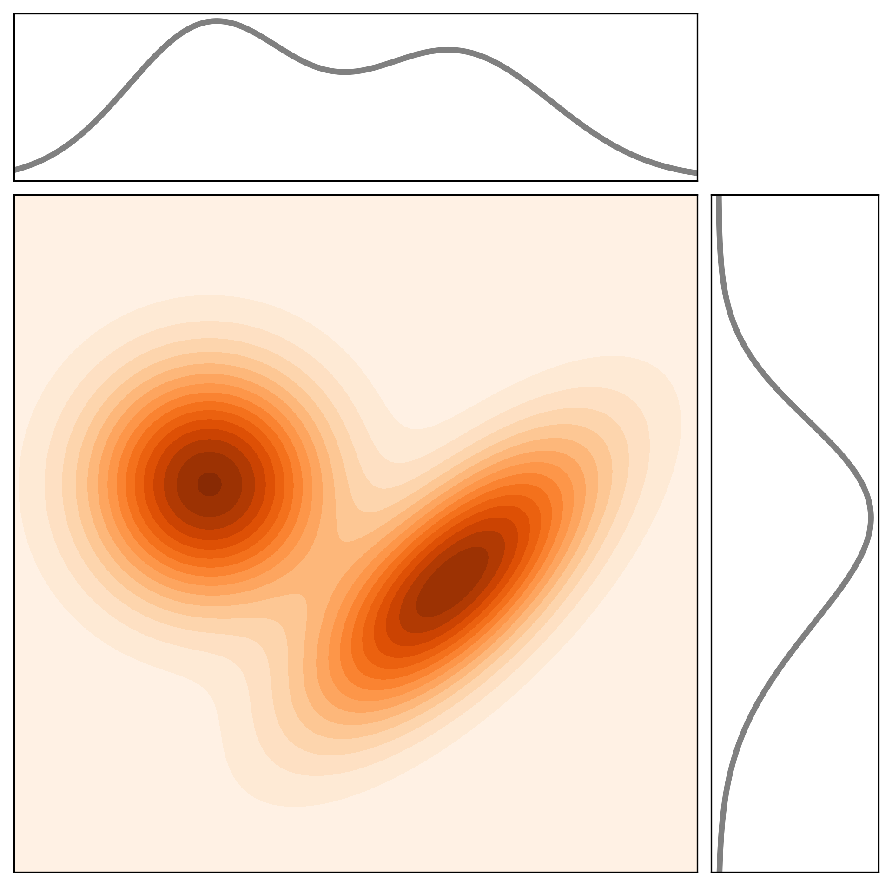
图 21：联合 PDF p X , Y p_{X,Y} p X , Y p X p_{X} p X p Y p_{Y} p Y 26 ]。
给定两个随机变量 X , Y ∈ R d X,Y\in\mathbb{R}^{d} X , Y ∈ R d p X , Y ( x , y ) p_{X,Y}(x,y) p X , Y ( x , y )
∫ p X , Y ( x , y ) d y = p X ( x ) 且 ∫ p X , Y ( x , y ) d x = p Y ( y ) . (100)
\int p_{X,Y}(x,y)\mathrm{d}y=p_{X}(x)\text{ 且 }\int p_{X,Y}(x,y)\mathrm{d}x=p_{Y}(y). \qquad\text{(100)}
∫ p X , Y ( x , y ) d y = p X ( x ) 且 ∫ p X , Y ( x , y ) d x = p Y ( y ) . (100) 图 21 展示了两个取值于 R \mathbb{R} R d = 1 d=1 d = 1 p X ∣ Y p_{X|Y} p X ∣ Y p Y ( y ) > 0 p_{Y}(y)>0 p Y ( y ) > 0 Y = y Y=y Y = y X X X
p X ∣ Y ( x ∣ y ) ≔ p X , Y ( x , y ) p Y ( y ) , (101)
p_{X|Y}(x|y)\coloneqq\frac{p_{X,Y}(x,y)}{p_{Y}(y)}, \qquad\text{(101)}
p X ∣ Y ( x ∣ y ) : = p Y ( y ) p X , Y ( x , y ) , (101) 条件 PDF p Y ∣ X p_{Y|X} p Y ∣ X p Y ∣ X p_{Y|X} p Y ∣ X p X ∣ Y p_{X|Y} p X ∣ Y
p Y ∣ X ( y ∣ x ) = p X ∣ Y ( x ∣ y ) p Y ( y ) p X ( x ) , (102)
p_{Y|X}(y|x)=\frac{p_{X|Y}(x|y)p_{Y}(y)}{p_{X}(x)}, \qquad\text{(102)}
p Y ∣ X ( y ∣ x ) = p X ( x ) p X ∣ Y ( x ∣ y ) p Y ( y ) , (102) 其中 p X ( x ) > 0 p_{X}(x)>0 p X ( x ) > 0
条件期望 E [ X ∣ Y ] \mathbb{E}\left[X|Y\right] E [ X ∣ Y ] X X X g ⋆ ( Y ) g_{\star}(Y) g ⋆ ( Y )
g ⋆ ≔ arg min g : R d → R d E [ ∥ X − g ( Y ) ∥ 2 ] = arg min g : R d → R d ∫ ∥ x − g ( y ) ∥ 2 p X , Y ( x , y ) d x d y = arg min g : R d → R d ∫ [ ∫ ∥ x − g ( y ) ∥ 2 p X ∣ Y ( x ∣ y ) d x ] p Y ( y ) d y . (103)
\begin{aligned}
g_{\star} & \coloneqq\argmin_{g:\mathbb{R}^{d}\rightarrow\mathbb{R}^{d}}\mathbb{E}\left[\left\|X-g(Y)\right\|^{2}\right]=\argmin_{g:\mathbb{R}^{d}\rightarrow\mathbb{R}^{d}}\int\left\|x-g(y)\right\|^{2}p_{X,Y}(x,y)\mathrm{d}x\mathrm{d}y \\
=\argmin_{g:\mathbb{R}^{d}\rightarrow\mathbb{R}^{d}}\int\left[{\color{#000000}\int\left\|x-g(y)\right\|^{2}p_{X|Y}(x|y)\mathrm{d}x}\right]p_{Y}(y)\mathrm{d}y. \qquad\text{(103)}
\end{aligned}
g ⋆ = g : R d → R d arg min ∫ [ ∫ ∥ x − g ( y ) ∥ 2 p X ∣ Y ( x ∣ y ) d x ] p Y ( y ) d y . (103) : = g : R d → R d arg min E [ ∥ X − g ( Y ) ∥ 2 ] = g : R d → R d arg min ∫ ∥ x − g ( y ) ∥ 2 p X , Y ( x , y ) d x d y 因此，对于满足 p Y ( y ) > 0 p_{Y}(y)>0 p Y ( y ) > 0 y ∈ R d y\in\mathbb{R}^{d} y ∈ R d
E [ X ∣ Y = y ] ≔ g ⋆ ( y ) = ∫ x p X ∣ Y ( x ∣ y ) d x , (104)
\mathbb{E}\left[X|Y=y\right]\coloneqq g_{\star}(y)=\int xp_{X|Y}(x|y)\mathrm{d}x, \qquad\text{(104)}
E [ X ∣ Y = y ] : = g ⋆ ( y ) = ∫ x p X ∣ Y ( x ∣ y ) d x , (104) 第二个等式是对式 103 中 Y = y Y=y Y = y 式 98 。将 g ⋆ g_{\star} g ⋆ Y Y Y
E [ X ∣ Y ] ≔ g ⋆ ( Y ) , (105)
\mathbb{E}\left[X|Y\right]\coloneqq g_{\star}(Y), \qquad\text{(105)}
E [ X ∣ Y ] : = g ⋆ ( Y ) , (105) 它是取值于 R d \mathbb{R}^{d} R d E [ X ∣ Y = y ] \mathbb{E}\left[X|Y=y\right] E [ X ∣ Y = y ] E [ X ∣ Y ] \mathbb{E}\left[X|Y\right] E [ X ∣ Y ] E [ X ∣ Y = y ] \mathbb{E}\left[X|Y=y\right] E [ X ∣ Y = y ] R d → R d \mathbb{R}^{d}\rightarrow\mathbb{R}^{d} R d → R d E [ X ∣ Y ] \mathbb{E}\left[X|Y\right] E [ X ∣ Y ] R d \mathbb{R}^{d} R d
塔式法则是一个实用性质，可简化涉及两个随机变量 X X X Y Y Y
E [ E [ X ∣ Y ] ] = E [ X ] (106)
\mathbb{E}\left[\mathbb{E}\left[X|Y\right]\right]=\mathbb{E}\left[X\right] \qquad\text{(106)}
E [ E [ X ∣ Y ] ] = E [ X ] (106) 由于 E [ X ∣ Y ] \mathbb{E}\left[X|Y\right] E [ X ∣ Y ] Y Y Y E [ X ∣ Y ] \mathbb{E}\left[X|Y\right] E [ X ∣ Y ]
E [ E [ X ∣ Y ] ] = ∫ ( ∫ x p X ∣ Y ( x ∣ y ) d x ) p Y ( y ) d y = 101 ∫ ∫ x p X , Y ( x , y ) d x d y = 100 ∫ x p X ( x ) d x = E [ X ] .
\begin{aligned}
\mathbb{E}\left[\mathbb{E}\left[X|Y\right]\right] & =\int\left(\int xp_{X|Y}(x|y)\mathrm{d}x\right)p_{Y}(y)\mathrm{d}y \\
\overset{101}{=}\int\int xp_{X,Y}(x,y)\mathrm{d}x\mathrm{d}y \\
\overset{100}{=}\int xp_{X}(x)\mathrm{d}x=\mathbb{E}\left[X\right].
\end{aligned}
E [ E [ X ∣ Y ] ] = 101 ∫∫ x p X , Y ( x , y ) d x d y = 100 ∫ x p X ( x ) d x = E [ X ] . = ∫ ( ∫ x p X ∣ Y ( x ∣ y ) d x ) p Y ( y ) d y 最后考虑一个有用性质，涉及随机变量 f ( X , Y ) f(X,Y) f ( X , Y ) Y Y Y X X X Y Y Y 式 104 ，可得恒等式
E [ f ( X , Y ) ∣ Y = y ] = ∫ f ( x , y ) p X ∣ Y ( x ∣ y ) d x . (107)
\mathbb{E}\left[f(X,Y)|Y=y\right]=\int f(x,y)p_{X|Y}(x|y)\mathrm{d}x. \qquad\text{(107)}
E [ f ( X , Y ) ∣ Y = y ] = ∫ f ( x , y ) p X ∣ Y ( x ∣ y ) d x . (107)
附录 B Fokker–Planck 方程的证明
本附录给出 Fokker–Planck 方程的完整证明，其中连续性方程是其特例，见定理 11 。需要强调，理解本文其他内容并不需要阅读本附录 ，这里的数学要求也更高。如果你想了解 Fokker–Planck 方程的由来，可以阅读本附录。
定理 41（Fokker–Planck 方程）
设 p t p_{t} p t p 0 = p i n i t p_{0}=p_{\rm{init}} p 0 = p init
X 0 ∼ p i n i t , d X t = u t ( X t ) d t + σ t d W t .
X_{0}\sim p_{\rm{init}},\quad\mathrm{d}X_{t}=u_{t}(X_{t})\mathrm{d}t+\sigma_{t}\mathrm{d}W_{t}.
X 0 ∼ p init , d X t = u t ( X t ) d t + σ t d W t . 对于所有 0 ≤ t ≤ 1 0\leq t\leq 1 0 ≤ t ≤ 1 X t X_{t} X t p t p_{t} p t Fokker–Planck 方程 成立：
∂ t p t ( x ) = − d i v ( p t u t ) ( x ) + σ t 2 2 Δ p t ( x ) ，对所有 x ∈ R d , 0 ≤ t ≤ 1 , (108)
\partial_{t}p_{t}(x)=-\mathrm{div}(p_{t}u_{t})(x)+\frac{\sigma_{t}^{2}}{2}\Delta p_{t}(x)\quad\text{，对所有 }x\in\mathbb{R}^{d},0\leq t\leq 1, \qquad\text{(108)}
∂ t p t ( x ) = − div ( p t u t ) ( x ) + 2 σ t 2 Δ p t ( x ) ，对所有 x ∈ R d , 0 ≤ t ≤ 1 , (108) 首先证明 Fokker–Planck 方程的必要性，即若 X t ∼ p t X_{t}\sim p_{t} X t ∼ p t 检验函数 f f f f : R d → R f:\mathbb{R}^{d}\to\mathbb{R} f : R d → R g 1 , g 2 : R d → R g_{1},g_{2}:\mathbb{R}^{d}\to\mathbb{R} g 1 , g 2 : R d → R
g 1 ( x ) = g 2 ( x ) ，对所有 x ∈ R d ⇔ ∫ f ( x ) g 1 ( x ) d x = ∫ f ( x ) g 2 ( x ) d x ，对所有检验函数 f (109)
g_{1}(x)=g_{2}(x)\text{，对所有 }x\in\mathbb{R}^{d}\quad\Leftrightarrow\quad\int f(x)g_{1}(x)\mathrm{d}x=\int f(x)g_{2}(x)\mathrm{d}x\text{，对所有检验函数 }f \qquad\text{(109)}
g 1 ( x ) = g 2 ( x ) ，对所有 x ∈ R d ⇔ ∫ f ( x ) g 1 ( x ) d x = ∫ f ( x ) g 2 ( x ) d x ，对所有检验函数 f (109) 换言之，可以将逐点相等转化为积分相等。检验函数的用处在于其光滑性，使我们可以求梯度及高阶导数。特别地，对任意检验函数 f 1 , f 2 f_{1},f_{2} f 1 , f 2 分部积分 ：
∫ f 1 ( x ) ∂ ∂ x i f 2 ( x ) d x = − ∫ f 2 ( x ) ∂ ∂ x i f 1 ( x ) d x (110)
\int f_{1}(x)\frac{\partial}{\partial x_{i}}f_{2}(x)\mathrm{d}x=-\int f_{2}(x)\frac{\partial}{\partial x_{i}}f_{1}(x)\mathrm{d}x \qquad\text{(110)}
∫ f 1 ( x ) ∂ x i ∂ f 2 ( x ) d x = − ∫ f 2 ( x ) ∂ x i ∂ f 1 ( x ) d x (110) 条件是 f 1 , f 2 f_{1},f_{2} f 1 , f 2 f 1 ⋅ f 2 f_{1}\cdot f_{2} f 1 ⋅ f 2 式 22 ，可得恒等式：
∫ ∇ f 1 T ( x ) f 2 ( x ) d x = − ∫ f 1 ( x ) d i v ( f 2 ) ( x ) d x ( f 1 : R d → R , f 2 : R d → R d ) (111) ∫ f 1 ( x ) Δ f 2 ( x ) d x = ∫ f 2 ( x ) Δ f 1 ( x ) d x ( f 1 : R d → R , f 2 : R d → R ) (112)
\begin{aligned}
\int\nabla f_{1}^{T}(x)f_{2}(x)\mathrm{d}x= & -\int f_{1}(x)\mathrm{div}(f_{2})(x)\mathrm{d}x\quad(f_{1}:\mathbb{R}^{d}\to\mathbb{R},f_{2}:\mathbb{R}^{d}\to\mathbb{R}^{d}) \qquad\text{(111)} \\
\int f_{1}(x)\Delta f_{2}(x)\mathrm{d}x= & \int f_{2}(x)\Delta f_{1}(x)\mathrm{d}x\quad(f_{1}:\mathbb{R}^{d}\to\mathbb{R},f_{2}:\mathbb{R}^{d}\to\mathbb{R}) \qquad\text{(112)}
\end{aligned}
∫ ∇ f 1 T ( x ) f 2 ( x ) d x = ∫ f 1 ( x ) Δ f 2 ( x ) d x = − ∫ f 1 ( x ) div ( f 2 ) ( x ) d x ( f 1 : R d → R , f 2 : R d → R d ) (111) ∫ f 2 ( x ) Δ f 1 ( x ) d x ( f 1 : R d → R , f 2 : R d → R ) (112) 下面进入证明。使用式 6 中 SDE 轨迹的随机更新形式：
X t + h = X t + h u t ( X t ) + σ t ( W t + h − W t ) + h R t ( h ) (113) ≈ X t + h u t ( X t ) + σ t ( W t + h − W t ) (114)
\begin{aligned}
X_{t+h}= & X_{t}+hu_{t}(X_{t})+\sigma_{t}(W_{t+h}-W_{t})+hR_{t}(h) \qquad\text{(113)} \\
\approx & X_{t}+hu_{t}(X_{t})+\sigma_{t}(W_{t+h}-W_{t}) \qquad\text{(114)}
\end{aligned}
X t + h = ≈ X t + h u t ( X t ) + σ t ( W t + h − W t ) + h R t ( h ) (113) X t + h u t ( X t ) + σ t ( W t + h − W t ) (114) 为便于阅读，暂时忽略误差项 R t ( h ) R_{t}(h) R t ( h ) h → 0 h\to 0 h → 0
f ( X t + h ) − f ( X t ) = 114 f ( X t + h u t ( X t ) + σ t ( W t + h − W t ) ) − f ( X t ) = ( i ) ∇ f ( X t ) T ( h u t ( X t ) + σ t ( W t + h − W t ) ) ) + 1 2 ( h u t ( X t ) + σ t ( W t + h − W t ) ) ) T ∇ 2 f ( X t ) ( h u t ( X t ) + σ t ( W t + h − W t ) ) ) = ( i i ) h ∇ f ( X t ) T u t ( X t ) + σ t ∇ f ( X t ) T ( W t + h − W t ) + 1 2 h 2 u t ( X t ) T ∇ 2 f ( X t ) u t ( X t ) + h σ t u t ( X t ) T ∇ 2 f ( X t ) ( W t + h − W t ) + + 1 2 σ t 2 ( W t + h − W t ) T ∇ 2 f ( X t ) ( W t + h − W t )
\begin{aligned}
f(X_{t+h})-f(X_{t})\overset{114}{=} & f(X_{t}+hu_{t}(X_{t})+\sigma_{t}(W_{t+h}-W_{t}))-f(X_{t}) \\
\overset{(i)}{=} & \nabla f(X_{t})^{T}\left(hu_{t}(X_{t})+\sigma_{t}(W_{t+h}-W_{t}))\right) \\
+\frac{1}{2}\left(hu_{t}(X_{t})+\sigma_{t}(W_{t+h}-W_{t}))\right)^{T}\nabla^{2}f(X_{t})\left(hu_{t}(X_{t})+\sigma_{t}(W_{t+h}-W_{t}))\right) \\
\overset{(ii)}{=} & h\nabla f(X_{t})^{T}u_{t}(X_{t})+\sigma_{t}\nabla f(X_{t})^{T}(W_{t+h}-W_{t}) \\
+\frac{1}{2}h^{2}u_{t}(X_{t})^{T}\nabla^{2}f(X_{t})u_{t}(X_{t})+h\sigma_{t}u_{t}(X_{t})^{T}\nabla^{2}f(X_{t})(W_{t+h}-W_{t})+ \\
+\frac{1}{2}\sigma_{t}^{2}(W_{t+h}-W_{t})^{T}\nabla^{2}f(X_{t})(W_{t+h}-W_{t})
\end{aligned}
f ( X t + h ) − f ( X t ) = 114 = ( i ) + 2 1 ( h u t ( X t ) + σ t ( W t + h − W t )) ) T ∇ 2 f ( X t ) ( h u t ( X t ) + σ t ( W t + h − W t )) ) = ( ii ) + 2 1 h 2 u t ( X t ) T ∇ 2 f ( X t ) u t ( X t ) + h σ t u t ( X t ) T ∇ 2 f ( X t ) ( W t + h − W t ) + + 2 1 σ t 2 ( W t + h − W t ) T ∇ 2 f ( X t ) ( W t + h − W t ) f ( X t + h u t ( X t ) + σ t ( W t + h − W t )) − f ( X t ) ∇ f ( X t ) T ( h u t ( X t ) + σ t ( W t + h − W t )) ) h ∇ f ( X t ) T u t ( X t ) + σ t ∇ f ( X t ) T ( W t + h − W t ) 其中步骤 (i) 对 f f f X t X_{t} X t ∇ 2 f \nabla^{2}f ∇ 2 f E [ W t + h − W t ∣ X t ] = 0 \mathbb{E}[W_{t+h}-W_{t}|X_{t}]=0 E [ W t + h − W t ∣ X t ] = 0 W t + h − W t ∣ X t ∼ N ( 0 , h I d ) W_{t+h}-W_{t}|X_{t}\sim\mathcal{N}(0,hI_{d}) W t + h − W t ∣ X t ∼ N ( 0 , h I d )
E [ f ( X t + h ) − f ( X t ) ∣ X t ] = h ∇ f ( X t ) T u t ( X t ) + 1 2 h 2 u t ( X t ) T ∇ 2 f ( X t ) u t ( X t ) + h 2 σ t 2 E ϵ t ∼ N ( 0 , I d ) [ ϵ t T ∇ 2 f ( X t ) ϵ t ] = ( i ) h ∇ f ( X t ) T u t ( X t ) + 1 2 h 2 u t ( X t ) T ∇ 2 f ( X t ) u t ( X t ) + h 2 σ t 2 trace ( ∇ 2 f ( X t ) ) = ( i i ) h ∇ f ( X t ) T u t ( X t ) + 1 2 h 2 u t ( X t ) T ∇ 2 f ( X t ) u t ( X t ) + h 2 σ t 2 Δ f ( X t )
\begin{aligned}
\mathbb{E}[f(X_{t+h})-f(X_{t})|X_{t}] \\
= & h\nabla f(X_{t})^{T}u_{t}(X_{t})+\frac{1}{2}h^{2}u_{t}(X_{t})^{T}\nabla^{2}f(X_{t})u_{t}(X_{t})+\frac{h}{2}\sigma_{t}^{2}\mathbb{E}_{\epsilon_{t}\sim\mathcal{N}(0,I_{d})}[\epsilon_{t}^{T}\nabla^{2}f(X_{t})\epsilon_{t}] \\
\overset{(i)}{=} & h\nabla f(X_{t})^{T}u_{t}(X_{t})+\frac{1}{2}h^{2}u_{t}(X_{t})^{T}\nabla^{2}f(X_{t})u_{t}(X_{t})+\frac{h}{2}\sigma_{t}^{2}\text{trace}(\nabla^{2}f(X_{t})) \\
\overset{(ii)}{=} & h\nabla f(X_{t})^{T}u_{t}(X_{t})+\frac{1}{2}h^{2}u_{t}(X_{t})^{T}\nabla^{2}f(X_{t})u_{t}(X_{t})+\frac{h}{2}\sigma_{t}^{2}\Delta f(X_{t})
\end{aligned}
E [ f ( X t + h ) − f ( X t ) ∣ X t ] = = ( i ) = ( ii ) h ∇ f ( X t ) T u t ( X t ) + 2 1 h 2 u t ( X t ) T ∇ 2 f ( X t ) u t ( X t ) + 2 h σ t 2 E ϵ t ∼ N ( 0 , I d ) [ ϵ t T ∇ 2 f ( X t ) ϵ t ] h ∇ f ( X t ) T u t ( X t ) + 2 1 h 2 u t ( X t ) T ∇ 2 f ( X t ) u t ( X t ) + 2 h σ t 2 trace ( ∇ 2 f ( X t )) h ∇ f ( X t ) T u t ( X t ) + 2 1 h 2 u t ( X t ) T ∇ 2 f ( X t ) u t ( X t ) + 2 h σ t 2 Δ f ( X t ) 其中步骤 ( i ) (i) ( i ) E ϵ t ∼ N ( 0 , I d ) [ ϵ t T A ϵ t ] = trace ( A ) \mathbb{E}_{\epsilon_{t}\sim\mathcal{N}(0,I_{d})}[\epsilon_{t}^{T}A\epsilon_{t}]=\text{trace}(A) E ϵ t ∼ N ( 0 , I d ) [ ϵ t T A ϵ t ] = trace ( A ) ( i i ) (ii) ( ii )
∂ t E [ f ( X t ) ] = lim h → 0 1 h E [ f ( X t + h ) − f ( X t ) ] = lim h → 0 1 h E [ E [ f ( X t + h ) − f ( X t ) ∣ X t ] ] = E [ lim h → 0 1 h ( h ∇ f ( X t ) T u t ( X t ) + 1 2 h 2 u t ( X t ) T ∇ 2 f ( X t ) u t ( X t ) + h 2 σ t 2 Δ f ( X t ) ) ] = E [ ∇ f ( X t ) T u t ( X t ) + 1 2 σ t 2 Δ f ( X t ) ] = ( i ) ∫ ∇ f ( x ) T u t ( x ) p t ( x ) d x + ∫ 1 2 σ t 2 Δ f ( x ) p t ( x ) d x = ( i i ) − ∫ f ( x ) d i v ( u t p t ) ( x ) d x + ∫ 1 2 σ t 2 f ( x ) Δ p t ( x ) d x = ∫ f ( x ) ( − d i v ( u t p t ) ( x ) + 1 2 σ t 2 Δ p t ( x ) ) d x
\begin{aligned}
\partial_{t}\mathbb{E}[f(X_{t})] \\
= & \lim\limits_{h\to 0}\frac{1}{h}\mathbb{E}[f(X_{t+h})-f(X_{t})] \\
= & \lim\limits_{h\to 0}\frac{1}{h}\mathbb{E}[\mathbb{E}[f(X_{t+h})-f(X_{t})|X_{t}]] \\
= & \mathbb{E}[\lim\limits_{h\to 0}\frac{1}{h}\left(h\nabla f(X_{t})^{T}u_{t}(X_{t})+\frac{1}{2}h^{2}u_{t}(X_{t})^{T}\nabla^{2}f(X_{t})u_{t}(X_{t})+\frac{h}{2}\sigma_{t}^{2}\Delta f(X_{t})\right)] \\
= & \mathbb{E}[\nabla f(X_{t})^{T}u_{t}(X_{t})+\frac{1}{2}\sigma_{t}^{2}\Delta f(X_{t})] \\
\overset{(i)}{=} & \int\nabla f(x)^{T}u_{t}(x)p_{t}(x)\mathrm{d}x+\int\frac{1}{2}\sigma_{t}^{2}\Delta f(x)p_{t}(x)\mathrm{d}x \\
\overset{(ii)}{=} & -\int f(x)\mathrm{div}(u_{t}p_{t})(x)\mathrm{d}x+\int\frac{1}{2}\sigma_{t}^{2}f(x)\Delta p_{t}(x)\mathrm{d}x \\
= & \int f(x)\left(-\mathrm{div}(u_{t}p_{t})(x)+\frac{1}{2}\sigma_{t}^{2}\Delta p_{t}(x)\right)\mathrm{d}x
\end{aligned}
∂ t E [ f ( X t )] = = = = = ( i ) = ( ii ) = h → 0 lim h 1 E [ f ( X t + h ) − f ( X t )] h → 0 lim h 1 E [ E [ f ( X t + h ) − f ( X t ) ∣ X t ]] E [ h → 0 lim h 1 ( h ∇ f ( X t ) T u t ( X t ) + 2 1 h 2 u t ( X t ) T ∇ 2 f ( X t ) u t ( X t ) + 2 h σ t 2 Δ f ( X t ) ) ] E [ ∇ f ( X t ) T u t ( X t ) + 2 1 σ t 2 Δ f ( X t )] ∫ ∇ f ( x ) T u t ( x ) p t ( x ) d x + ∫ 2 1 σ t 2 Δ f ( x ) p t ( x ) d x − ∫ f ( x ) div ( u t p t ) ( x ) d x + ∫ 2 1 σ t 2 f ( x ) Δ p t ( x ) d x ∫ f ( x ) ( − div ( u t p t ) ( x ) + 2 1 σ t 2 Δ p t ( x ) ) d x 其中步骤 (i) 使用 p t p_{t} p t X t X_{t} X t 式 111 与式 112 。使用这些等式需要乘积 p t ( x ) u t ( x ) p_{t}(x)u_{t}(x) p t ( x ) u t ( x )
∫ p t ( x ) ∥ u t ( x ) ∥ d x < ∞
\int p_{t}(x)\|u_{t}(x)\|\mathrm{d}x<\infty
∫ p t ( x ) ∥ u t ( x ) ∥ d x < ∞ 在机器学习中，由于数值精度有限，数据与函数通常有界，这一条件几乎总是满足。因此，
∂ t E [ f ( X t ) ] = ∫ f ( x ) ( − d i v ( p t u t ) ( x ) + σ t 2 2 Δ p t ( x ) ) d x ( 对所有 f 且 0 ≤ t ≤ 1 ) (115) ⇔ ( i ) ∂ t ∫ f ( x ) p t ( x ) d x = ∫ f ( x ) ( − d i v ( p t u t ) ( x ) + σ t 2 2 Δ p t ( x ) ) d x ( 对所有 f 且 0 ≤ t ≤ 1 ) (116) ⇔ ( i i ) ∫ f ( x ) ∂ t p t ( x ) d x = ∫ f ( x ) ( − d i v ( p t u t ) ( x ) + σ t 2 2 Δ p t ( x ) ) d x ( 对所有 f 且 0 ≤ t ≤ 1 ) (117) ⇔ ( i i i ) ∂ t p t ( x ) = − d i v ( p t u t ) ( x ) + σ t 2 2 Δ p t ( x ) ( 对所有 x ∈ R d , 0 ≤ t ≤ 1 ) (118)
\begin{aligned}
\partial_{t}\mathbb{E}[f(X_{t})]= & \int f(x)\left(-\mathrm{div}(p_{t}u_{t})(x)+\frac{\sigma_{t}^{2}}{2}\Delta p_{t}(x)\right)\mathrm{d}x\quad(\text{对所有 }f\text{ 且 }0\leq t\leq 1) \qquad\text{(115)} \\
\overset{(i)}{\Leftrightarrow}\quad\partial_{t}\int f(x)p_{t}(x)\mathrm{d}x= & \int f(x)\left(-\mathrm{div}(p_{t}u_{t})(x)+\frac{\sigma_{t}^{2}}{2}\Delta p_{t}(x)\right)\mathrm{d}x\quad(\text{对所有 }f\text{ 且 }0\leq t\leq 1) \qquad\text{(116)} \\
\overset{(ii)}{\Leftrightarrow}\quad\int f(x)\partial_{t}p_{t}(x)\mathrm{d}x= & \int f(x)\left(-\mathrm{div}(p_{t}u_{t})(x)+\frac{\sigma_{t}^{2}}{2}\Delta p_{t}(x)\right)\mathrm{d}x\quad(\text{对所有 }f\text{ 且 }0\leq t\leq 1) \qquad\text{(117)} \\
\overset{(iii)}{\Leftrightarrow}\quad\partial_{t}p_{t}(x)= & -\mathrm{div}(p_{t}u_{t})(x)+\frac{\sigma_{t}^{2}}{2}\Delta p_{t}(x)\quad(\text{对所有 }x\in\mathbb{R}^{d},0\leq t\leq 1) \qquad\text{(118)}
\end{aligned}
∂ t E [ f ( X t )] = ⇔ ( i ) ∂ t ∫ f ( x ) p t ( x ) d x = ⇔ ( ii ) ∫ f ( x ) ∂ t p t ( x ) d x = ⇔ ( iii ) ∂ t p t ( x ) = ∫ f ( x ) ( − div ( p t u t ) ( x ) + 2 σ t 2 Δ p t ( x ) ) d x ( 对所有 f 且 0 ≤ t ≤ 1 ) (115) ∫ f ( x ) ( − div ( p t u t ) ( x ) + 2 σ t 2 Δ p t ( x ) ) d x ( 对所有 f 且 0 ≤ t ≤ 1 ) (116) ∫ f ( x ) ( − div ( p t u t ) ( x ) + 2 σ t 2 Δ p t ( x ) ) d x ( 对所有 f 且 0 ≤ t ≤ 1 ) (117) − div ( p t u t ) ( x ) + 2 σ t 2 Δ p t ( x ) ( 对所有 x ∈ R d , 0 ≤ t ≤ 1 ) (118) 其中步骤 (i) 使用假设 X t ∼ p t X_{t}\sim p_{t} X t ∼ p t 式 109 。至此，Fokker–Planck 方程的必要性得证。
最后说明充分性。Fokker–Planck 方程是偏微分方程（PDE），更具体地说，是抛物型偏微分方程。类似于定理 3 ，给定固定初始条件时，这类方程有唯一解，例如见 [15 ，第 7 章]。如果 p t p_{t} p t 式 108 ，那么根据刚才的必要性证明，X t X_{t} X t q t q_{t} q t X t ∼ q t X_{t}\sim q_{t} X t ∼ q t p t p_{t} p t q t q_{t} q t p 0 = q 0 = p i n i t p_{0}=q_{0}=p_{\rm{init}} p 0 = q 0 = p init 0 ≤ t ≤ 1 0\leq t\leq 1 0 ≤ t ≤ 1 p t = q t p_{t}=q_{t} p t = q t X t ∼ q t = p t X_{t}\sim q_{t}=p_{t} X t ∼ q t = p t
附录 C 连续时间马尔可夫链的存在性与唯一性
本附录证明定理 33 。
证明。
**唯一性：**需要证明，满足式 87 的转移核 p t ′ ∣ t ( X t ′ = y ∣ X t = x ) p_{t^{\prime}|t}(X_{t^{\prime}}=y|X_{t}=x) p t ′ ∣ t ( X t ′ = y ∣ X t = x ) 式 87 蕴含
d d t ′ p t ′ ∣ t ( X t ′ = y ∣ X t = x ) (119) = d d h p t ′ + h ∣ t ( X t ′ + h = y ∣ X t = x ) ∣ h = 0 (120) = d d h [ ∑ z ∈ S p t ′ + h ∣ t ′ ( X t ′ + h = y ∣ X t ′ = z ) p t ′ ∣ t ( X t ′ = z ∣ X t = x ) ] ∣ h = 0 (121) = ∑ z ∈ S Q t ′ ( y ∣ z ) p t ′ ∣ t ( X t ′ = z ∣ X t = x ) (122)
\begin{aligned}
\frac{\mathrm{d}}{\mathrm{d}t^{\prime}}p_{t^{\prime}|t}(X_{t^{\prime}}=y|X_{t}=x) \qquad\text{(119)} \\
= & \frac{\mathrm{d}}{\mathrm{d}h}p_{t^{\prime}+h|t}(X_{t^{\prime}+h}=y|X_{t}=x)_{|h=0} \qquad\text{(120)} \\
= & \frac{\mathrm{d}}{\mathrm{d}h}\left[\sum\limits_{z\in S}p_{t^{\prime}+h|t^{\prime}}(X_{t^{\prime}+h}=y|X_{t^{\prime}}=z)p_{t^{\prime}|t}(X_{t^{\prime}}=z|X_{t}=x)\right]_{|h=0} \qquad\text{(121)} \\
= & \sum\limits_{z\in S}Q_{t^{\prime}}(y|z)p_{t^{\prime}|t}(X_{t^{\prime}}=z|X_{t}=x) \qquad\text{(122)}
\end{aligned}
d t ′ d p t ′ ∣ t ( X t ′ = y ∣ X t = x ) (119) = = = d h d p t ′ + h ∣ t ( X t ′ + h = y ∣ X t = x ) ∣ h = 0 (120) d h d [ z ∈ S ∑ p t ′ + h ∣ t ′ ( X t ′ + h = y ∣ X t ′ = z ) p t ′ ∣ t ( X t ′ = z ∣ X t = x ) ] ∣ h = 0 (121) z ∈ S ∑ Q t ′ ( y ∣ z ) p t ′ ∣ t ( X t ′ = z ∣ X t = x ) (122) 固定 x , t x,t x , t t ′ ↦ p t ′ ∣ t ( X t ′ = y ∣ X t = x ) t^{\prime}\mapsto p_{t^{\prime}|t}(X_{t^{\prime}}=y|X_{t}=x) t ′ ↦ p t ′ ∣ t ( X t ′ = y ∣ X t = x ) 命题 2 ，其初始条件 p t ∣ t ( X t = y ∣ X t = x ) = δ y ( x ) p_{t|t}(X_{t}=y|X_{t}=x)=\delta_{y}(x) p t ∣ t ( X t = y ∣ X t = x ) = δ y ( x ) 定理 3 ，因此 p t ′ ∣ t ( X t ′ = y ∣ X t = x ) p_{t^{\prime}|t}(X_{t^{\prime}}=y|X_{t}=x) p t ′ ∣ t ( X t ′ = y ∣ X t = x )
**存在性：**反过来，任意线性 ODE 都有解。因此，对每个 x , t x,t x , t p t ′ ∣ t ( X t ′ = y ∣ X t = x ) p_{t^{\prime}|t}(X_{t^{\prime}}=y|X_{t}=x) p t ′ ∣ t ( X t ′ = y ∣ X t = x )
p t ∣ t ( X t = y ∣ X t = x ) = δ y ( x ) (123) d d t ′ p t ′ ∣ t ( X t ′ = y ∣ X t = x ) = ∑ z ∈ S Q t ′ ( y ∣ z ) p t ′ ∣ t ( X t ′ = z ∣ X t = x ) (124)
\begin{aligned}
p_{t|t}(X_{t}=y|X_{t}=x) & =\delta_{y}(x) \qquad\text{(123)} \\
\frac{\mathrm{d}}{\mathrm{d}t^{\prime}}p_{t^{\prime}|t}(X_{t^{\prime}}=y|X_{t}=x) & =\sum\limits_{z\in S}Q_{t^{\prime}}(y|z)p_{t^{\prime}|t}(X_{t^{\prime}}=z|X_{t}=x) \qquad\text{(124)}
\end{aligned}
p t ∣ t ( X t = y ∣ X t = x ) d t ′ d p t ′ ∣ t ( X t ′ = y ∣ X t = x ) = δ y ( x ) (123) = z ∈ S ∑ Q t ′ ( y ∣ z ) p t ′ ∣ t ( X t ′ = z ∣ X t = x ) (124) 特别地，当 t ′ = t t^{\prime}=t t ′ = t 式 87 。剩下只需证明，此时 p t ′ ∣ t ( X t ′ = y ∣ X t = x ) p_{t^{\prime}|t}(X_{t^{\prime}}=y|X_{t}=x) p t ′ ∣ t ( X t ′ = y ∣ X t = x )
∑ y ∈ S p t ′ ∣ t ( X t ′ = y ∣ X t = x ) = 1 (125) p t ′ ∣ t ( X t ′ = y ∣ X t = x ) ≥ 0 (126) ∑ z ∈ S p t 2 ∣ t 1 ( X t 2 = y ∣ X t 1 = z ) p t 1 ∣ t 0 ( X t 1 = z ∣ X t 0 = x ) = p t 2 ∣ t 0 ( y ∣ x ) (127)
\begin{aligned}
\sum\limits_{y\in S}p_{t^{\prime}|t}(X_{t^{\prime}}=y|X_{t}=x)= & 1 \qquad\text{(125)} \\
p_{t^{\prime}|t}(X_{t^{\prime}}=y|X_{t}=x)\geq & 0 \qquad\text{(126)} \\
\sum\limits_{z\in S}p_{t_{2}|t_{1}}(X_{t_{2}}=y|X_{t_{1}}=z)p_{t_{1}|t_{0}}(X_{t_{1}}=z|X_{t_{0}}=x)= & p_{t_{2}|t_{0}}(y|x) \qquad\text{(127)}
\end{aligned}
y ∈ S ∑ p t ′ ∣ t ( X t ′ = y ∣ X t = x ) = p t ′ ∣ t ( X t ′ = y ∣ X t = x ) ≥ z ∈ S ∑ p t 2 ∣ t 1 ( X t 2 = y ∣ X t 1 = z ) p t 1 ∣ t 0 ( X t 1 = z ∣ X t 0 = x ) = 1 (125) 0 (126) p t 2 ∣ t 0 ( y ∣ x ) (127) 对于第一个性质，根据式 123 ，它在 t ′ = t t^{\prime}=t t ′ = t
d d t ′ ∑ y ∈ S p t ′ ∣ t ( X t ′ = y ∣ X t = x ) (128) = ∑ y ∈ S d d t ′ p t ′ ∣ t ( X t ′ = y ∣ X t = x ) (129) = ∑ z ∈ S [ ∑ y ∈ S Q t ′ ( y ∣ z ) ] p t ′ ∣ t ( X t ′ = z ∣ X t = x ) (130) = 0 (131)
\begin{aligned}
\frac{\mathrm{d}}{\mathrm{d}t^{\prime}}\sum\limits_{y\in S}p_{t^{\prime}|t}(X_{t^{\prime}}=y|X_{t}=x) \qquad\text{(128)} \\
= & \sum\limits_{y\in S}\frac{\mathrm{d}}{\mathrm{d}t^{\prime}}p_{t^{\prime}|t}(X_{t^{\prime}}=y|X_{t}=x) \qquad\text{(129)} \\
= & \sum\limits_{z\in S}\left[\sum\limits_{y\in S}Q_{t^{\prime}}(y|z)\right]p_{t^{\prime}|t}(X_{t^{\prime}}=z|X_{t}=x) \qquad\text{(130)} \\
= & 0 \qquad\text{(131)}
\end{aligned}
d t ′ d y ∈ S ∑ p t ′ ∣ t ( X t ′ = y ∣ X t = x ) (128) = = = y ∈ S ∑ d t ′ d p t ′ ∣ t ( X t ′ = y ∣ X t = x ) (129) z ∈ S ∑ y ∈ S ∑ Q t ′ ( y ∣ z ) p t ′ ∣ t ( X t ′ = z ∣ X t = x ) (130) 0 (131) 这里用到了速率矩阵每列元素之和为 0 0 0 t ′ = t t^{\prime}=t t ′ = t p t ′ ∣ t ( X t ′ = y ∣ X t = x ) = 0 p_{t^{\prime}|t}(X_{t^{\prime}}=y|X_{t}=x)=0 p t ′ ∣ t ( X t ′ = y ∣ X t = x ) = 0
d d t ′ p t ′ ∣ t ( X t ′ = y ∣ X t = x ) = ∑ z ≠ y Q t ′ ( y ∣ z ) ⏟ ≥ 0 p t ′ ∣ t ( X t ′ = z ∣ X t = x ) ≥ 0
\begin{aligned}
\frac{\mathrm{d}}{\mathrm{d}t^{\prime}}p_{t^{\prime}|t}(X_{t^{\prime}}=y|X_{t}=x) & =\sum\limits_{z\neq y}\underbrace{Q_{t^{\prime}}(y|z)}_{\geq 0}p_{t^{\prime}|t}(X_{t^{\prime}}=z|X_{t}=x) \\
\geq 0
\end{aligned}
d t ′ d p t ′ ∣ t ( X t ′ = y ∣ X t = x ) ≥ 0 = z = y ∑ ≥ 0 Q t ′ ( y ∣ z ) p t ′ ∣ t ( X t ′ = z ∣ X t = x ) 因此，只要 p t ′ ∣ t ( X t ′ = y ∣ X t = x ) = 0 p_{t^{\prime}|t}(X_{t^{\prime}}=y|X_{t}=x)=0 p t ′ ∣ t ( X t ′ = y ∣ X t = x ) = 0 p t ′ ∣ t ( X t ′ = y ∣ X t = x ) p_{t^{\prime}|t}(X_{t^{\prime}}=y|X_{t}=x) p t ′ ∣ t ( X t ′ = y ∣ X t = x )
为证明第三个性质，定义 q t 2 ∣ t 0 ( y ∣ x ) q_{t_{2}|t_{0}}(y|x) q t 2 ∣ t 0 ( y ∣ x )
q t 2 ∣ t 0 ( y ∣ x ) = ∑ z ∈ S p t 2 ∣ t 1 ( X t 2 = y ∣ X t 1 = z ) p t 1 ∣ t 0 ( X t 1 = z ∣ X t 0 = x )
\begin{aligned}
q_{t_{2}|t_{0}}(y|x)= & \sum\limits_{z\in S}p_{t_{2}|t_{1}}(X_{t_{2}}=y|X_{t_{1}}=z)p_{t_{1}|t_{0}}(X_{t_{1}}=z|X_{t_{0}}=x)
\end{aligned}
q t 2 ∣ t 0 ( y ∣ x ) = z ∈ S ∑ p t 2 ∣ t 1 ( X t 2 = y ∣ X t 1 = z ) p t 1 ∣ t 0 ( X t 1 = z ∣ X t 0 = x ) 则
q t 2 = t 1 ∣ t 0 ( y ∣ x ) = ∑ z ∈ S δ y ( z ) p t 1 ∣ t 0 ( X t 1 = z ∣ X t 0 = x ) = p t 1 ∣ t 0 ( X t 1 = y ∣ X t 0 = x )
\begin{aligned}
q_{t_{2}=t_{1}|t_{0}}(y|x)= & \sum\limits_{z\in S}\delta_{y}(z)p_{t_{1}|t_{0}}(X_{t_{1}}=z|X_{t_{0}}=x)=p_{t_{1}|t_{0}}(X_{t_{1}}=y|X_{t_{0}}=x)
\end{aligned}
q t 2 = t 1 ∣ t 0 ( y ∣ x ) = z ∈ S ∑ δ y ( z ) p t 1 ∣ t 0 ( X t 1 = z ∣ X t 0 = x ) = p t 1 ∣ t 0 ( X t 1 = y ∣ X t 0 = x ) 并且
d d t 2 q t 2 ∣ t 0 ( y ∣ x ) = ∑ z ∈ S d d t 2 p t 2 ∣ t 1 ( X t 2 = y ∣ X t 1 = z ) p t 1 ∣ t 0 ( X t 1 = z ∣ X t 0 = x ) = ∑ z ∈ S ∑ z ~ ∈ S Q t 2 ( y ∣ z ~ ) p t 2 ∣ t 1 ( X t 2 = z ~ ∣ X t 1 = z ) p t 1 ∣ t 0 ( X t 1 = z ∣ X t 0 = x ) = ∑ z ~ ∈ S Q t 2 ( y ∣ z ~ ) [ ∑ z ∈ S p t 2 ∣ t 1 ( X t 2 = z ~ ∣ X t 1 = z ) p t 1 ∣ t 0 ( X t 1 = z ∣ X t 0 = x ) ] = ∑ z ~ ∈ S Q t 2 ( y ∣ z ~ ) q t 2 ∣ t 0 ( z ~ ∣ x )
\begin{aligned}
\frac{\mathrm{d}}{\mathrm{d}t_{2}}q_{t_{2}|t_{0}}(y|x)= & \sum\limits_{z\in S}\frac{\mathrm{d}}{\mathrm{d}t_{2}}p_{t_{2}|t_{1}}(X_{t_{2}}=y|X_{t_{1}}=z)p_{t_{1}|t_{0}}(X_{t_{1}}=z|X_{t_{0}}=x) \\
= & \sum\limits_{z\in S}\sum\limits_{\tilde{z}\in S}Q_{t_{2}}(y|\tilde{z})p_{t_{2}|t_{1}}(X_{t_{2}}=\tilde{z}|X_{t_{1}}=z)p_{t_{1}|t_{0}}(X_{t_{1}}=z|X_{t_{0}}=x) \\
= & \sum\limits_{\tilde{z}\in S}Q_{t_{2}}(y|\tilde{z})\left[\sum\limits_{z\in S}p_{t_{2}|t_{1}}(X_{t_{2}}=\tilde{z}|X_{t_{1}}=z)p_{t_{1}|t_{0}}(X_{t_{1}}=z|X_{t_{0}}=x)\right] \\
= & \sum\limits_{\tilde{z}\in S}Q_{t_{2}}(y|\tilde{z})q_{t_{2}|t_{0}}(\tilde{z}|x)
\end{aligned}
d t 2 d q t 2 ∣ t 0 ( y ∣ x ) = = = = z ∈ S ∑ d t 2 d p t 2 ∣ t 1 ( X t 2 = y ∣ X t 1 = z ) p t 1 ∣ t 0 ( X t 1 = z ∣ X t 0 = x ) z ∈ S ∑ z ~ ∈ S ∑ Q t 2 ( y ∣ z ~ ) p t 2 ∣ t 1 ( X t 2 = z ~ ∣ X t 1 = z ) p t 1 ∣ t 0 ( X t 1 = z ∣ X t 0 = x ) z ~ ∈ S ∑ Q t 2 ( y ∣ z ~ ) [ z ∈ S ∑ p t 2 ∣ t 1 ( X t 2 = z ~ ∣ X t 1 = z ) p t 1 ∣ t 0 ( X t 1 = z ∣ X t 0 = x ) ] z ~ ∈ S ∑ Q t 2 ( y ∣ z ~ ) q t 2 ∣ t 0 ( z ~ ∣ x ) 这说明 p t 2 ∣ t 0 ( z ∣ x ) p_{t_{2}|t_{0}}(z|x) p t 2 ∣ t 0 ( z ∣ x ) q t 2 ∣ t 0 ( z ∣ x ) q_{t_{2}|t_{0}}(z|x) q t 2 ∣ t 0 ( z ∣ x )
∑ z ∈ S p t 2 ∣ t 1 ( X t 2 = y ∣ X t 1 = z ) p t 1 ∣ t 0 ( X t 1 = z ∣ X t 0 = x ) = q t 2 ∣ t 0 ( y ∣ x ) = p t 2 ∣ t 0 ( y ∣ x )
\begin{aligned}
\sum\limits_{z\in S}p_{t_{2}|t_{1}}(X_{t_{2}}=y|X_{t_{1}}=z)p_{t_{1}|t_{0}}(X_{t_{1}}=z|X_{t_{0}}=x)= & q_{t_{2}|t_{0}}(y|x)=p_{t_{2}|t_{0}}(y|x)
\end{aligned}
z ∈ S ∑ p t 2 ∣ t 1 ( X t 2 = y ∣ X t 1 = z ) p t 1 ∣ t 0 ( X t 1 = z ∣ X t 0 = x ) = q t 2 ∣ t 0 ( y ∣ x ) = p t 2 ∣ t 0 ( y ∣ x ) 于是第三个性质成立。故 p t ′ ∣ t ( y ∣ x ) p_{t^{\prime}|t}(y|x) p t ′ ∣ t ( y ∣ x ) 式 87 的转移核。证毕。∎
附录 D 理解 VAE 的更多视角
本附录扩展正文中对 VAE 的讨论，并从变分角度推导式 83 的 VAE 总损失。首先注意，编码器与解码器都会在数据 x x x z z z
q ϕ ( x , z ) = p d a t a ( x ) q ϕ ( ⋅ ∣ x ) ( 编码器联合分布 ) p θ ( x , z ) = p θ ( x ∣ z ) p prior ( z ) ( 解码器联合分布 )
\begin{aligned}
q_{\phi}(x,z) & =p_{\rm{data}}(x)q_{\phi}(\cdot|x)\quad & (\text{编码器联合分布}) \\
p_{\theta}(x,z) & =p_{\theta}(x|z)p_{\text{prior}}(z)\quad & (\text{解码器联合分布})
\end{aligned}
q ϕ ( x , z ) p θ ( x , z ) = p data ( x ) q ϕ ( ⋅ ∣ x ) = p θ ( x ∣ z ) p prior ( z ) ( 编码器联合分布 ) ( 解码器联合分布 ) 因此，可以将 VAE 训练理解为：学习 ϕ \phi ϕ θ \theta θ
D KL ( q ϕ ( x , z ) ∥ p θ ( x , z ) ) = D KL ( p d a t a ( x ) q ϕ ( z ∣ x ) ∥ p θ ( x ∣ z ) p prior ( z ) ) = E ■ [ log ( p d a t a ( x ) q ϕ ( z ∣ x ) p θ ( x ∣ z ) p prior ( z ) ) ] = E ■ [ log p d a t a ( x ) ] + E ■ [ log ( q ϕ ( z ∣ x ) p prior ( z ) ) ] − E ■ [ log p θ ( x ∣ z ) ] ■ = x ∼ p d a t a ( x ) z ∼ q ϕ ( z ∣ x ) .
\begin{aligned}
D_{\text{KL}}(q_{\phi}(x,z)\;\|\;p_{\theta}(x,z)) & =D_{\text{KL}}(p_{\rm{data}}(x)q_{\phi}(z\mid x)\;\|\;p_{\theta}(x\mid z)p_{\text{prior}}(z)) \\
=\mathbb{E}_{\blacksquare}\left[\log\left(\frac{p_{\rm{data}}(x)q_{\phi}(z\mid x)}{p_{\theta}(x\mid z)p_{\text{prior}}(z)}\right)\right] \\
={\color{#B80000}\mathbb{E}_{\blacksquare}\left[\log p_{\rm{data}}(x)\right]}+{\color{#4169E1}\mathbb{E}_{\blacksquare}\left[\log\left(\frac{q_{\phi}(z\mid x)}{p_{\text{prior}}(z)}\right)\right]}-{\color{#228B22}\mathbb{E}_{\blacksquare}\left[\log p_{\theta}(x\mid z)\right]} \\
\blacksquare & =x\sim p_{\rm{data}}(x)\,z\sim q_{\phi}(z|x).
\end{aligned}
D KL ( q ϕ ( x , z ) ∥ p θ ( x , z )) = E ■ [ log ( p θ ( x ∣ z ) p prior ( z ) p data ( x ) q ϕ ( z ∣ x ) ) ] = E ■ [ l o g p data ( x ) ] + E ■ [ l o g ( p prior ( z ) q ϕ ( z ∣ x ) ) ] − E ■ [ l o g p θ ( x ∣ z ) ] ■ = D KL ( p data ( x ) q ϕ ( z ∣ x ) ∥ p θ ( x ∣ z ) p prior ( z )) = x ∼ p data ( x ) z ∼ q ϕ ( z ∣ x ) . 下面依次考察余下的三项。首先，
E ■ [ log p d a t a ( x ) ] = E x ∼ p d a t a ( x ) [ log p d a t a ( x ) ] = C , (133)
{\color{#B80000}\mathbb{E}_{\blacksquare}\left[\log p_{\rm{data}}(x)\right]={\color{#B80000}\mathbb{E}_{x\sim p_{\rm{data}}(x)}\left[\log p_{\rm{data}}(x)\right]}=C}, \qquad\text{(133)}
E ■ [ l o g p data ( x ) ] = E x ∼ p data ( x ) [ l o g p data ( x ) ] = C , (133) 其中 C C C ϕ \phi ϕ θ \theta θ
E ■ [ log ( q ϕ ( z ∣ x ) p prior ( z ) ) ] = E x ∼ p d a t a ( x ) [ D KL ( q ϕ ( z ∣ x ) ∥ p prior ( z ) ) ] (134)
{\color{#4169E1}\mathbb{E}_{\blacksquare}\left[\log\left(\frac{q_{\phi}(z\mid x)}{p_{\text{prior}}(z)}\right)\right]=\mathbb{E}_{x\sim p_{\rm{data}}(x)}\left[D_{\text{KL}}(q_{\phi}(z\mid x)\;\|\;p_{\text{prior}}(z))\right]} \qquad\text{(134)}
E ■ [ l o g ( p prior ( z ) q ϕ ( z ∣ x ) ) ] = E x ∼ p data ( x ) [ D KL ( q ϕ ( z ∣ x ) ∥ p prior ( z )) ] (134) 该项鼓励 q ϕ ( z ∣ x ) q_{\phi}(z\mid x) q ϕ ( z ∣ x ) p prior ( z ) p_{\text{prior}}(z) p prior ( z )
− E x ∼ p d a t a ( x ) z ∼ q ϕ ( z ∣ x ) [ log p θ ( x ∣ z ) ] (135)
-{\color{#228B22}\mathbb{E}_{x\sim p_{\rm{data}}(x)\,z\sim q_{\phi}(z|x)}\left[\log p_{\theta}(x\mid z)\right]} \qquad\text{(135)}
− E x ∼ p data ( x ) z ∼ q ϕ ( z ∣ x ) [ l o g p θ ( x ∣ z ) ] (135) 该项对应平均负对数似然，因此用于最小化重建损失。忽略常数项，将先验惩罚与重建项组合起来，可以看出 VAE 损失实际上就是数据与潜变量联合空间中的 KL 散度：
L VAE ( ϕ , θ ) = E x ∼ p d a t a ( x ) [ D KL ( q ϕ ( z ∣ x ) ∥ p prior ( z ) ) ] ⏟ 先验约束损失 − E x ∼ p d a t a ( x ) z ∼ q ϕ ( z ∣ x ) [ log p θ ( x ∣ z ) ] ⏟ 重建损失 (136) = D KL ( q ϕ ( x , z ) ∥ p θ ( x , z ) ) + const (137)
\begin{aligned}
\mathcal{L}_{\text{VAE}}(\phi,\theta) & =\underbrace{{\color{#4169E1}\mathbb{E}_{x\sim p_{\rm{data}}(x)}\left[D_{\text{KL}}(q_{\phi}(z\mid x)\;\|\;p_{\text{prior}}(z))\right]}}_{\text{先验约束损失}}-\underbrace{{\color{#228B22}\mathbb{E}_{x\sim p_{\rm{data}}(x)\,z\sim q_{\phi}(z|x)}\left[\log p_{\theta}(x\mid z)\right]}}_{\text{重建损失}} \qquad\text{(136)} \\
=D_{\text{KL}}(q_{\phi}(x,z)\;\|\;p_{\theta}(x,z))+\text{const} \qquad\text{(137)}
\end{aligned}
L VAE ( ϕ , θ ) = D KL ( q ϕ ( x , z ) ∥ p θ ( x , z )) + const (137) = 先验约束损失 E x ∼ p data ( x ) [ D KL ( q ϕ ( z ∣ x ) ∥ p prior ( z )) ] − 重建损失 E x ∼ p data ( x ) z ∼ q ϕ ( z ∣ x ) [ l o g p θ ( x ∣ z ) ] (136) 因此，可以从潜变量与图像联合空间中的 KL 散度这一角度理解 VAE。
将 VAE 视为生成模型。
下面解释如何将 VAE 视为生成模型。可以先令 z ∼ p prior = N ( 0 , I k ) z\sim p_{\text{prior}}=\mathcal{N}(0,I_{k}) z ∼ p prior = N ( 0 , I k ) x ∼ p θ ( ⋅ ∣ z ) x\sim p_{\theta}(\cdot|z) x ∼ p θ ( ⋅ ∣ z )
p θ ( x ) = ∫ z p θ ( x ∣ z ) p prior ( z ) d z
p_{\theta}(x)=\int_{z}p_{\theta}(x|z)p_{\text{prior}}(z)\mathrm{d}z
p θ ( x ) = ∫ z p θ ( x ∣ z ) p prior ( z ) d z 现在希望说明，VAE 能够学会近似从 p θ p_{\theta} p θ
命题 3（链式法则）
设 q ( x , z ) , p ( x , z ) q(x,z),p(x,z) q ( x , z ) , p ( x , z ) x ∈ R l 1 , z ∈ R l 2 x\in\mathbb{R}^{l_{1}},z\in\mathbb{R}^{l_{2}} x ∈ R l 1 , z ∈ R l 2
D KL ( q ( z , x ) ∥ p ( z , x ) ) = D KL ( q ( x ) ∥ p ( x ) ) + E x ∼ q [ D KL ( q ( z ∣ x ) ∥ p ( z ∣ x ) ) ] .
D_{\text{KL}}(q(z,x)\;\|\;p(z,x))=D_{\text{KL}}(q(x)\;\|\;p(x))+\mathbb{E}_{x\sim q}\left[D_{\text{KL}}(q(z|x)\;\|\;p(z|x))\right].
D KL ( q ( z , x ) ∥ p ( z , x )) = D KL ( q ( x ) ∥ p ( x )) + E x ∼ q [ D KL ( q ( z ∣ x ) ∥ p ( z ∣ x )) ] . 特别地，根据式 76 ，第二项非负，因此得到数据处理不等式：
D KL ( q ( x ) ∥ p ( x ) ) ≤ D KL ( q ( z , x ) ∥ p ( z , x ) ) . (138)
D_{\text{KL}}(q(x)\;\|\;p(x))\leq D_{\text{KL}}(q(z,x)\;\|\;p(z,x)). \qquad\text{(138)}
D KL ( q ( x ) ∥ p ( x )) ≤ D KL ( q ( z , x ) ∥ p ( z , x )) . (138) 证明。
D KL ( q ( z , x ) ∥ p ( z , x ) ) = E q [ log q ( z , x ) p ( z , x ) ] = E ( x , z ) ∼ q [ log q ( z ∣ x ) p ( z ∣ x ) q ( x ) p ( x ) ] = E ( x , z ) ∼ q [ log q ( z ∣ x ) p ( z ∣ x ) ] + E x ∼ q [ log q ( x ) p ( x ) ] = D KL ( q ( x ) ∥ p ( x ) ) + E x ∼ q [ D KL ( q ( z ∣ x ) ∥ p ( z ∣ x ) ) ]
\begin{aligned}
D_{\text{KL}}(q(z,x)\;\|\;p(z,x)) & =\mathbb{E}_{q}\left[\log\frac{q(z,x)}{p(z,x)}\right] \\
=\mathbb{E}_{(x,z)\sim q}\left[\log\frac{q(z|x)}{p(z|x)}\frac{q(x)}{p(x)}\right] \\
=\mathbb{E}_{(x,z)\sim q}\left[\log\frac{q(z|x)}{p(z|x)}\right]+\mathbb{E}_{x\sim q}\left[\log\frac{q(x)}{p(x)}\right] \\
=D_{\text{KL}}(q(x)\;\|\;p(x))+\mathbb{E}_{x\sim q}\left[D_{\text{KL}}(q(z|x)\;\|\;p(z|x))\right]
\end{aligned}
D KL ( q ( z , x ) ∥ p ( z , x )) = E ( x , z ) ∼ q [ log p ( z ∣ x ) q ( z ∣ x ) p ( x ) q ( x ) ] = E ( x , z ) ∼ q [ log p ( z ∣ x ) q ( z ∣ x ) ] + E x ∼ q [ log p ( x ) q ( x ) ] = D KL ( q ( x ) ∥ p ( x )) + E x ∼ q [ D KL ( q ( z ∣ x ) ∥ p ( z ∣ x )) ] = E q [ log p ( z , x ) q ( z , x ) ] 这里反复使用了 KL 散度的定义。∎
根据命题 3 ，可证明
L VAE ( ϕ , θ ) = D KL ( q ϕ ( x , z ) ∥ p θ ( x , z ) ) + const ≥ D KL ( p d a t a ( x ) ∥ p θ ( x ) ) + const (139)
\mathcal{L}_{\text{VAE}}(\phi,\theta)=D_{\text{KL}}(q_{\phi}(x,z)\;\|\;p_{\theta}(x,z))+\text{const}\geq D_{\text{KL}}(p_{\rm{data}}(x)\;\|\;p_{\theta}(x))+\text{const} \qquad\text{(139)}
L VAE ( ϕ , θ ) = D KL ( q ϕ ( x , z ) ∥ p θ ( x , z )) + const ≥ D KL ( p data ( x ) ∥ p θ ( x )) + const (139) 这里使用了 q ϕ ( x , z ) q_{\phi}(x,z) q ϕ ( x , z ) x x x p d a t a p_{\rm{data}} p data p d a t a p_{\rm{data}} p data
L VAE ( ϕ , θ ) = D KL ( q ϕ ( x , z ) ∥ p θ ( x , z ) ) + const ≥ D KL ( q ϕ ( z ) ∥ p prior ( z ) ) + const (140)
\mathcal{L}_{\text{VAE}}(\phi,\theta)=D_{\text{KL}}(q_{\phi}(x,z)\;\|\;p_{\theta}(x,z))+\text{const}\geq D_{\text{KL}}(q_{\phi}(z)\;\|\;p_{\text{prior}}(z))+\text{const} \qquad\text{(140)}
L VAE ( ϕ , θ ) = D KL ( q ϕ ( x , z ) ∥ p θ ( x , z )) + const ≥ D KL ( q ϕ ( z ) ∥ p prior ( z )) + const (140) 即 VAE 目标最小化了潜分布与先验分布之间 KL 散度的一个上界。
为什么不只使用 VAE？
根据上述讨论，VAE 本身即可作为生成模型，编码器只是为了辅助训练与之配合的解码器，后者将高斯分布变换为所需数据分布。采样时可以先采样 z ∼ p prior z\sim p_{\text{prior}} z ∼ p prior x ∼ p θ ( x ∣ z ) x\sim p_{\theta}(x|z) x ∼ p θ ( x ∣ z ) 式 139 与式 140 左右两侧之间所谓的摊销间隙 ，它正对应于信息处理不等式中的间隙。该间隙为零，当且仅当 q ϕ ( z ∣ x ) = p θ ( z ∣ x ) q_{\phi}(z|x)=p_{\theta}(z|x) q ϕ ( z ∣ x ) = p θ ( z ∣ x ) D KL ( q ϕ ( x , z ) ∥ p θ ( x , z ) ) D_{\text{KL}}(q_{\phi}(x,z)\;\|\;p_{\theta}(x,z)) D KL ( q ϕ ( x , z ) ∥ p θ ( x , z )) D KL ( q ϕ ( z ) ∥ p prior ( z ) ) D_{\text{KL}}(q_{\phi}(z)\;\|\;p_{\text{prior}}(z)) D KL ( q ϕ ( z ) ∥ p prior ( z )) 式 140 ，前者的下降并不一定意味着后者也同幅度下降。训练结束时，D KL ( q ϕ ( x , z ) ∥ p θ ( x , z ) ) D_{\text{KL}}(q_{\phi}(x,z)\;\|\;p_{\theta}(x,z)) D KL ( q ϕ ( x , z ) ∥ p θ ( x , z ))
D KL ( q ϕ ( x , z ) ∥ p θ ( x , z ) ) − D KL ( q ϕ ( z ) ∥ p prior ( z ) ) (141)
D_{\text{KL}}(q_{\phi}(x,z)\;\|\;p_{\theta}(x,z))-D_{\text{KL}}(q_{\phi}(z)\;\|\;p_{\text{prior}}(z)) \qquad\text{(141)}
D KL ( q ϕ ( x , z ) ∥ p θ ( x , z )) − D KL ( q ϕ ( z ) ∥ p prior ( z )) (141) 可能都没有完全最小化，因此 q ϕ ( z ) ≠ p prior ( z ) q_{\phi}(z)\neq p_{\text{prior}}(z) q ϕ ( z ) = p prior ( z ) q ϕ ( z ) q_{\phi}(z) q ϕ ( z ) p prior ( z ) p_{\text{prior}}(z) p prior ( z ) p prior ( z ) p_{\text{prior}}(z) p prior ( z )
证据下界。
对式 132 中各项作适当重排，可以得到多种互补视角。其中之一是证据下界 ，推导如下。对固定 x x x
E z ∼ q ϕ ( z ∣ x ) [ log ( q ϕ ( z ∣ x ) p θ ( x ∣ z ) p prior ( z ) ) ] = E z ∼ q ϕ ( z ∣ x ) [ log ( q ϕ ( z ∣ x ) p θ ( z ∣ x ) ) ] − log p θ ( x ) = D KL ( q ϕ ( z ∣ x ) ∥ p θ ( z ∣ x ) ) − log p θ ( x )
\begin{aligned}
\mathbb{E}_{z\sim q_{\phi}(z|x)}\left[\log\left(\frac{q_{\phi}(z\mid x)}{p_{\theta}(x\mid z)p_{\text{prior}}(z)}\right)\right] & =\mathbb{E}_{z\sim q_{\phi}(z|x)}\left[\log\left(\frac{q_{\phi}(z\mid x)}{p_{\theta}(z\mid x)}\right)\right]-\log p_{\theta}(x) \\
=D_{\text{KL}}(q_{\phi}(z\mid x)\;\|\;p_{\theta}(z\mid x))-\log p_{\theta}(x)
\end{aligned}
E z ∼ q ϕ ( z ∣ x ) [ log ( p θ ( x ∣ z ) p prior ( z ) q ϕ ( z ∣ x ) ) ] = D KL ( q ϕ ( z ∣ x ) ∥ p θ ( z ∣ x )) − log p θ ( x ) = E z ∼ q ϕ ( z ∣ x ) [ log ( p θ ( z ∣ x ) q ϕ ( z ∣ x ) ) ] − log p θ ( x ) 第一个等式来自
p θ ( z ∣ x ) = p θ ( x ∣ z ) p prior ( z ) p θ ( x ) .
p_{\theta}(z\mid x)=\frac{p_{\theta}(x\mid z)p_{\text{prior}}(z)}{p_{\theta}(x)}.
p θ ( z ∣ x ) = p θ ( x ) p θ ( x ∣ z ) p prior ( z ) . 因而可以将式 142 重排为
E z ∼ q ϕ ( z ∣ x ) [ log ( p θ ( x ∣ z ) p prior ( z ) q ϕ ( z ∣ x ) ) ] + D KL ( q ϕ ( z ∣ x ) ∥ p θ ( z ∣ x ) ) = log p θ ( x ) , (143)
\mathbb{E}_{z\sim q_{\phi}(z|x)}\left[\log\left(\frac{p_{\theta}(x\mid z)p_{\text{prior}}(z)}{q_{\phi}(z\mid x)}\right)\right]+D_{\text{KL}}(q_{\phi}(z\mid x)\;\|\;p_{\theta}(z\mid x))=\log p_{\theta}(x), \qquad\text{(143)}
E z ∼ q ϕ ( z ∣ x ) [ log ( q ϕ ( z ∣ x ) p θ ( x ∣ z ) p prior ( z ) ) ] + D KL ( q ϕ ( z ∣ x ) ∥ p θ ( z ∣ x )) = log p θ ( x ) , (143) 由此得到
E z ∼ q ϕ ( z ∣ x ) [ log ( p θ ( x ∣ z ) p prior ( z ) q ϕ ( z ∣ x ) ) ] ⏟ ≜ ELBO ( x ; ϕ , θ ) ≤ log p θ ( x ) ⏟ evidence . (144)
\underbrace{\mathbb{E}_{z\sim q_{\phi}(z|x)}\left[\log\left(\frac{p_{\theta}(x\mid z)p_{\text{prior}}(z)}{q_{\phi}(z\mid x)}\right)\right]}_{\triangleq\,\text{ELBO}(x;\phi,\theta)}\leq\underbrace{\log p_{\theta}(x)}_{\text{evidence}}. \qquad\text{(144)}
≜ ELBO ( x ; ϕ , θ ) E z ∼ q ϕ ( z ∣ x ) [ log ( q ϕ ( z ∣ x ) p θ ( x ∣ z ) p prior ( z ) ) ] ≤ evidence log p θ ( x ) . (144) 因此，左侧通常称为证据下界，即 ELBO。现在可以用 ELBO 改写式 136 中的 L VAE \mathcal{L}_{\text{VAE}} L VAE
L VAE = D KL ( q ϕ ( x , z ) ∥ p θ ( x , z ) ) + const = E x ∼ p d a t a E z ∼ q ϕ ( z ∣ x ) [ log ( p d a t a ( x ) q ϕ ( z ∣ x ) p θ ( x ∣ z ) p prior ( z ) ) ] + const = E x ∼ p d a t a [ log p d a t a ( x ) − ELBO ( x ; ϕ , θ ) ] + const = − E x ∼ p d a t a [ ELBO ( x ; ϕ , θ ) ] − H ( p d a t a ) + const ⏟ const = − E x ∼ p d a t a [ ELBO ( x ; ϕ , θ ) ] + const
\begin{aligned}
\mathcal{L}_{\text{VAE}} & =D_{\text{KL}}(q_{\phi}(x,z)\;\|\;p_{\theta}(x,z))+\text{const} \\
=\mathbb{E}_{x\sim p_{\rm{data}}}\mathbb{E}_{z\sim q_{\phi}(z|x)}\left[\log\left(\frac{p_{\rm{data}}(x)q_{\phi}(z\mid x)}{p_{\theta}(x\mid z)p_{\text{prior}}(z)}\right)\right]+\text{const} \\
=\mathbb{E}_{x\sim p_{\rm{data}}}\left[\log p_{\rm{data}}(x)-\text{ELBO}(x;\phi,\theta)\right]+\text{const} \\
=-\mathbb{E}_{x\sim p_{\rm{data}}}\left[\text{ELBO}(x;\phi,\theta)\right]\underbrace{-H(p_{\rm{data}})+\text{const}}_{\text{const}} \\
=-\mathbb{E}_{x\sim p_{\rm{data}}}\left[\text{ELBO}(x;\phi,\theta)\right]+\text{const}
\end{aligned}
L VAE = E x ∼ p data E z ∼ q ϕ ( z ∣ x ) [ log ( p θ ( x ∣ z ) p prior ( z ) p data ( x ) q ϕ ( z ∣ x ) ) ] + const = E x ∼ p data [ log p data ( x ) − ELBO ( x ; ϕ , θ ) ] + const = − E x ∼ p data [ ELBO ( x ; ϕ , θ ) ] const − H ( p data ) + const = − E x ∼ p data [ ELBO ( x ; ϕ , θ ) ] + const = D KL ( q ϕ ( x , z ) ∥ p θ ( x , z )) + const 因而，原始 VAE 目标可以理解为最大化 ELBO 的期望。最后，考虑 VAE 被完美训练这一极限情形。
注记 42（当 q ϕ ( x , z ) ≈ p θ ( x , z ) q_{\phi}(x,z)\approx p_{\theta}(x,z) q ϕ ( x , z ) ≈ p θ ( x , z )
首先，训练潜空间生成模型时使用的采样分布，是如下边缘分布：
q ϕ ( z ) = ∫ x q ϕ ( z ∣ x ) p d a t a ( x ) d x .
q_{\phi}(z)=\int_{x}q_{\phi}(z|x)p_{\rm{data}}(x)\,\mathop{}\!\mathrm{d}x.
q ϕ ( z ) = ∫ x q ϕ ( z ∣ x ) p data ( x ) d x . 若 q ϕ ( x , z ) = p θ ( x , z ) q_{\phi}(x,z)=p_{\theta}(x,z) q ϕ ( x , z ) = p θ ( x , z )
q ϕ ( z ) = p θ ( z ) = p prior ( z ) .
q_{\phi}(z)=p_{\theta}(z)=p_{\text{prior}}(z).
q ϕ ( z ) = p θ ( z ) = p prior ( z ) . 因而，q ϕ ( x , z ) ≈ p θ ( x , z ) q_{\phi}(x,z)\approx p_{\theta}(x,z) q ϕ ( x , z ) ≈ p θ ( x , z ) 意味着潜空间采样分布得到正则化 。其次，q ϕ ( x , z ) ≈ p θ ( x , z ) q_{\phi}(x,z)\approx p_{\theta}(x,z) q ϕ ( x , z ) ≈ p θ ( x , z ) p θ ( x ∣ z ) ≈ q ϕ ( x ∣ z ) p_{\theta}(x\mid z)\approx q_{\phi}(x\mid z) p θ ( x ∣ z ) ≈ q ϕ ( x ∣ z ) 意味着重建误差较低 。
注记 43（VAE 的“变分”体现在哪里？）
为什么不能直接令 q ϕ ( ⋅ ∣ x ) = p θ ( ⋅ ∣ x ) q_{\phi}(\cdot\mid x)=p_{\theta}(\cdot\mid x) q ϕ ( ⋅ ∣ x ) = p θ ( ⋅ ∣ x ) q ϕ ( x , z ) = p θ ( x , z ) = 0 q_{\phi}(x,z)=p_{\theta}(x,z)=0 q ϕ ( x , z ) = p θ ( x , z ) = 0 似然 p θ ( x ∣ z ) p_{\theta}(x\mid z) p θ ( x ∣ z ) 后验
p θ ( z ∣ x ) = p θ ( x ∣ z ) p prior ( z ) p θ ( x )
p_{\theta}(z\mid x)=\tfrac{p_{\theta}(x\mid z)p_{\text{prior}}(z)}{p_{\theta}(x)}
p θ ( z ∣ x ) = p θ ( x ) p θ ( x ∣ z ) p prior ( z ) 通常难以计算，因为我们无法获得似然 p θ ( x ) p_{\theta}(x) p θ ( x ) q ϕ ( ⋅ ∣ x ) q_{\phi}(\cdot\mid x) q ϕ ( ⋅ ∣ x ) p θ ( ⋅ ∣ x ) p_{\theta}(\cdot\mid x) p θ ( ⋅ ∣ x ) 变分近似 。
重建与生成。
给定编码器 q ϕ ( z ∣ x ) q_{\phi}(z|x) q ϕ ( z ∣ x ) p θ ( x ∣ z ) p_{\theta}(x|z) p θ ( x ∣ z ) q ϕ ( z ) q_{\phi}(z) q ϕ ( z ) r ψ r_{\psi} r ψ
r ψ , θ recon ( x out ) = ∫ z , x in p θ ( x out ∣ z ) q ϕ ( z ∣ x data ) p d a t a ( x data ) d z d x in ( 重建采样器 ) r ψ , ϕ gen ( x out ) = ∫ z gen p θ ( x out ∣ z gen ) r ψ ( z gen ) d z gen ( 生成采样器 )
\begin{aligned}
r_{\psi,\theta}^{\text{recon}}(x_{\text{out}}) & =\int_{z,x_{\text{in}}}p_{\theta}(x_{\text{out}}\mid z)\,q_{\phi}(z\mid x_{\text{data}})\,p_{\rm{data}}(x_{\text{data}})\mathop{}\!\mathrm{d}z\mathop{}\!\mathrm{d}x_{\text{in}} & (\text{重建采样器}) \\
r_{\psi,\phi}^{\text{gen}}(x_{\text{out}}) & =\int_{z_{\text{gen}}}p_{\theta}(x_{\text{out}}|z_{\text{gen}})r_{\psi}(z_{\text{gen}})\,\mathop{}\!\mathrm{d}z_{\text{gen}}\quad & (\text{生成采样器})
\end{aligned}
r ψ , θ recon ( x out ) r ψ , ϕ gen ( x out ) = ∫ z , x in p θ ( x out ∣ z ) q ϕ ( z ∣ x data ) p data ( x data ) d z d x in = ∫ z gen p θ ( x out ∣ z gen ) r ψ ( z gen ) d z gen ( 重建采样器 ) ( 生成采样器 ) 换言之，重建采样器从 x data ∈ p d a t a x_{\text{data}}\in p_{\rm{data}} x data ∈ p data z z z x out x_{\text{out}} x out z gen ∈ r ψ z_{\text{gen}}\in r_{\psi} z gen ∈ r ψ p d a t a p_{\rm{data}} p data 重建 FID （rFID）和生成 FID （gFID）。也可以用平均失真 ，即重建的均方根误差，衡量重建采样器的质量，但这一指标不适用于生成采样器。事实表明，重建质量与生成质量之间存在天然张力。较低的 rFID，即较高的重建质量，通常意味着潜表示的信息损失较少，潜分布 q ϕ ( z ) q_{\phi}(z) q ϕ ( z ) p d a t a p_{\rm{data}} p data q ϕ ( z ) q_{\phi}(z) q ϕ ( z ) 图 22 展示了这一现象。
分工。
重建采样器与生成采样器之间的权衡，迫使我们考虑：应如何在自编码器和潜空间生成模型 r ψ r_{\psi} r ψ r ψ r_{\psi} r ψ u t ψ ( z t ) u_{t}^{\psi}(z_{t}) u t ψ ( z t ) q ϕ ( z ) ≈ p prior q_{\phi}(z)\approx p_{\text{prior}} q ϕ ( z ) ≈ p prior p θ ( x ∣ z ) p_{\theta}(x|z) p θ ( x ∣ z ) q ϕ ( z ) q_{\phi}(z) q ϕ ( z ) p d a t a p_{\rm{data}} p data 码率 定义为潜分布 q ϕ ( z ) q_{\phi}(z) q ϕ ( z ) p prior ( z ) p_{\text{prior}}(z) p prior ( z ) 图 22 。特别地，码率高时失真低，反之亦然。这为前文对重建与生成质量的讨论提供了另一视角。由此得到以下认识。
直觉 44（分工）
图 22 的关键启示是，最优分工位于 Pareto 前沿的“拐点”：此处能以较低码率，也就是较高压缩程度，避免过大的失真。换言之，这种压缩水平既降低了底层生成模型的训练难度，又保持了合理的重建质量。
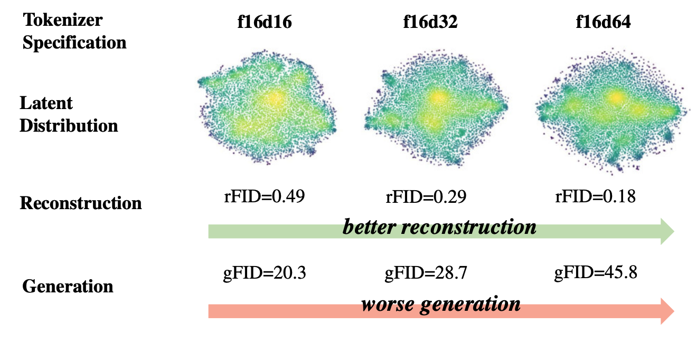
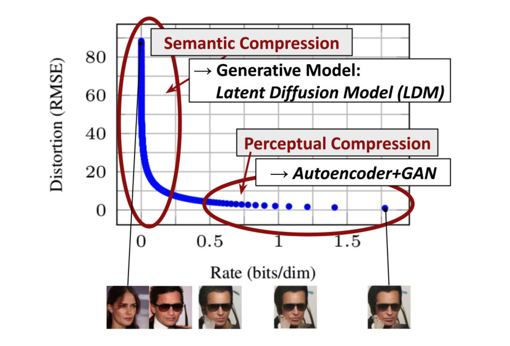
图 22：右：gFID 与 rFID 之间的权衡，图片来自 [51 ]。其中 f f f d d d 17 , 37 ]。这条特定曲线由 DDPM 生成，而 DDPM 本身也是一种 VAE。尽管失真与码率计算中的一些技术细节，可能与本文的非严格定义不同，但整体直觉相同。
附录 E 扩散模型文献导读
围绕扩散模型与流匹配，文献中已经形成了一个庞大的模型家族。阅读这些论文时，你可能会看到与本课程不同但等价的表述方式，这有时会令人困惑。因此，这里简要概述不同框架及其差异，并介绍相应的历史背景。理解本文其他内容并不需要阅读本附录 ；它主要用于辅助你阅读相关文献。
离散时间与连续时间。
最早的去噪扩散模型论文 [41 , 42 , 17 ] 没有使用 SDE，而是在离散时间 中构造马尔可夫链，时间步为 t = 0 , 1 , 2 , 3 , … t=0,1,2,3,\dots t = 0 , 1 , 2 , 3 , … 43 ] 说明，这些构造本质上是连续时间 SDE 的近似。而在连续时间情形中，ELBO 变得紧致，不再只是严格偏小的下界。例如，定理 12 与定理 22 给出的是等式，而不是下界，离散时间情形则不同。由此，SDE 构造日益流行，因为它在数学上更“干净”，并且可以在训练后通过 ODE/SDE 采样器控制模拟误差。不过，两类模型采用相同的损失，并无根本差异。
“前向过程”与概率路径。
最早一批去噪扩散模型 [41 , 42 , 17 , 43 ] 没有使用概率路径 这一术语，而是通过所谓的前向过程 为数据点 z ∈ R d z\in\mathbb{R}^{d} z ∈ R d
X ˉ 0 = z , d X ˉ t = u t forw ( X ˉ t ) d t + σ t forw d W ˉ t (146)
\bar{X}_{0}=z,\quad\mathrm{d}\bar{X}_{t}=u^{\text{forw}}_{t}(\bar{X}_{t})\mathrm{d}t+\sigma^{\text{forw}}_{t}\mathrm{d}\bar{W}_{t} \qquad\text{(146)}
X ˉ 0 = z , d X ˉ t = u t forw ( X ˉ t ) d t + σ t forw d W ˉ t (146) 基本思路是：采样数据点 z ∼ p d a t a z\sim p_{\rm{data}} z ∼ p data t → ∞ t\to\infty t → ∞ N ( 0 , I d ) \mathcal{N}(0,I_{d}) N ( 0 , I d ) T ≫ 0 T\gg 0 T ≫ 0 X ˉ T ∼ N ( 0 , I d ) \bar{X}_{T}\sim\mathcal{N}(0,I_{d}) X ˉ T ∼ N ( 0 , I d ) X ˉ 0 = z \bar{X}_{0}=z X ˉ 0 = z X ˉ t \bar{X}_{t} X ˉ t p ˉ t ( ⋅ ∣ z ) \bar{p}_{t}(\cdot|z) p ˉ t ( ⋅ ∣ z ) z ∼ p d a t a z\sim p_{\rm{data}} z ∼ p data X ˉ t \bar{X}_{t} X ˉ t p ˉ t \bar{p}_{t} p ˉ t X t ∣ X 0 = z X_{t}|X_{0}=z X t ∣ X 0 = z u t forw u^{\text{forw}}_{t} u t forw X ˉ t ∣ X ˉ 0 = z \bar{X}_{t}|\bar{X}_{0}=z X ˉ t ∣ X ˉ 0 = z a t a_{t} a t u t forw ( x ) = a t x u^{\text{forw}}_{t}(x)=a_{t}x u t forw ( x ) = a t x 40 , 44 , 23 ]：
X ˉ t ∣ X ˉ 0 = z ∼ N ( α t z , β t 2 I ) , α t = exp ( ∫ 0 t a r d r ) , β t 2 = α t 2 ∫ 0 t ( σ r forw ) 2 α r 2 d r
\bar{X}_{t}|\bar{X}_{0}=z\sim\mathcal{N}\left(\alpha_{t}z,\beta_{t}^{2}I\right),\quad\alpha_{t}=\exp\left(\int\limits_{0}^{t}a_{r}\mathrm{d}r\right),\quad\beta_{t}^{2}=\alpha_{t}^{2}\int\limits_{0}^{t}\frac{(\sigma^{\text{forw}}_{r})^{2}}{\alpha^{2}_{r}}dr
X ˉ t ∣ X ˉ 0 = z ∼ N ( α t z , β t 2 I ) , α t = exp 0 ∫ t a r d r , β t 2 = α t 2 0 ∫ t α r 2 ( σ r forw ) 2 d r 这些其实就是高斯概率路径。因此可以说，**前向过程是构造（高斯）概率路径的一种特定方式。**流匹配 [25 ] 引入“概率路径”这一术语，是为了在简化构造的同时扩大其一般性：首先，扩散模型的“前向过程”实际上从未被模拟，训练时只是从 p ˉ t ( ⋅ ∣ z ) \bar{p}_{t}(\cdot|z) p ˉ t ( ⋅ ∣ z ) t → ∞ t\to\infty t → ∞ p i n i t p_{\rm{init}} p init
时间反演与求解 Fokker–Planck 方程。
扩散模型最初并非通过 Fokker–Planck 方程或连续性方程构造训练目标 u t target u^{\text{target}}_{t} u t target ∇ log p t \nabla\log p_{t} ∇ log p t 时间反演 [2 ]。时间反演 ( X t ) 0 ≤ t ≤ T (X_{t})_{0\leq t\leq T} ( X t ) 0 ≤ t ≤ T
P [ X ˉ t 1 ∈ A 1 , … , X ˉ t n ∈ A n ] = P [ X T − t 1 ∈ A 1 , … , X T − t n ∈ A n ] (147) ，对所有 0 ≤ t 1 , … , t n ≤ T , 且 A 1 , … , A n ⊂ S (148)
\begin{aligned}
\mathbb{P}[\bar{X}_{t_{1}}\in A_{1},\dots,\bar{X}_{t_{n}}\in A_{n}]=\mathbb{P}[X_{T-t_{1}}\in A_{1},\dots,X_{T-t_{n}}\in A_{n}] \qquad\text{(147)} \\
\text{，对所有 }0\leq t_{1},\dots,t_{n}\leq T,\text{ 且 }A_{1},\dots,A_{n}\subset S \qquad\text{(148)}
\end{aligned}
P [ X ˉ t 1 ∈ A 1 , … , X ˉ t n ∈ A n ] = P [ X T − t 1 ∈ A 1 , … , X T − t n ∈ A n ] (147) ，对所有 0 ≤ t 1 , … , t n ≤ T , 且 A 1 , … , A n ⊂ S (148) 根据 [2 ]，以下 SDE 给出满足上述条件的时间反演：
d X t = [ − u t ( X t ) + σ t 2 ∇ log p t ( X t ) ] d t + σ t d W t , u t ( x ) = u T − t forw ( x ) , σ t = σ ˉ T − t
\begin{aligned}
\mathrm{d}X_{t}= & \left[-u_{t}(X_{t})+\sigma_{t}^{2}\nabla\log p_{t}(X_{t})\right]\mathrm{d}t+\sigma_{t}\mathrm{d}W_{t},\quad u_{t}(x)=u^{\text{forw}}_{T-t}(x),\sigma_{t}=\bar{\sigma}_{T-t}
\end{aligned}
d X t = [ − u t ( X t ) + σ t 2 ∇ log p t ( X t ) ] d t + σ t d W t , u t ( x ) = u T − t forw ( x ) , σ t = σ ˉ T − t 由于 u t ( X t ) = a t X t u_{t}(X_{t})=a_{t}X_{t} u t ( X t ) = a t X t 命题 1 所推导训练目标的一个特例。不同表述采用了不同时间约定，因此这一点并非显而易见，推导可见 [26 ]。但在生成式建模中，通常只使用马尔可夫过程的终点 X 1 X_{1} X 1 23 , 28 ]。所有不同于时间反演的扩散模型采样方式，仍需借助 Fokker–Planck 方程。希望这些讨论能解释：为什么如今许多人直接通过 Fokker–Planck 方程构造训练目标，正如 [25 , 27 , 1 ] 所开创、本课程所采用的做法。
流匹配 [25 ] 与随机插值 [1 ]。
本文框架与流匹配及随机插值（SI）框架最为接近。正如前文所述，流匹配仅讨论流。它的一项关键创新就是说明：无需借助前向过程与 SDE，仅使用流模型也能实现可扩展的训练。由于这一限制，从流匹配模型采样时，演化是确定的，只有初始 X 0 ∼ p i n i t X_{0}\sim p_{\rm{init}} X 0 ∼ p init 定理 17 。随机插值的名称来自 插值函数 I ( t , x , z ) I(t,x,z) I ( t , x , z ) p i n i t p_{\rm{init}} p init p d a t a p_{\rm{data}} p data
小结 45（扩散模型的其他表述）
文献中常见的其他扩散模型表述，往往组合使用以下若干要素：
**离散时间：**常使用离散时间马尔可夫链近似 SDE。
**反向时间约定：**常采用与本文相反的时间约定，令 t = 0 t=0 t = 0 p d a t a p_{\rm{data}} p data t = 0 t=0 t = 0 p i n i t p_{\rm{init}} p init
**前向过程：**前向过程，也称加噪过程，是构造（高斯）概率路径的一种方式。
**通过时间反演构造训练目标：**也可以通过 SDE 的时间反演构造训练目标。采用相反时间约定后，这只是本文构造的一个特例。